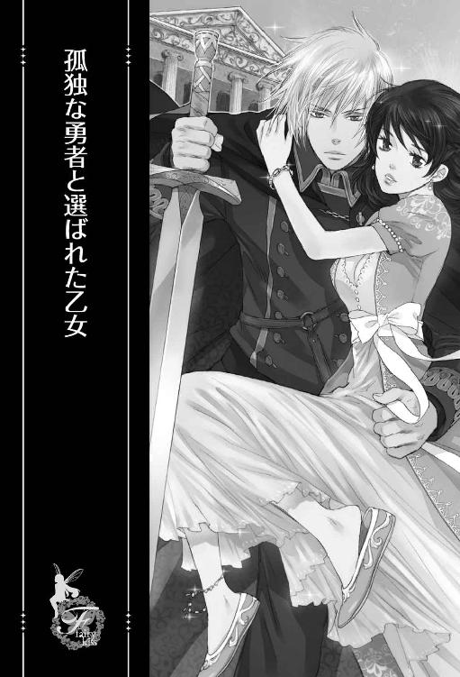

| 孤独な勇者と選ばれた乙女【SS付】【イラスト付】 (フェアリーキス) | |
| 市尾彩佳 | |
| (2016) | |
この作品はフィクションです。
実際の人物・団体・事件などに一切関係ありません。

イラスト：ひたき
プロローグ
ここどこ......？ 怖いよ......。
低木の間にできた隙間に身を隠した理奈は、心の中で呟いてぎゅっと膝を抱えた。
会社にいたはずなのに......。
今いるのは、鬱蒼とした森の中だった。針葉樹らしき木が起伏の激しい地面に生えていて、幹の下のほうは枝葉がなくて視界は開けているけれど、上のほうで生い茂る枝葉が空からの光を遮る。枝葉の隙間でもあるのだろうか。ところどころに低木の茂みがあって、理奈はそのうちの一つに身体を押し込んでいた。絡まるように伸びた細い枝に小さな葉がぽつぽつとついているだけなので、中にいる理奈は見えてしまっているだろう。だが、他に隠れられる場所がない以上、その茂みがカモフラージュになってくれるのを祈るしかなかった。
最初のうちは薄暗いながらもなんとか周囲が見えていたけれど、今は日が暮れて辺りは闇に包まれている。
ここが安全ではないことはわかっている。でも真っ暗闇な今、動くのは余計に危険だ。
誰か助けて......。
理奈は心の中で呟く。
声を上げて助けを呼ぶわけにもいかない。ここに来てすぐ、恐ろしい光景を目にしたからだ。
理奈が見たのは、奇妙な形をした獣だった。黒々とした身体のあちこちから牙みたいなものを生やしたイノシシのような形をした生き物。それがあっという間に二周りは大きい、身体から角の生えていないイノシシに追いつき、がつがつと貪り始めた。骨を嚙み砕くガリゴリという音に足が竦んだけれど、見つかったら自分が襲われるかもしれない。隠れなきゃという思いに助けられて、理奈はできるだけ音を立てずに近くの茂みに身を隠したのだった。
それからあっという間に日が暮れて、こうして身動きが取れなくなっている。
ここに来てしまってから、どのくらいの時間が経っただろうか。時計代わりにしていたスマートフォンを持っていないので、時間がわからない。理奈はこのわけのわからない場所に来る直前まで、会社で事務仕事をしていた。仕事にスマホを使うことがないので、デスク下に置いた鞄の中に入れたままだ。
着の身着のままなので、ろくなものを持っていなかった。ポケットに入れていたハンカチとボールペン。持ち物とはいえないけれど、白いブラウスに前開きの紺のベスト、ベストと同色のタイトスカートという、会社の冴えない制服。それと肌色のストッキング、ヒールの低い靴。とてもじゃないけど、森で過ごすのにぴったりな服装とは言えない。上着も着ていないので、夜の寒さが身体にこたえる。
神経が極限にまで達してしまったのか、少し意識が飛んでいたらしい。
急に物音がして、理奈ははっと目を覚ました。耳をすませば、複数の足音が近付いてくるのが聞こえる。
ハッハッと荒く息をする音。人じゃない。これは何かの動物の息遣いだ。
理奈は恐怖に震えた。音を立ててはいけないと思うのに、歯がかちかちと鳴る。
それらの音はまっすぐこちらに向かってきているようだ。もしかすると、すでに理奈がここにいることに気付いているのかもしれない。
そう思った瞬間、木の葉や石を蹴散らして走る足音が聞こえた。
「ひっ......！」
獣が襲いかかってくると思い、理奈は身を竦めて目をきつく閉じる。
けれど理奈を襲ったのは、大量の何かが地面に叩きつけられる、凄まじい音だけだった。それに続いて次々と起こる、獣たちの断末魔の叫び。
何......？ 何が起こったの......？
獣に襲われそうもないと感じると、理奈はそろりと瞼を開く。
すると茂みの向こうに、信じられない光景が広がっていた。
茂み越しに見えるのは、青白い光に照らされた氷柱。その一つ一つが獣を突き刺し地面に縫い付けている。
地面に縫い付けられてもがく獣を、氷柱の合間を縫うようにして駆け抜ける人影が斬り捨てていた。青白く発光する長剣で斬られた獣は、断末魔の叫びを上げて蒸発するように消える。
現実に起こっていることとは、とても思えなかった。
恐ろしい。けれど目が離せない。
引き締まったしなやかな身体が、流れるような動きで剣を振り、次の獣へと走り寄る。まるで舞い踊っているかのように美しい。
獣の断末魔の叫びがひっきりなしに響いているのに、理奈は恐怖をすっかり忘れていた。
身体つきからして男性らしきその人物が、地面に膝をつきながら最後の獣に剣を突き刺す。獣はつんざくような悲鳴を上げて消滅した。
男性は大きく息をつくと、ゆっくり立ち上がる。
その様子に我に返った理奈は、身を硬くして耳をすました。獣の足音はもちろん、息遣いもうなり声もまったく聞こえない。獣はすべていなくなった──違う、すべて倒されたのだ。目の前にいる、この人一人の手によって。
剣の青い光が、次第に消えていった。と同時に、それを反射していた氷柱からも光が失われていく。辺りが闇に包まれようとしたそのとき、再び明かりが周囲を照らした。今度は赤い炎だ。不思議なことに、上に向けられた彼の手のひらから発せられている。
そのときになって、理奈は彼の姿をようやくまともに見た。
白いシャツに薄青色のズボン。ズボンの裾は、膝下まであるこげ茶色のブーツの中にたくしこまれている。これだけなら、ちょっと珍しい服装としか思わなかっただろう。けれど彼は片手に、ファンタジー世界に出てきそうな長剣を持っていた。それにうつむいた彼の顔を隠す、青白く光る髪。
この世のものとは思えなかった。地毛とは考えられないような色合いで、染めたのとは明らかに違う透き通った色をしている。
理奈がぼうっとして見とれていると、うつむいていた彼が顔を上げた。長めの髪がさらりと退いて、美しい容貌があらわになる。
年の頃は、二十歳の理奈と同じくらいだろうか？ 西洋の人のような顔立ちをしている。通った鼻、尖った顎、薄くて形のよい唇。切れ長の目の奥に、緑がかった青色の瞳が輝いている。
その不思議な色の瞳が向けられた途端、理奈は恐ろしくなった。
鋭い視線と硬い表情が、彼は味方とは限らないのだということを思い知らせる。
「あ......あの、あなたは......」
何か話さなくちゃと思うのに、それ以上言葉が出ない。
彼が口を開き、何かを言った。どこの国のものなのかもまったくわからない言葉に、理奈はさらなる恐れを抱く。
ここは日本じゃないの？ 目の前にいる人は、敵なの？ 味方なの？
近付いてきた彼から、理奈はできるだけ離れようとした。彼が持つ剣がいつ理奈に振り下ろされるかわからない恐怖に怯えて。
お尻を擦るように後ろに下がれば、背中に枝が当たって痛い。それにも構っていられずもっと茂みの奥に入ろうとしていると、すぐそばまできた男性はしゃがみ込み、地面に剣を置いてその手を差し出してきた。理奈は反射的にびくっとする。
男性が、また何かを言った。
おそるおそる顔を上げると、彼の困り果てた表情が見て取れた。
先ほどまでの冷たさはない。理奈を案じる様子が伝わってくる。
この人は、敵じゃないんだわ......。
その想いが、彼に対する恐怖を溶かしていく。
もう一度手を差し出されたとき、理奈は自然に彼の手を取っていた。
思いがけない出来事とこの世界の理
森で助けられた数時間後、理奈は真っ白い石でできた建物の一室で、飴色に磨かれた長方形のテーブルに着いていた。
目の前に次々並べられているのは、理奈が知らない料理。煮るか蒸すかされた野菜の上に紫色のソースがかけられていたり、細長く切られた何かの肉に何なのかわからない大きな葉っぱが巻き付けてあったり。
状況から察するに、理奈のために並べてくれているのだろう。
食事を出してもらえるのはありがたいけれど、何故こんな風にもてなされているのかわからなくて混乱する。
──彼の手を借りて茂みの中から出た理奈は、あとからやってきた十数人の男性に囲まれて森の外に出た。そして森から出てすぐのところに停まっていた馬車に乗せられて、真っ白な建物の前まで連れてこられた。
その建物は、ほとんどが大きな白い石でできていた。まるでギリシャの古代神殿に使われているような石だ。同じ石でできた十数段の階段を上がると、見上げるほど天井の高い建物の中に入った。入ってすぐのところが体育館みたいに広い空間になっていて、その一番奥に理奈の背丈くらいありそうな大きな石が飾られていた。その石は透き通っていて、オレンジ色の揺らめく光を放っている。
天井は巨大な石柱に支えられていて、理奈は数人に囲まれて、石柱と壁の間にできた通路を案内されその建物を通り抜けた。通り抜けた先にも通路があり、窓がなく天井もあまり高くないその道を、等間隔に灯るろうそくを頼りに進む。通路を通り抜けると外に出て、空き地の向こうにあった建物に入った。
建物の入り口で待っていた、理奈より少し年下に見える女の子がお風呂に案内してくれて、肩の部分が紐になっているサマードレスのような白いワンピースを貸してくれた。室内のせいか気温が暖かいので、薄着でも大丈夫だけれど、身体の線が出てしまって恥ずかしい。しかも下着類は一切なく、そのまま着るしかなかった。さっきまで身に着けていた下着でもいいから着けたいと思ったけれど、入浴中に服だけでなくパンプスも全部持っていかれてしまって見当たらない。返してもらいたかったけれど、言葉が通じなくて、身振り手振りでも上手く伝えられない。理奈は下着を身に着けるのを諦めてワンピースを頭からかぶって着て、女の子が用意してくれた柔らかい皮でできたサンダルを履いて浴室から出た。
そして二階に案内され、身振り手振りでテーブルに着くように示されたのだけど、並べられている料理はどう考えても一人分には多すぎる。言葉が通じないから、一緒に食べる人がいるのだろうかと訊くこともできない。
女の子が料理を並べるのに忙しくしている間、理奈はその様子を行儀よく椅子に座って眺めながらふと考える。
あの人はどこに行ったのかな......。
彼は理奈を馬車に乗せたけれど、彼自身は馬車に乗り込まなかった。それから一度も見かけていない。
危ないところを助けてもらったからだろうか。出会ったばかりの彼に奇妙なほどの親近感があって、彼の姿が見えないというだけですごく心細い。
知りたいことは他にもある。何故会う人会う人、理奈に対して妙に礼儀正しく、初対面なのにこんなにも親切にしてくれるのだろうかと。
食事を並べてくれている女の子もそうだ。
ピンクがかった茶色の髪をポニーテールにし、理奈が着ているのとは違う、厚手でだぶっとした薄青色の服を着た彼女は、カレースプーンの二倍近くあるスプーンを口に運ぶ仕草を何回かして、それからそのスプーンを理奈に持たせる。
食べて、ということなのだろう。
けれど女の子は席に着く様子がないし、他に誰かが来る気配もない。どう考えても一人で食べ切れない料理を目の前にして、理奈は困ってしまう。
しかも、今は空腹を感じられなかった。見知らぬ場所にいる不安と、言葉の通じない人と接していることへの緊張とで、食事が喉を通るとは思えない。
それで遠慮しようと思って両手で食卓を押しやるような仕草をしてみた。けれど女の子には通じなかったのか、困った顔をしてまたスプーンを口に運ぶ仕草をする。
面倒をかけてしまっていることに気付き、理奈はスプーンを受け取った。一番近くに置かれた皿に盛られた、紫色のソースのかかった野菜らしきものを一つすくう。
初めて見る食べ物だから、口に入れるのはちょっと怖い。けれど匂いは悪くないし、女の子は理奈が食べ始めるのを期待の目で見ている。
理奈は思い切って口の中に入れてみた。咀嚼すると、少しぴりっとした甘酸っぱい味が口の中に広がる。なじみのない味だけど、何とか食べられそうだ。そのことにほっとして顔をほころばせると、女の子は満面の笑みになった。
一人で食べるのは気が引けて、理奈はテーブルに置かれてあったスプーンを取って女の子に差し出す。女の子は目を丸くしたあと、お腹を突き出してぽんぽんと叩いた。この世界も、そのジェスチャーがお腹一杯のサインなのだろうか。考えてみれば、夜もかなり遅い。夕食が終わっていてもおかしくない時間だ。
とはいえ、じっと見つめられながら自分だけ食事をするのは気まずい。女の子にちらちら目を向けながら食べていると、不意に女の子が自分の胸に手を当て、ころころとしたかわいい声で言った。
「ハウィー、ハウィー」
何を言おうとしているんだろうと思っていると、女の子は自分の胸に当てていた手を理奈に差し出す。
手に持っているものを渡してと言っているのだろうか。理奈は女の子の手のひらにスプーンを乗せようとする。女の子はそれを拒否するように理奈の手を押し返すと、もう一度胸に手を当てて「ハウィー、ハウィー」と繰り返し、もう一度理奈に手のひらを向けてきた。
もしかして、と思い、理奈は女の子に手のひらを差し出して言う。
「ハウィー？」
女の子は顔を輝かせてうなずく。
それで理奈は、今度は自分を指差して言った。
「理奈......？」
「リナ！」
女の子は嬉しそうに自分を指差して「ハウィー」と言い、理奈を指差して「リナ」と呼ぶ。
自己紹介だったのね......。
聞きなじみのない言葉だったから、名前だとすぐに気付けなかった。けれどそれがわかると、理奈も嬉しくなって、女の子──ハウィーと同じことをする。ハウィーも楽しそうに繰り返した。
言葉が通じなくても、こうやって少しずつ打ち解けていくことができるかもしれない。
それに気付いたことでほっとした理奈は、急に空腹を感じた。ハウィーにまた食べるよう勧められて、料理をせっせと口に運ぶ。
二皿食べ終えたところで、理奈はスプーンを置いた。お腹はいっぱいになったし、他の皿の料理は口をつけなければ他の誰かが食べられるかもしれない。
ハウィーが弱った顔をして、別の皿をあれこれ勧めてくる。なので、理奈はお腹をせり出してぽんぽんと叩くと、ハウィーはほっとしたように笑った。
そのとき、扉がノックされる音がした。外から誰かの声が聞こえてくる。ハウィーは理奈ににこっと笑いかけてから、扉のほうに向かった。
扉は木でできていて、ハウィーは取っ手を持って内側に引っ張る。外にいた人と何かを話していたかと思うと、困ったような顔をし、それから理奈を見た。
ハウィーは自分の胸に手を当て、その次に外を指差す。どうやら誰かに呼ばれて行かなければならないらしい。
理奈を一人にすることを気にしてくれているのだろうか。「大丈夫です」と言葉で伝えられない代わりに、理奈は微笑んで小さく手を振った。それでわかってくれたのだろう。ハウィーもにこっと笑って手を振り返してくれて、それから部屋を出ていった。
入れ替わりに、別の人が入ってくる。
その姿を見て、理奈はぽかんと口を開けた。
服はハウィーが着ていたローブをもっとゆったりさせた感じだろうか。ひらひらとした袖の部分と、足首まである広がった裾の部分に金の刺繍が施されている。
そのローブより目がいったのは、足下近くまで伸びた真っ白な髪と、理奈に向けられた紅い双眸だった。
きれい......。
まるでルビーのようだ。それが人形のように愛らしい顔と真っ白な髪に映えている。
ぼうっと見とれていると、その女性は理奈のすぐそばまでやってきた。
そのとき理奈は、彼女が無表情なのに気付いてぎくっとする。
無意識に逃げ腰になり、席を立って後退りかけた理奈に、女性は手に持っていたコップを押しつけてきた。
「え？ あの......」
しかたなく受け取ったものの、どうしたらいいのかわからない。戸惑って視線を送れば、女性はコップを口元に傾けるようなジェスチャーをする。
これを飲むの......？
コップの中を覗き込めば、赤黒い毒々しい色の液体が入っている。匂いも妙に甘ったるい。
正直、口にしたくないような代物だ。それをにこりともしない人に飲むよう促されたって、飲む気になれるわけがない。
理奈が飲もうとしないからか、女性は理奈からコップを取り返して中身を一口飲んだ。
女性の喉がこくんと動く。
その様子をぽかんとして見ていた理奈に、女性は再びコップを押しつけてきた。
聞かなくても何となくわかる。多分毒見をしてみせたのだ。
何だか申し訳ない気分になって、理奈はコップに口をつけた。少しどろっとしていて、匂い同様奇妙に甘ったるい味に、理奈は口を離して顔をしかめる。
飲むのをやめてしまった理奈に、女性はもっと飲めというようにコップを傾ける仕草をした。理奈は我慢して、何とか全部を飲み干す。
別の飲み物で口の中の味を飲み下したかった。けれど、女性は空になったコップを受け取ると、入ってきたのとは別の扉の前まで行って手招きする。
待たせてはいけないと思い、口の不味さを我慢しながら近付くと、女性はその扉を大きく開けて中に入っていった。
中は薄暗かった。
今までいた部屋のランプの明かりが差し込んで、タンスがあったり、服らしきものが何かにかかっているのが微かに見える。
女性はその部屋を突っ切って、反対側にある扉も開けた。
そちらには明かりがついていた。
また手招きされたので近くまで行くと、今度は背中をぐいっと押されて、部屋の中に押し込められる。
「あ、あの......」
言葉が通じないことを忘れ、理奈はものを訊ねようとして振り返る。
そのときには、女性は部屋の外から扉を閉めるところだった。
扉がぴったりと閉まると、理奈は途方に暮れた。
......ここで眠るようにってこと？
部屋の中央には大きなベッドが置かれていた。理奈と同じ体格の人なら、三人は一緒に寝られそうな広さだ。
近寄って見てみれば、白のベッドカバーには全体に細い金の刺繍がされていて、このベッドが高価であることが一目でわかる。
他にも、白い柱に施された流線形の彫刻や、部屋の四隅に灯るろうそくを支える金の燭台。まるで西洋の有名なお城の寝室に通されてしまったみたいで落ち着かない。
誰かと間違えられてるんじゃない......？
ごちそうが振る舞われたことといい、理奈はこのような待遇を受ける理由がわからない。誰かと間違われていると考えたほうが、よっぽどか理解できる。
言葉が通じなくても、何とか誤解を解かなきゃ......。
そう思ってベッドのそばから入ってきた扉のほうへ移動しようとしたとき、この部屋にあるもう一つの扉が開いた。
理奈はびくっとして振り返った。
そして入ってきた人の顔を見てほっとする。
森の中で助けてくれた男性だった。森にいたときと違い、白いパジャマのようなシャツとズボンを身に着けている。理奈が着ているドレスと同じ生地でできているようだ。
それを見て、理奈は自分の着ている服がワンピースというより寝間着みたいなものだということに気付いた。
だから下着類を貸してもらえなかったのかもしれない。下着を着けないで人前を歩き回るのは恥ずかしかったけれど、寝間着であれば着ている姿をあまり他人に見せたりしない。
でも今は、彼に見られてしまっていた。
ろうそくは意外と明るく、理奈に彼の姿がよく見えているように、彼にも理奈の姿がよく見えてしまっているだろう。身体の線まではっきりと。
「あ、あの......」
まじまじと見られてしまって居心地が悪い。理奈は恥ずかしさをごまかそうと愛想笑いをする。
その途端、男性は怒りをあらわに怒鳴り出した。
え......何で......？
言葉が通じないから、彼が何と言って怒ってるのかわからない。
けどすぐに、ここが彼の寝室かもしれないことに思い至った。
勝手に入り込んだ理奈に、「出ていけ」と言ってるのかもしれない。
「ごっごめんなさい！」
理奈は腰を折って大きく頭を下げた。それから顔を上げると、悪意はないのだということをわかってもらいたくて笑みを作る。
しかし、彼はさらに怒って理奈に向かってくる。彼の怒りに気圧された理奈は、部屋から出ていくことはもちろん、その場からも身動きできなかった。
男性は理奈の肩を強く摑み、ベッドに押し倒す。
上質なベッドの上で、理奈の身体は跳ねた。
その身体を、男性は理奈の両手首を摑んで、ベッドに縫い止める。
男性は再び怒鳴った。
混乱する理奈は、笑みをひきつらせながら言う。
「あ、あの......すみません。なんて言ってるのかわからなくて......」
もちろん、意味が通じるわけがない。男性は言葉が通じないことに苛ついたのか、ちっと舌打ちをして理奈に顔を近付けてきた。
唇と唇が重なる。
驚きのあまり、理奈は瞳がこぼれんばかりに目を見開いた。
生まれて初めてのキス。
そのキスを、こんな形ですることになるなんて。
熱く湿った何かが、理奈の唇をこじ開けようとする。それが彼の舌だとわかった瞬間、理奈は我に返って顔を背けようとした。ところが彼の手がいつの間にか理奈の顎を捕らえていて、顔を傾けることもできない。自由になっていた手で彼の肩を押してもびくともしない。
そうしているうちに、彼の舌が口腔に入り込んできて歯茎をなぞった。
その瞬間、首から背筋にかけてぞくぞくとした感覚が走る。
今の何......？
自分の身体の反応に戸惑っていると、彼は不意にキスをやめて顔をしかめた。理奈の口の中に残っていた、不味い味に気付いたのだろう。
これでやめてくれるかもしれないとほっとしたとき、彼は再び口付けてくる。
理奈の油断は、彼の舌を歯列の奥まで招いてしまった。口蓋を探られ、舌をまさぐられる。
彼は理奈が不味いと思った味を味わっているかのようだった。彼の舌は、甘ったるいあの味を舐め取るように動く。
味の溶け込んだ唾液を彼に吸い取られると、理奈の口の中から不快が薄れる。唾液と共に舌も吸い上げられ、先ほど歯茎をなぞられたときにもあったぞくぞくとした感触が、背筋から全身に広がっていく。
息が上手くできない。彼の顔が近すぎて、どうやって息をしたらいいかわからない。
酸欠で頭がぼうっとしてきた頃、彼がようやく顔を離した。
「はぁ......はぁ......」
口を解放され、このときとばかりに理奈は深呼吸を繰り返した。逃げなきゃいけないと思うのに、息が苦しくて動けない。
彼がまた怒ったように何か言ったけれど、反応することもできなかった。
そうしている間に、ゆったりとした寝間着の襟刳りを引き下げられた。理奈の大きめの胸がむき出しになり、彼の目の前にさらされる。
「......っ！」
驚きのあまりに声も出なかった。隠したいのに、何故か腕が痺れて上がらない。
彼は理奈の腰を両手で摑んで押し上げた。理奈の身体はカバーの上を滑って、ベッドの中心へと移動する。
ギシッという音と共にベッドが揺れた。その大きな揺れ方から、彼がベッドに上がったのだとわかる。
理奈の胸がずくんと痛んだ。
まさか、彼がそんなことするわけが──。
理奈は心の中で否定するのに、彼の行動が理奈の良心的な考えを裏切る。
理奈の足の間に身体を割り込ませた彼は、寝間着の裾から右手を差し入れてきた。
「や......っ！ まっ待って────あ......ッ」
性急に叢をかき分けた指に、その奥にあった蕾を擦られ、理奈自身の意志に反して身体が跳ねる。
どうしちゃったの、わたし──!?
自分でも滅多に触れない恥ずかしい場所だけど、彼に触れられただけで大きく反応してしまうなんて信じられない。
これが普通なの？ それともわたしがおかしいの？
こんな経験は初めてだから、自分の反応がおかしいのかそうでないのかもわからない。
そんなことより、彼を止めるか逃げるかしなければ。
彼とは愛し合ってるわけでもないし、そもそも初対面でお互いのことを何も知らない。
なのに何でこんなことになってるの──？
彼の顔が胸元に下りてきて、右胸の頂に吸いついた。
「あっ......やぁ！」
吸われながら先端を舌先で転がされ、身体がびくびくと震えてしまう。
秘部をまさぐっていた彼の指は、入り口を見つけると入り込もうとしてきた。けれど一度も開かれたことのない路は、彼の指の進入を拒む。
駄目、なのに......。
ようやく持ち上がった手は彼の腕を摑み、もう一方の手はさらりとした、不思議な色の髪に差し入れられるばかり。
押し退けたいのに、理奈はそれができずにいた。
いけないことだと思う一方で、もっと先まで望んでる自分がいる。
どうかしてる。わたし、こんな──。
理奈の思考は、身体の奥底からわき上がる快楽に押し流されていく。
身体が熱い。息が勝手に上がっていく。
いつからか、くちゅくちゅという水音が聞こえていた。それが自分の秘所から聞こえてくるのに気付いて、理奈はショックを覚え、熱くなっていた頰がより熱くなる。
経験はないけど、多少は知識がある。
わたし、濡れてるんだわ......。
相手は見ず知らずの人なのに。いきなり押し倒されたのに。
なのに、もっとされたいと思ってる──。
欲求に屈した瞬間、彼の指がずるりと奥に入り込んだ。
「あぁ......っ！」
胸元に顔を埋める彼の頭を右腕で抱え、仰け反りながら、ひときわ高い声を上げる。
それからはもう、自分を抑えることができなかった。
「んっ、はぁ......ん、あっ、あっ......」
意味を成さない声が、止めどなく喉奥からあふれる。
根本まで埋められた彼の指に身体の奥底を探られる。触れてもらえない左胸が疼いて自ら手を伸ばせば、それに気付いた彼が放置されていた左胸にも吸いついた。
「あぁ！」
彼の口に含まれた先端から、鋭い快感が体奥へと走る。その刺激に反応して身体に力が入る。
「あっ、ぃやぁ......っ！」
無意識に胎内にある彼の指を締め上げてしまい、羞恥と新たに得た快感とで、理奈はわけがわからなくなってしまう。
そのわけのわからない状況に怯えて頭を強く左右に振れば、彼の大きな手が理奈の顎を捕らえる。そこに再び口付けが与えられた。
今度は強引に舌を挿し入れられたりしない。理奈をなだめようとしているかのように、軽く何度も落とされる。
その優しさに理奈の怯えが引いていくのを見計らってか、胎内に埋められたままだった指が動き始めた。
すでに三本に増やされていた指が閉じた路を広げるようにばらばらと動く。静かな部屋の中に、ぐちゅぐちゅと愛液をかき混ぜる音が大きく響いて、たまらなく恥ずかしい。
その恥ずかしさをわずかながらも和らげてくれるのが、彼の荒い息づかいだった。
彼は興奮している。理奈を欲しがって。
その事実に気付いた瞬間胸がきゅんとして、快楽がせり上がってくる。身体の奥底で何かが弾けると、理奈は甲高い声を上げていた。
「あぁ────！」
瞼の裏が真っ白に光り、痙攣するほどに四肢を強ばらせる。
衝撃的な感覚が過ぎ去ると、理奈は四肢を投げ出し、ぐったりとベッドに身を沈めた。
「はぁ......はぁ......はぁ......」
全速力で走ったときのように息が切れる。
指一本動かすのも億劫な理奈は、彼にされるがままだった。寝間着をお腹までめくり上げられ、両足を大きく開かされる。秘所に何かが当たる。指より太く、熱いものが。
それが何なのか気付いたとき、理奈は慌てて顔を上げた。
「や......っ、待っ────！」
制止は間に合わなかった。それはぐっと押し入ってきて、理奈の胎内に先端を埋める。
理奈は息を詰めた。
大きい──。
理奈の中を目一杯押し広げて進んでくる。その圧迫感と、こじ開けられることで胎内を傷つけられるんじゃないかという恐怖で、身動きが取れなくなる。
「い......あ──」
内壁を強く擦られて、新たな快感が身の内でくすぶり出す。
止めなきゃと思うのに、力を込めてゆっくり入ってくる彼を、息を詰めて見守ってしまう。
駄目だ。こんなことしちゃいけない。
もう一度「待って」と言おうとしたとき、彼のものが何かに突き当たって止まる。
奥まで入れられてしまったのかと思った次の瞬間、彼は理奈の腰を摑みさらに強く突き進んできた。
「あぁ────！」
彼のものが処女膜を破り、身体の奥底にずんと当たる。その衝撃に理奈は悲鳴を上げた。
初めて男性のものを胎内に受け入れ怯える理奈の上で、彼が身体から力を抜くように息を吐く。
信じられないことに、青白い不思議な色の髪をした美しい彼とつながっていた。腿と腿とが当たり、胎内に自分のものでない熱い脈動を感じる。
意外なことに、何かを突き破られた感触はしたものの、痛みはほとんどなかった。一瞬染みるような感触がしただけだ。
そのことよりも理奈を動揺させるのは、初めてだというのに胎内の疼きが高まってきていることだった。
何？ 何なの......？
じっとしていられなくて、自然と腰が揺れてしまう。
それを合図にしたかのように、彼が動き始めた。腰を少し引いては、また押し込んでくる。
「んっ、あっ」
内壁を擦られ最奥を打たれ、疼く身体が求めていたのはこれだったのだと思い知る。
どうしちゃったの、わたし？ 初めてなのにこんなに感じるなんて──。
感じるほどに体奥から新たな愛液があふれ、彼の動きを滑らかにする。抜ける寸前まで腰を引き、勢いをつけて最奥へと叩きつけてくる。
「あっ、やぁっ、んっ、はぁ......んんっ」
いやらしい声が、喉を突くようにして出てくる。彼のもので愛液をかき混ぜられる音が、次第に大きくなっていく。
信じられない。信じたくない──。
自分がこんなにみだらだったなんて。好きかどうかもわからない男性に抱かれて、こんなに感じてしまうなんて。
同じ動きを繰り返していた彼が、不意に動きを止めて理奈の膝裏に手を差し入れた。その手をぐいっと押されると、理奈の身体は折り畳まれ、受け入れている彼の角度が変わる。
「んぁ......！」
最奥の感じる部分を抉るように擦られて、今までにないその強烈な刺激に、膣が勝手に収縮する。
「く......っ」
小さくうめき声を上げた彼は、その一波をやり過ごすと同じ動作を二度三度と繰り返す。
「やぁ......！ んっ、あっ、ま、待って......！」
こんな激しい刺激を与えられ続けたら、頭も身体もどうにかなってしまう。
激しい快楽を散らそうと、理奈は強く首を横に振った。
今度は優しいキスでなだめられることはなかった。
それどころか、彼は一層速い動きで抽挿を繰り返す。
一度は砕け散った快楽が、再び膨らみ始めた。膣は収縮を続け、包み込んだ彼のものを扱くようにしてより多くの快楽を取り込もうとする。
そして、彼に最奥を一際強く抉られた瞬間、胎内に熱い飛沫を感じた。
その瞬間、理奈の快楽も弾け、瞼の裏が真っ白に染まる。
やがて、空に舞い上がったような感覚から舞い降りてくると、意識は深い闇の底へと落ちていった。
彼女が嗤う。
──あなたって肝心なときには味方になってくれないのね。友達だと思ってたあたしが馬鹿だった。
待って。やっぱり放っておけないの。わたしに何ができるかわからないけど。
近寄っていった理奈を、彼女は振り払う。
──いまさら味方面しないでよ！
理奈の身体は落ちていく。
せせら笑う彼女の顔を見ながら、理奈はどこまでもどこまでも落ちていく──。
理奈は、はっと目を覚ました。
夢......だったの？
心臓がばくばくする。
辺りを見回せば、ここがさっきまでいたのとまったく違う場所だということがわかった。
真っ白い石の天井に、天井と柱や壁との境目には、同じ石でできた流線形の彫刻がはめ込まれている。
理奈が横になっているのは、自分のとは違う、寝心地のいいベッドだった。身体の線に沿って沈み、優しく支えてくれる。
何でわたし、自分の部屋じゃないところで寝てるの......!?
慌てて起き上がろうとした瞬間、身体にずきんと痛みが走る。
身体のあちこちに痛みがあったけれど、特に痛いのは身体の奥底の──。
そこがどういう場所か気付いた途端、昨夜の記憶がどっとよみがえった。
息もできないほどの激しいキス。身体をまさぐってくる手。理奈の中に押し入ってきた、彼の熱い──。
そこまで思い出したところで、理奈はかっと頰を火照らせた。
何で、あの人はあんなことを......？
森の中で助けてくれた彼は、この部屋で理奈を見て、すごく腹を立てていた。
男性の寝室に入ったことを懲らしめるためだったとしても、あれはやりすぎなんて言葉じゃ言い表せない。
理奈は力の差に為すすべもなく、見ず知らずの人と結ばれてしまった。
──ううん、違う。わたし、嫌と言いながら嫌がってなんかなかった。
思い出して感じたのは、嫌悪ではなく甘い疼きだった。初めてだというのに、恥ずかしいくらいに感じ乱れて。
寝室に彼の姿がないことにほっとしながら、理奈はそろそろと身体を起こした。
身体にかかっていた上掛けは、膝の上に落ちる。寝間着は着ていたけれど、理奈は上掛を震える手で引き上げ、身体を隠した。
見知らぬ男性に抱かれて歓んでしまったなんて、自分がひどく淫乱に思えてならない。
自分の身体の反応が、たまらなく恥ずかしい。
震えの走る身体を、理奈は上掛けごと両腕で抱き締める。
どのくらいそうしていたのか。
控えめなノックの音がして、ハウィーがこっそり顔を覗かせた。理奈が起きているのを見て、にっこり笑って何か言う。
近寄ってきて上掛けを引っ張るので、理奈は上掛けを摑む手に力を入れてそれを拒んだ。上掛けをはぎ取られたその下には、情事の痕跡があるに違いないから。
昨夜あったことを知られたくない。
理奈が上掛けを取られたくないのだと気付くと、ハウィーは困った顔をして上掛けから手を離した。それから寝室を出ていったと思ったら、すぐに戻ってくる。
戻ってきたハウィーの後ろから、白髪紅瞳の女性が入ってきた。
昨夜、理奈をこの寝室に通した人だ。
警戒して身を硬くしていると、その女性は理奈のそばに立ち、手をかざしてきた。
女性の口から、不思議な言葉が流れ出る。
すると女性の手のひらから、朝日のような輝きが理奈に注いだ。
理奈が驚いて身を引こうとすると、女性の横からハウィーが手を伸ばしてきて理奈の腕を摑み、にっこり笑いながら首を横に振る。
それに気を取られているうちに、女性が何かを口ずさむのが終わり、光を放っていた手も下げられた。
「わたしの言っていることがわかりますか？」
それは女性から発せられた声だった。聞きなじみのない言葉であるのは昨夜と変わりないけれど、何故か言葉の意味が頭にすっと入ってくる。
理奈がおそるおそるうなずくと、女性はまた、知らない言葉で言った。「言葉で答えてください」という意味が伝わってくる。理奈はおずおずと口にした。
「はい......わかります......」
「この【術】は、かけられた人物とその他の人物が異なる言語を使っていても意志疎通できるようにするためのものです」
「【術】......ですか？」
先ほどかけられたらしい【術】は、全ての言葉の意味を伝えてくれるものではないらしい。
そのことがわかっているのか、女性はすんなり答えてくれた。
「神がこの世界にもたらした恩恵です。神は【術】を通して、わたくしたちに特別な力を与えてくださいます。今使った意志疎通の【術】もその一つです」
理奈が持っている知識からあまりにかけ離れていて、言っていることはわかるがいまいちぴんとこない。
何をどう質問したらいいかもわからなくて口ごもっていると、女性は自己紹介を始めた。
「わたしは神殿付き上級神官のセレンといいます。こちらは神官見習いのハウィーです」
理奈から手を離し、セレンの斜め後ろに控えていたハウィーが、一歩前に出てにこっと笑った。
「リナ様、改めて自己紹介にあずからせていただきます。神官見習いのハウィーといいます。よろしくお願いいたします」
「理奈といいます。こちらこそよろしくお願いします」
理奈が小さく頭を下げて自己紹介をすると、セレンと名乗った女性は話を続けた。
「意志疎通の【術】がかかっている間に、我が国の言葉を覚えて積極的に使っていってください。そうすれば、自然と言葉を習得することができるでしょう。言葉が習得できないうちは何度でもかけに参りますので、【術】が切れましたらご連絡ください」
セレンは丁寧に頭を下げて寝室から出ていく。
理奈はセレンを呼び止めたかったが、できなかった。昨夜理奈に何を飲ませたのか、何故この寝室に理奈を通したのか訊きたかったけれど、取り付く島もないセレンの態度に気後れしてしまって。
寝室の扉が閉まってセレンの姿が見えなくなると、ハウィーはにこやかに言った。
「いろいろ知りたいことがおありでしょうけど、まずはお着替えをしましょう」
ハウィーは夕べあったことを知らないのだろうか。誰かに呼び出されたようだったし、知ってたらこんなににこにこしてないんじゃないだろうか。
知らないのなら、このまま知らないでいてほしい。
上掛けの下の姿を見られなくて済む方法はないだろうかと悩みながら、理奈はしどろもどろに言った。
「あ、あの......着替えを用意していただければ、自分で......」
ハウィーはにっこり笑って答える。
「隣の衣装部屋にご用意してあります。リナ様がお一人でお着替えされるのでしたら、わたしはその間にベッドメイクをさせていただいてよろしいですか？」
理奈はぎょっとした。ベッドはもっとまずい。もしかすると、初めてだった印がシーツを汚しているかも──。
「ダメっ！」
思わず叫んだ理奈に、ハウィーは驚いてびくっとする。
理奈は真っ赤になって言い訳を探した。
「ご、ごめんなさい。その......ベッドメイクも自分でするから──」
そんな理奈を、目を丸くして見ていたハウィーは、何かに気付いたようにうなずいて優しく微笑んだ。
「気になさることはありませんよ。リナ様とアルシオン様はご夫婦となられたんですもの。喜ばしいことであって、決して恥ずかしいことではありません」
「え......？」
理奈は呆然とした。
夫婦って何？ ハウィーは夕べのこと知ってたの......？
青ざめた理奈を見て、ハウィーははっとして気まずそうな表情になる。
「余計なことを言って、申し訳ありません。このあと神官長様からすべてご説明する予定になっているので、それまで何もお伝えしないようにと言われていたのに。ともかくお着替えになって、まずは神官長様にお会いになってください」
ハウィーは急いで隣の部屋に行って、すぐに服を抱えて戻ってきた。
「こちらがお着替えになります。着付けでわからないことがございましたら、わたしは隣の衣装部屋にいますのでお呼びくださいね」
抱えてきたものをベッドの上に並べると、ハウィーはそそくさと寝室を出る。
一人になった理奈は、そろそろと上掛けをめくった。
思っていたほどひどい状態ではなかった。寝間着はしわがついていたけど、ほとんど汚れていなかったし。
ただ、寝間着とシーツの一部分にうっすら紅い染みがついていた。
それを見て、理奈はもの悲しい気分になる。
大事にとっておいたわけじゃない。けど、あんな形で失うとは思ってもなかった。
ハウィーが用意してくれた服は、白いワンピースと、ワンピースと同じくるぶしまで丈のある薄青色の上着だった。上着の袖は短く、パフスリーブになっていて、肩や裾の部分に白の透かし模様が細やかに入っている。女性らしくて素敵なデザインだけれど胸元が開き過ぎているのが気になって、理奈はサンダルを履くと、ハウィーが姿を消した扉に近付いた。
「ハウィーさん。服、着てみたんですけど......」
声をかけると、ハウィーはすぐに扉を開けた。理奈を上から下まで眺めてにっこり笑う。
「あとは胴にリボンを結んで、髪を整えれば完璧ですね」
胸元を隠したいと言い出せないまま、理奈は衣装部屋に連れ込まれてしまう。ハウィーは鏡台の前で理奈の髪をくしけずり、編み込みのハーフアップにして髪飾りをつけてくれる。理奈は寝室の反対側の、昨夜食事をごちそうになった部屋に案内された。
その部屋に、緩く波打つ白髪と白い髭を長く伸ばした、老齢の男性がいた。額や目尻などに幾筋ものしわが刻まれていて、青灰色の瞳を宿した目は少しかしこまったような印象を理奈に与える。
セレンのような薄青の生地に銀糸の刺繍が入った服を着た男性は、椅子から立ち上がって挨拶してきた。
「神官長のタマルガルと申します。リナ様、とお呼びしてもよろしいですかな？」
「あの......様はいらないです」
遠慮がちに申し出た理奈に、タマルガルはきっぱりと言った。
「申し訳ありません。事情はこれからお話しいたしますが、我々はリナ様を敬称なしでお呼びしていい立場にないのです。ご了承ください」
断固とした言葉に、理奈は反論できなくなる。
「......はい」
小さな声で返事をすると、タマルガルは語調を和らげた。
「何もわからず、さぞ困っておいででしょう。お食事をしながらでよろしければ、今すぐご説明いたします」
「わたしは、食事は......」
食欲がないので、理奈は小さく首を横に振る。
「それではお食事は後で用意させましょう。どうぞお座りください」
勧められた椅子に座ると、自身も着席したタマルガルは穏やかな口調で話し始めた。
「最初から説明させていただきましょう。──すでにお気付きかもしれませんが、ここはリナ様がお暮らしだった世界とは別の次元にあります」
「はい、何となく......」
思いがけないことが次々起こって、正直理奈はここが夢の中だと言われたほうが納得できる気分だった。そもそも理奈が勤めている会社は街中にあって、そこから急に方向もわからなくなるような深い森の中に移動していたということ自体、普通ならありえない。
けれど夢とは思えないリアルな感覚。身体に残る昨夜の感触が、これは夢ではないと理奈に訴えかける。
夢でないのなら、何が起こっているのか知りたかった。自分は何故ここにいるのか。昨夜のことは何だったのか。
口を閉ざして話の続きを待つと、タマルガルはテーブルの上で両手を組んで語り出した。
「この世界には一つの大陸があり、その大陸を一つの国が治めています。カルシオ＝カドリネス王国という名がありますが、国が一つだけになった時点で国名は不要となり、今ではいくつかの文献に残るだけで、ほとんどの者がその名を知りません。──かつていくつかあった国々は、共通の敵である【魔】に対抗するため、より強い国へ吸収されていくしかありませんでした」
またわからない言葉が出てきた。
「【魔】って何ですか......？」
おずおずと訊ねると、話の腰を折られたことに気分を害することなく、タマルガルは答えてくれた。
「あなた様も森で襲われかけていたと聞いています。獣のような形をしながら、身体の一部に異形を持ったあれです。山野で人知れず発生した【魔】は、やがて街や村に近付いてきて人や家畜を襲います。我々は日夜【魔】狩りを行って被害を未然に防いでいますが、一定年数ごとに突如【巨大な魔】が現れるのです。その【魔】は【勇者】にしか倒せません」
荒唐無稽にしか聞こえない話にさらにわからない言葉が入ってきて、理奈は困惑を深める。
「【勇者】って......」
理奈の無意識な呟きに、タマルガルは丁寧に答えてくれた。
「【魔】の脅威にさらされていた我らをお救いくださるために、神が遣わして下さった方だと言い伝えられています。【魔】は普通に剣や矢で倒そうとしても倒せません。神殿に入り修行を積めば【魔】を滅ぼす【術】を使えるようになりますが、【勇者】の血筋を引く方は、生まれながらにして意思の力一つで【魔】を滅ぼす力を発動できるのです。我々と違って呪文を唱える必要がなく、武器にその力を宿して戦うので、【魔】を倒す速度は【術】より桁違いに速く、強力です」
理奈はふと、森の中であった出来事を思い出した。氷柱で地面に縫い止められた獣が、青白く光る剣に斬られて次々蒸発するように消えていった光景を。
助けてくれた彼は【勇者】という人の血を引いていたっていうこと......？
頭の中で今まで知り得たことをつなぎ合わせながらも、この話に理奈がどう関わってくるのか見当もつかない。
タマルガルは淡々と話し続けた。
「【勇者】の血筋を引く方の中でも最も強い方だけが、人よりもはるかに大きい【巨大な魔】を倒すことができるのです。そして【巨大な魔】を倒した方を新たに【勇者】とお呼びします。アルシオン様は数日前、今代の【勇者】となられました」
「アルシオン、様......ですか？」
「昨夜、誰よりも速くリナ様を見つけ、【魔】に襲われる寸前だったあなた様を救ったと聞いています」
アルシオン......それがあの人の名前......。
理奈は、心の中でその名前を嚙みしめる。
今の話からすると、彼は森の中へわざわざ理奈を探しに来てくれていたのだ。そのおかげで、理奈は助けられたというわけだ。
でも、何故彼は理奈が森の中にいると知って探しに来てくれたの......？
理奈が問いかけるような視線を向けると、タマルガルは申し訳なさそうに目を伏せた。
「そのことでは、リナ様にお詫びしなければなりません。──我々神殿は、【勇者】の力が無事次代へ引き継がれるよう、お力添えさせていただいています。その一つが、【勇者】にふさわしい花嫁を喚び寄せる、選定の【術】を行うことです。選定の【術】を行った際、本来であれば我々が用意した安全な場に選ばれた方が喚び寄せられます。ですが昨日は特殊な事態が発生し、【術】の制御が利かず、あなた様は森の中に落ちてしまわれた。我々の力が至らず危険な目に遭わせてしまい、申し訳ありません」
危険な目に遭ったことについて、考えられるだけの余裕がなくなっていた。
花嫁......？
理奈の気分は、次第に悪くなってくる。
「もしかしてわたしは......」
青ざめ震える声で訊ねると、タマルガルは重くうなずいて答えた。
「はい、昨日選定の【術】を行ったところ、あなた様がこの地に喚ばれました。つまりあなた様は、【勇者】の力を次代に引き継ぐのにふさわしい花嫁、【選ばれた乙女】になられたのです」
花嫁......次代......昨夜の出来事......これらのことから理奈は自分に何が求められているかを知る。
わたし、あの人の子どもを産むために、ここに喚ばれてしまったんだわ......。
ショックに身を震わせながら、理奈は訊ねた。
「わ......わたしは元の世界に帰してもらえないんですか？ それとも、その役目を果たせば帰してもらえるんですか？」
タマルガルは、沈痛な面持ちで言った。
「特殊な事態とは、そのことなのです。【選ばれた乙女】は、通常この国の方で、異世界から喚ばれることは非常に稀なのです。この国の者であれば、辺境の地に住んでいた方であっても、故郷に里帰りすることは可能です。ですが、異世界から喚ばれた方は......」
タマルガルは最後まで言わなかったけれど、理奈はその意味を察した。
帰れないのだ。多分、もう二度と。
青ざめ言葉をなくした理奈に、タマルガルは力を込めて語った。
「あなた様には大変お辛いことになってしまいましたが、我々にはどうしても【勇者】が必要なのです。【巨大な魔】が発生したとき、それを倒せる可能性のある【勇者】候補の方々が駆けつけるまでの間に、毎回必ず街や村が一つや二つ滅ぼされてしまいます。もし【巨大な魔】を倒すことができなければ、滅ぼされる街や村はそれだけにとどまらず、最終的に国全体が滅んでしまうのです。──この世界で生まれ育ったわけではないあなた様にとって、理解しがたく、甚だ迷惑な話であると重々承知しております。お詫びと言っては何ですが、我々にできることなら何でも便宜を図ります。ですから、どうかお願いします。我々に救いの手をお与えください」
タマルガルは立ち上がって深く頭を下げる。
そんな風にされたことのない理奈は、反射的に立ち上がって言った。
「頭を上げてください」
頭を下げられたって許せないこともある。それ以前に、理奈は混乱してしまって何をどう考えたらいいのかわからなくなっている。
なのにタマルガルは何を勘違いしたのか、頭を上げるとほっとしたように微笑んだ。
「ありがとうございます。その寛大さに感謝いたします」
間違いを正そうと口を開く前に、タマルガルは理奈が絶句することを口にした。
「もう一つお詫びしなければならないことがありました。昨夜セレンがお渡しした飲み物は、処女の痛みを和らげるためのものです。身体に害のないものですが、媚薬の効果もあり誘惑に屈しやすい状況にあったと思います。また、アルシオン様にも媚薬を盛りました。ですので、責めるのでしたらアルシオン様ではなくわたしを責めてください」
タマルガルも昨夜のことを知っていただけでなく、そう仕向けた一人でもあったのだ。
話の流れから薄々感じてはいたけれど、まさか媚薬などというものまで飲まされていたとは思わなかった。
そのショックとは別に、理奈は多少安堵を覚えた。初めてなのにあんなに乱れてしまったのは、自分がみだらだからというわけではなかったことに。
「あなた様のお世話は、引き続きここにおりますハウィーがいたします。ご用は何でもハウィーにお申し付けください」
最後にそう言って、タマルガルは帰っていった。
勧められて少しだけ食事をとったあと、建物の中を案内するというハウィーについて、理奈は部屋の外に出た。
「まずは一階から案内いたしますね」
正直あちこち見て回る気分ではなかったけれど、ここで暮らしていかなければならないのなら、今いる場所がどんな風になっているか知っておく必要があると思った。
ハウィーが居室と呼んだ部屋の外に出ると、そこは吹き抜けになっていて、吹き抜けを囲むように廊下が四角く取り囲み、扉が五つと下へ続く階段が一つあった。
ハウィーは階段を下りながら説明をする。
「神殿の敷地内に建つこの棟は、以前よりアルシオン様のお住まいでした。これからは、リナ様もこの棟にお住まいいただくことになります。元は高貴な身分のご夫婦が神殿に滞在される際にお泊まりになった棟です。二階建てになっていまして、一階は談話室と客室が二部屋、あとご存じのように浴室があります」
階段を下り切った正面が、この建物の出入り口になっていた。扉はなく、幅が広く取られていて、入口の脇には男性が二人立っていた。薄青色の服の上に、銀の鎧を身に着けている。森でアルシオンのあとからやってきた十数人の人たちと似たような格好だ。理奈が貸してもらった服といい、ハウィーのローブといい、濃淡は違うけれど薄青色の布が使われた服が多い。
片手に槍を立てて持っていた彼らは、きびすを返して理奈たちのほうを向き、空いている手を胸に当てて目を伏せた。
「この方たちは神殿の守衛官です。神殿内を巡回して不審人物を取り締まったり、こうして要所に立って人の出入りを見張っていてくださいます。リナ様はこの棟からお一人で外に出たりなさらず、必ずわたしをお連れください。神殿内は迷路みたいになっているので迷いやすいですし、広い敷地内のどこかによからぬことを考える輩が潜んでいないとも限らないので」
「よからぬこと......ですか？」
胸はちょっと大きめだけど、冴えない容姿をした理奈に誰が食指を動かすというのか。
アルシオンだって、義務だからしかたなく理奈を抱いたに過ぎない。
夕べ、彼は怒りながら「何でこんな女を抱かなきゃならないんだ」と言っていたのだろう。そうだと考えれば、あれだけ怒っていたのも、怒りながら理奈を抱いたのにも納得できる。──彼が嫌々自分を抱いたのだと思うと、理奈の胸は痛むけれど。
振り返ったハウィーは、理奈が考えてもいなかったことを口にした。
「大変珍しい瞳とお髪ですもの。最初はびっくりしましたけど、よくよく見てみると、艶やかに光ってお美しいです。その美しさに魅了されて、リナ様を手に入れたいと考える不届き者はきっといますよ」
思わぬ賞賛に、理奈は照れてしまう。
癖のない滑らかな黒髪は、理奈の密かな自慢だった。でも、日本では理奈より美しい髪の人はいくらでもいたし、こんな風に褒められたことは一度もない。
「そんなに珍しいですか？」
照れ隠しに訊ねると、ハウィーは神妙にうなずいた。
「珍しいどころか、黒髪と黒い瞳を持つ人間はこの世界にはまずいません。黒が混じったような色の瞳や髪はありますけど、混ざり気なしの黒い色を持つのは、リナ様お一人だけでしょう。これはさらなる厳重な警備が必要になりますね」
うなずきながら一人納得するハウィーに、理奈は恐縮しながら言った。
「わたし、そんな大層なことをしていただくほどの者じゃないんですけど......」
そんな理奈に、ハウィーは驚いたように目を丸くした。
「何をおっしゃるんですか！ リナ様は【選ばれた乙女】なんですよ!?」
それだけで十分説明がつくと言わんばかりに言い切られて、理奈は困ってしまう。
理奈の戸惑いに気付いたハウィーは、肩をすぼめてしゅんとした。
「リナ様はまだこの世界のことをほとんどご存じでないのに、説明不足で申し訳ありません。──選定の【術】を行うには、大変な下準備と大勢の優秀な神官が一堂に会して行わなければならないため、一代につき一度しか行えません。つまり、今代の【勇者】であるアルシオン様の【選ばれた乙女】は、リナ様ただお一人ということなのです。リナ様にもしものことがあれば、【勇者】候補となるお子が生まれないということになり、【勇者】の力の継承は途絶えてしまいます。にもかかわらず、【選ばれた乙女】というかけがえのない方を、興味本位に手に入れようとしたり、そうした人物に売るために拐かそうとする輩がいつの時代にもいたそうです」
平和な世界で暮らしていた理奈には、これだけ聞いてもまだ絵空事のようにしか感じられない。
けれど、ハウィーたちこの世界の人々にとっては切実な問題なのだろう。ハウィーの真剣な話しぶりが、理奈にそのことを感じさせる。
「神殿は【勇者】の力の継承をお助けする役目を持っています。【選ばれた乙女】を守るのも、その役目の一つです。お一人で外を出歩けない不自由をおかけしますが、全力でお守りいたしますのでご安心ください」
ハウィーは自信満々に胸を張る。
理奈は複雑な気分だった。自分に守ってもらわなければならないほどの価値があるとはやはり思えないし、ハウィーは【選ばれた乙女】を守るのであって、理奈を守るわけじゃない。
ここでも、理奈個人が求められることはない。
その寂しさを押し隠し、理奈は曖昧に微笑んだ。
一階を一通り見終わってから、二階に戻った。
「二階はご夫婦の寝室と、その左右に衣装部屋と居室、使用人が泊まる部屋が一つずつあります。わたしは夜、リナ様の居室の隣にある使用人部屋におりますので、ご用の際は呼び紐を引っ張ってお呼びください。こちらにあります」
そう言ってハウィーは、理奈が使わせてもらっている部屋に入り、居室と衣装部屋を通り過ぎて寝室に入る。
ベッドはいつの間にか整えられていた。理奈が脱いだ夜着はなく、シーツもぴしっと張られてその上に金糸の刺繍が施された白いベッドカバーがかけられている。
ハウィーはずっとそばにいたから、別の人が整えたのだろう。誰かにあの紅い染みを見られたかと思うと、居たたまれなくてどこかに隠れてしまいたい気分になる。
理奈のそんな動揺に気付くことなく、ハウィーはすたすたとベッドに近寄って、ベッドの片側に垂れ下っているロープ状の紐に手を添えた。
「この紐を引っ張っていただければ、わたしの部屋のベルが鳴ります。あ、ベッドの反対側にも同じ紐が下がってますけど、あちらを引っ張っても誰も来ないので気をつけてくださいね。アルシオン様側の使用人部屋につながってるんですが、アルシオン様がそばに人を置くことをお嫌いなので、使用人がその部屋に寝泊まりすることがないんです」
それを聞いて、理奈はふと不安を覚えた。
「あの......この寝室をアルシオン様と一緒に使わせていただかなければならないんでしょうか？」
遠慮がちに訊ねると、ハウィーがきょとんとして理奈を見た。
「え？ ダメですか？」
そう言われると困ってしまう。
理奈は彼と結婚することを承諾などしていない。けれど、至れり尽くせりのもてなしを受けているのは、理奈が彼の子を産むことを期待されているからだ。
彼の子どもを産む......。
そのことを意識してしまい、理奈の頰はにわかに火照る。
うつむき加減になってさりげなく火照りを隠しながら、理奈はためらいがちに言った。
「アルシオン様は、わたしと一緒に寝室を使うのは嫌だと思うんです」
ハウィーは不思議そうに首を傾げた。
「え？ どういうことですか？」
「えっと、その......昨夜、アルシオン様がすごく怒ってらしたんです。だから、わたしのことが......気に入らないんじゃないかと思うんですけど」
理奈のしどろもどろな説明を、ハウィーはあっさり否定した。
「急に結婚が決まって、ちょっと不機嫌でいらしただけじゃないでしょうか？ 歴代の【勇者】は、【選ばれた乙女】を下にも置かないほど溺愛したそうですから、大丈夫。アルシオン様も、すぐにリナ様を愛するようになります」
そう言って、一点の曇りもない笑顔で理奈を見る。
これまでの【勇者】が【選ばれた乙女】を溺愛したから、アルシオンも理奈を愛するようになるに決まっている──そういう考え方にはなじめなかったけれど、昨夜のことをハウィーが何とも思ってない理由がわかった。
アルシオンと夫婦になれば理奈が幸せになれると信じて疑わないから、二人が結ばれたことを心の底から喜んでいる。
昨夜、アルシオンと理奈がどういう気持ちだったのか、まったく考えずに。
あれは少し不機嫌なんてものじゃなかった。あまりの怒りように、憎まれているとさえ感じた。
けれどハウィーにそれを言ったところで、信じてもらえそうにない。
もどかしさに唇を嚙みしめると、ハウィーは笑顔を引っ込めて心配そうに訊いてきた。
「あの......答えにくいことをお聞きして申し訳ないのですが、その......昨夜、アルシオン様にひどいことをされたのですか？」
理奈は、また昨夜のことを思い出してしまう。
あんなに怒ってたのに、彼は乱暴じゃなかった。強い力で摑まれたけど、痛くはなかったし。
それに彼から逃れられなかったのは、強い力で拘束されたからというより、むしろ彼から与えられた快感に翻弄されたせいで......。
真っ赤になってうつむいた理奈に、ハウィーはほっとしたように言った。
「大丈夫。ご夫婦としてお過ごしになられる時間が長くなるほど、仲が深まっていきますよ」
ハウィーの考え方にはやっぱりついていけない。
と、ふと理奈は思い出して訊ねた。
「あの......早くアルシオン様と結婚しないとわたしの身が危険だって、神官長様がおっしゃってましたけど、何故なんですか？」
ハウィーは困った顔をした。
「わたしも知らないんです。誰とでも打ち解けるのが早い性格を買われて、リナ様のお世話をする大役をいただきましたけど、神官見習いなので詳しい事情までは教えていただけなくて......もう一度神官長様をお呼びしましょうか？」
「そこまでしていただくことは......またの機会があったときでいいです」
長と名のつく人だから、きっと忙しいのだろう。どのみち理奈は元の世界に帰れないのだし、神官長の言った「結婚」は成立してしまった。今聞こうが後になって聞こうが、きっと何の違いもないはずだ。
ハウィーが用事で席を外し一人になると、理奈はこれからのことを考えた。
元の世界に帰れないのなら、この世界で生きていくしかない。
けど、あの人の花嫁になってあの人の子どもを産んで......？
そんなこと、自分にできるのだろうか？
彼に抱かれたショックは、今はおさまっている。彼も媚薬を飲まされていたというし、この国の事情を考えれば、彼は役目を拒否することなどできなかったのだろう。
彼、すごく怒ってた......。
媚薬を飲まされていたくらいだ。本当は理奈を抱きたくなかったのかもしれない。そんな彼の花嫁として、やっていけるのだろうか。
どうしてわたしだったの......？
地味で引っ込み思案なＯＬで、異性の目を惹くタイプではないことは自覚している。一重瞼で凹凸の少ない典型的な日本人顔。この世界の目鼻立ちのくっきりした華やかな顔立ちの人たちと比べれば、明らかに見劣りする。他人に好かれる性格じゃないし、これといった特技も持ち合わせていない。
でもタマルガルもハウィーも、きっとこの世界の誰もが、理奈が彼の花嫁になることを望んでいる。
森の中まで助けに来てくれたのも、身に余るほどの待遇も、すべて役目を果たすことへの代償だ。今さら返せるものでもないし、ここを出て一人で生きていくなんてきっとできない。意思疎通の【術】がなければ言葉の通じない、見知らぬ世界でやっていくことなんて理奈には無理だからだ。
他に生きていくすべがないのなら、望まれている役目を果たすしかない。
幸い彼に抱かれるのは嫌じゃなかったし、思いがけない役目を与えられてショックを受けながらも、心のどこかでそれを喜んでいる自分がいた。
こんなわたしでも必要としてもらえるなら、何とか努力してみよう......。
心が決まれば、この世界に来てからずっと抱えていた不安は多少和らぐ。
気持ちが落ち着くと、理奈は二度と元の世界に帰れないことに少しだけ涙した。
＊ ＊ ＊
思い返せば、今でも怒りがこみ上げてくる。
──断る！ おまえたちが勝手に喚んだのに、何故俺があの娘と......！
憤るアルシオンに、タマルガルは神妙に告げた。
──事前にお伝えせず選定の【術】を行ったのはお詫びいたします。が、いずれ行わなければならなかったのはアルシオン様もご存じだったはずです。我々は思いがけず【勇者】となられたあなた様の心情を慮って延期してまいりましたが、これ以上お待ち申し上げてもお心の準備は整わないと判断して実行させていただきました。──そういえば、【選ばれた乙女】をいち早く発見してくださり守ってくださったお礼を申し上げておりませんでした。神殿一同、心より感謝いたします。アルシオン様は選定の【術】に反対しておられたので、【選ばれた乙女】救出の要請を拒絶なさるのではと思っておりました。
──選定の【術】は忌まわしくても、喚び出された【選ばれた乙女】に罪はない。命の危険が迫っているとわかっているのに、見捨てるような真似ができるか......！
実際、神殿が出した人手は【選ばれた乙女】を発見できず、後から捜索に加わったアルシオンが彼女を見つけた。
昼間は近くにいる生物にしか反応しない【魔】も、夜が深まるにつれ感覚が強まるらしく、遠くからでも生物を発見し集まっていく。その習性を逆手に取って、アルシオンは【魔】が集まる方向を見定め追いかけていった。そして集団と化した【魔】が彼女に襲いかかる寸前、アルシオンは氷の柱を生み出して、その場にいたすべての【魔】を地面に縫い留めたのだった。
そうして【魔】を一体残らず消滅させ救い出した【選ばれた乙女】は、人間にさえ怯えるありさまだった。
無理もない。危うく命を落とすところだったのだ。しかも彼女は、黒髪に黒い瞳の、明らかにこの国の民ではない──つまりこの世界の人間ではない女性だった。それは選定の【術】が乱れ、彼女が用意された場ではなく神殿近隣の森に落ちてしまったとわかったときから、予想されていたことだった。
この国の娘であれば、自分が【選ばれた乙女】となったのだと気付いて、助けが必ず来ると信じて待つこともできただろう。
だがそんなことも知らず、どことも知れない深い森の中にいた彼女の恐怖は、どれほどのものであっただろうか。
初めて目が合ったとき、彼女はアルシオンから遠ざかろうとして、狭い茂みの中で必死に後退ろうとしていた。紺色と白の奇妙な服を身にまとった彼女は、服も肌もほこりにまみれ、うなじでひとまとめにしてあった髪もぼろぼろにして、その姿は哀れを誘った。
かわいそうに......。
言葉が通じないから、助けにきたのだと伝えることもできない。
アルシオンは手を差し伸べながら、無駄と知りつつも再び声をかけた。
──もう心配しなくていい。
すると不意に彼女の警戒心が薄れ、おそるおそる手を伸ばしてきた。
そのとき彼女にどんな心境の変化があったのか、アルシオンにはわからない。重ねられた手を引くと、彼女は素直に茂みから出てきた。
だからといって完全に警戒が解けたわけではなく、追いついてきた神殿の者たちに囲まれると、彼女は怯えてアルシオンに身体をすり寄せてきた。
他人に距離を置かれるのが常であるアルシオンにとって、それは何とも不思議な感覚だった。
神殿の者が優しく話しかけても、アルシオンの手を強く握りしめて離れようとしない。
言葉がわからないからだとはわかっていたが、他の誰でもなく自分が頼られたことに、アルシオンは奇妙な優越感を覚えていた。
森の中を上手く歩けない彼女を抱き上げたときも、少し抵抗したものの、歩き出せばすぐにしがみついてきて。森を出て馬車に乗せようとすれば、離れ離れになることを心細く思ったのか、ドアが閉まるまでアルシオンをすがるような目で見つめてきた。
軽々と抱き上げることのできた小さな身体。何もわからず、アルシオンただ一人を頼るしかなかった哀れな娘。
ここまで強く、他人のことを守ってやらなければと思ったのは初めてだった。
それなのに、彼女を過酷な運命に引きずり込んだ張本人は、アルシオンにその気持ちとは真逆の行いを要求してくる。
──選定の【術】が実行されたことは、すでに王や王子の耳に入っていて、【選ばれた乙女】の身柄を要求なさっています。
──何故だ？ 【選ばれた乙女】は【勇者】の花嫁だ。彼らに何の用があると？
──あの方々は、【勇者】候補であっても【選ばれた乙女】を娶る権利があるとお考えです。──あなた様という例がありますから、王宮も我々神殿もあの方々の要求を退けるのは難しいのです。それに、あなた様が義務を放棄しようとしていることも、隠しおおせることはできないでしょう。アルシオン様が頑なに義務を拒否すれば、【勇者】候補に【選ばれた乙女】を渡すべきだという気運も高まります。アルシオン様、あなたご自身が助けた【選ばれた乙女】を、あの方々に渡してもいいのですか？ あの方々は、【選ばれた乙女】が泣いて嫌がろうが、無理やり役目を果たさせようとするはずです。
アルシオンの脳裏に、ベッドの上に組み敷かれ、泣きながら助けを求める彼女の姿が過ぎった。
彼女が奴らの手に渡ったら、間違いなくそういうことになるだろう。
だが、それを阻止するために行うことも、彼女にとっては同じことのはずだ。
──......せめて彼女に説明して意思を確認すべきだ。
──【選ばれた乙女】の意思を確認している余裕はございません。お二人の間にお子ができている可能性さえあれば、それを理由に我々神殿はあの方々の要求を拒否することもできましょう。あなた様は、あの方々に【選ばれた乙女】を引き渡して不幸にすることをお望みですか？ そうでなければ、どうか【選ばれた乙女】に慈悲を与えて差し上げてください。
そう言われてしまうと、アルシオンは反論の言葉も尽きた。
無慈悲な奴らの手にかかるより、アルシオンのものにしてしまったほうがまだマシということか。
だが、それは詭弁だ。
同意ないまま抱けば、アルシオンが相手であっても彼女が傷つくことに変わりはない。
【選ばれた乙女】のために便宜を尽くすべき神殿が、何故準備を怠った？ 【選ばれた乙女】が言葉の通じない世界から喚ばれたことは、極めて少ないとはいえ過去何度かあったというのに。
【術】の乱れを食い止めるべく、すべての神官が力を注いだ結果、意志疎通の【術】を使える神官までも力を使い切ってしまったということだが、【術】について何も知らないアルシオンに、真偽を確かめるすべはない。
アルシオンにとって、【選ばれた乙女】が選定されること自体気が進まないことだった。
当人の意志に関わらず選ばれ、その運命に従わざるを得なかった乙女たち。一人の例外を除いて、彼女たちは皆幸せであったと記録により伝わっているが、そのようなものは当時の人間が都合よく書き記したに過ぎない。
アルシオンはこれ以上不幸な女性を増やしたくなかった。だから、その夜は同衾した振りをしてその場をしのぐつもりだった。
ところが、その意志は大きく狂わされた。
寝室の扉を開けてすぐ目にした彼女の姿。
ランプの明かりの下、夜着に身を包んだ彼女は、女性らしい曲線に富んだその悩ましい身体を惜しげもなくさらしていた。
アルシオンは、その姿に釘付けになった。どうかしてる。振りをするだけのつもりなのに、たまらなくそそられてしまうとは。
しかも彼女は、寝室にいきなり男が入ってきたというのに、慌てるでも怒るでもなくにっこりと笑う始末。その上、深く頭を下げて服従の意志まで示した。
アルシオンはかっとなって、言葉が通じないのも忘れて怒鳴った。
──嫌じゃないのか!? 会ったばかりの男の妻になれと言われてるんだぞ!?
怒鳴られたことに多少怯んだみたいだけれど、それでも彼女は笑みを絶やさなかった。アルシオンは腹が立って、彼女をベッドに押し倒した。こうでもすれば、言葉がわからずともこれからされようとしていることが理解できるであろうと。
ところが、押し倒しても彼女は笑っている。
アルシオンの怒りは心頭に発した。
彼女が嫌がってないのに、我慢する必要がどこにある？
アルシオンは、堪え難いところまで高まっていた欲望に身を任せた。
それからのことは、正直よく覚えていない。
彼女が欲しくてたまらなくて、貪るように味わった。
抵抗は一切なかったと思う。そして激情が過ぎ去れば、アルシオンの胸の内に残るのは後悔と罪悪感だった。
彼女の態度だけ見て、アルシオンの妻になることを受け入れているのだと解釈してしまった。もしかすると、彼女はまったく別のことを考えていたかもしれないのに。
本当は嫌がっていたのだとしたらどうする？ もしそうだったとしたら、自分が一番忌み嫌っていた行為を彼女にしてしまったんじゃないのか？
それに、最初に彼女の口の中を味わった瞬間、妙に甘ったるい味がした。
夕食の肉に似た味のソースがかかっていたが、それと彼女の口の中の味との関連に思い至ったのは夜が明けてからのことだった。
神官長室に乗り込んでいって問いただせば、タマルガルはあっさりと白状した。
──はい。食事に媚薬を混ぜさせていただきました。処女の痛みを和らげる効果もあるものでしたので、【選ばれた乙女】にはアルシオン様より多めに──。
我に返ったときには、タマルガルは頰を抑えて床に倒れ込み、アルシオンの拳にはずきずきとした痛みがあった。
──わたしを殴って気が済むのでしたら、お好きなだけ殴ってください。昨夜のことはすべてわたしの責任。責めを負う覚悟はできております。
アルシオンは、もう一度殴る代わりに神殿から飛び出した。
タマルガルには、神殿の長として【勇者】の力が無事次代に継承されるようあらゆる手を尽くす務めがある。その務めを全うするために二人に媚薬を盛り、アルシオンが昨夜の罪を彼に擦り付けられるようにし向けたのだ。
昨夜のことがタマルガルの責任ではないことは、アルシオン自身がわかっている。やめることもできたはずだった。だが、彼女の態度に感じた腹立たしさを理由に、己の欲望を遂げた。
最低だ。
ああいう行いを忌み嫌ってきたのに、いざとなれば自分の欲望を優先するなんて。
タマルガルは潔い。務めのためなら自ら泥をかぶることも厭わない。
それに比べてアルシオンは、己に課せられた務めの重大さを知りながらそれを厭い、にもかかわらず務めにかこつけて彼女を抱いた卑怯者だ。
そう思うとたまらなくなり、アルシオンは【魔】を次々滅ぼすことで解決すべき問題から逃げた。
アルシオンが神殿に帰り着いたのは、夜もかなり更けた頃だった。
用意されていた湯で身体を洗い流し、食事もそこそこに寝室に向かった。昨夜ほとんど眠っていなかったから早く眠りたかった。夜着に着替え、乱暴に寝室のドアを開ける。
と、そこには気まずそうな笑みを浮かべた彼女がいた。
そういえばこの寝室は、彼女も一緒に使うことになったのだった。失念していたために彼女と鉢合わせしてしまい、バツの悪い思いをする。
目を逸らそうとしたとき、アルシオンはふと気付いた。
「......何をしている？」
冷ややかに訊ねながら、彼女の手元に視線を注ぐ。
彼女は、ベッドから上掛けをたぐり寄せているところだった。
まずいところを見られたというような顔をした彼女は、観念したように上掛けから手を離し、アルシオンに向き直る。
「あ......あの、上掛けを一枚お借りして、隣の部屋で寝ようと思いまして」
言葉の意味がわかる。それでアルシオンは、彼女に意志疎通の【術】がかけられていることに気付いた。
「意志疎通の【術】をかけてもらったんだな」
「あ、はい......」
何とも気の抜けた返事に拍子抜けしてしまう。
他に言うことはないのか？
承諾もなくあのようなことをされれば、何かしらのショックを受けるものだとばかり思っていた。次に会うときには、今度こそ激怒するか、怯えて一目散に逃げ出すものだとばかり。
アルシオンのほうは一日中罪悪感に苛まれていたというのに、彼女にはそれほどの衝撃ではなかったらしい。
八つ当たりだとはわかっていても、当てこすりを言わずにはいられなかった。
「それで？ 説明を受けたんだろ？ 自分に与えられた役目がわかって、それで逃げ出そうとしてるのか？」
「え......？」
彼女はぽかんとして、小さな呟きをもらす。
そのとぼけた態度に腹が立ち、アルシオンは小馬鹿にした笑みを浮かべて残酷なからかいを口にした。
「今更逃げたって手遅れだ。──あんたの腹には、もう俺の子が宿ってるかもしれない」
彼女はかあっと赤くなる。その初心な反応に、アルシオンは欲望を感じてしまいうろたえた。
馬鹿な......！ いともあっさり身を委ねてきた彼女が、初心なわけがないだろう！
だが、彼女は処女だったはずだ。にもかかわらず、抵抗せず見ず知らずの男を受け入れ、今も怯えて逃げ出すこともしない。
どういうことだ？
昨夜から、彼女はアルシオンが理解できない反応ばかりする。
今もまた、火照った頰に手を押し当てながら、そわそわと視線を彷徨わせ言った。
「別に逃げようとしたわけではないです。......ただ、ここは元々あなたの寝室だと聞いたので、わたしが出ていくべきなんじゃないかなぁって......」
逃げ出すというならわかるが、出ていくべきとは？
わけがわからない。
「何故？」
眉をひそめて訊ねると、彼女はアルシオンに遠慮がちな視線を戻して、おどおどと言った。
「だって、昨日その......怒ってましたよね？ わたし、何か気に障ることをしちゃったのかなって思って。何がいけなかったのかわからないんですけど、本当にごめんなさい」
そう言うと、深々と頭を下げる。
アルシオンは舌打ちしたい気分だった。
昨夜深く頭を下げたのも、きっとこの程度の謝罪のつもりだったのだ。
彼女の世界の文化なのだろうが、見ていて不快だった。
「そういう風に頭を下げるのはやめろ。この国でそれは服従を意味する。頭を下げた相手に何をされても、文句は言えない」
すると彼女は、ぱっと頭を上げて笑顔になる。
「だから怒ってたんですね！ 頭を下げちゃってすみません。この国のこと、まだほとんどわかっていなくて。これから勉強していきますので、よろしくお願いします──あっ頭を下げちゃいけないんでしたね」
頭を下げかけた彼女は、すぐに顔を上げて照れくさそうに笑う。
自分の置かれた状況を理解してると思えない、その脳天気さに苛々が募った。
「あんた、会ったばかりの男に抱かれたっていうのに、平気なのか？」
彼女は、途端に顔を赤らめる。その顔に手を当て、目を逸らしながら、しどろもどろに答えた。
「その......話は聞きました。わたしはあなたの妻になるために、この国に喚ばれたそうですね。あの......あなたも媚薬を飲まされたそうですし、びっくりはしましたけど、しかたないことだったのかなって。あ、忘れるところでした。夕べは森の中まで助けに来てくださってありがとうございました」
しかたない。その一言で済ませられるようなことだったのか？
「あんた、わかってるのか？ 無理矢理この世界に引きずり込まれて元の世界に帰れない、その上好きでもない男の子どもを産めって言われてるんだぞ!? 腹が立たないのかよ！」
アルシオンの怒りに戸惑い怯えながら彼女は言った。
「はい......それも聞きました。元の世界に帰れないってことは、わたし、ここでお世話にならなきゃならないってことですよね？ 他のことでお役に立てればお世話になるご恩返しもできますけど、ここではその......あなたの子を産むこと以外にわたしができることはなさそうですし、そうしないと、この国が困ったことになるんですよね？ わたしでお役に立てるなら、お世話になっていることですし、協力してもいいかなぁって」
話す声は次第に小さくなり、彼女は真っ赤になっていく顔に手を当てたまま下を向く。
協力してもいいかなぁ、だって......？
アルシオンは、怒りに我を忘れた。
「だったら産めよ、俺の子を......！」
彼女をベッドに押し倒し、乱暴に口付ける。
＊ ＊ ＊
理奈はベッドに仰向けにされ、彼の激しいキスを受けながら思った。
この人は望んでなかったの......？
この国の人たちは、【勇者】と彼の伴侶となるべく喚ばれた【選ばれた乙女】との間に生まれる子どもを必要としている。
だからこの国の人であるアルシオンも、理奈を抱くことは気が進まなくても、同じことを望んでいるとてっきり思っていた。
でも違ったのだ。アルシオンは理奈と子どもを作らなければならないこの状況に腹を立てている。その状況を受け入れている理奈を憎んでいるようにさえ感じる。
もしかして、好きな人がいるの？
好きな人がいるのに、理奈と結ばれなければならないのなら、憎まれたってしかたない。
彼の舌先が、理奈の固く閉ざした唇をこじ開けようとする。
理奈は、横を向いて彼の唇から逃れて言った。
「待って......！ 待ってください！ あなたには──！」
かすれた声しか出ない唇は、追いかけてきた彼の唇にふさがれてしまう。
話すために開いた唇から、彼の舌はたやすく進入を果たした。その舌を嚙んでしまうのが怖くて、歯列はもちろん、唇から舌の根までもが硬直する。
彼は理奈の顎を手で摑んで固定し、理奈の口腔を思うがままに貪った。舌に舌を絡める合間に、至る所を舐め尽くす。
昨夜キスを知ったばかりの理奈は、彼のすることを受け止めるので精一杯になった。彼の舌からもたらされる感覚に頭の芯が痺れ、全身の力を奪っていく。彼を押し退けようとしていた両手は、いつの間にか彼の夜着の肩口をぎゅっと握りしめていた。
心臓が早鐘を打っている。身体が火照ってきて息が苦しい。酸素が欲しくてたまらないのに、唇だけでなく鼻も重なり合うほどに近い彼のことが気になって、満足に呼吸ができない。
息苦しさに耐えられなくなってきて身じろぐと、アルシオンは理奈の唇を解放して言った。
「やっぱり嫌なんだろ？」
喘ぐように酸素を貪りながら、理奈は首を横に振った。
訳もわからず初めてを奪われてショックだったけれど、どうしても彼を嫌いになることはできなかった。
怖くて心細くてたまらなかったときに、アルシオンは理奈を助けてくれた。後からやってきた人々を恐れてすがる理奈を、突き離さずに優しく抱き上げて安全なところまで連れていってくれた。あのときの絶対的な安心感は、彼にあんなことをされたあとも消えなかった。この世界の事情を聞き、彼自身も媚薬を飲まされていたと知ってからはなおのこと。
そして、見てしまった。「やっぱり嫌なんだろ？」と吐き捨てた彼の表情の中に、理奈も覚えのある、ある感情が過ぎったのを。
それに気付いてしまったからには、拒むことなどできなかった。
理奈は、もう一度首を振って言った。
「嫌、じゃない、です。けど、あなたのほうこそ、嫌なんじゃないですか？」
アルシオンは眉をひそめて何かを言った。その言葉の意味が、理奈に伝わってこなかった。
【術】が切れたんだわ......。
肝心なときに言葉が通じなくなるなんて。
呆然としていると、アルシオンはいきなり理奈の上から退いて立ち上がった。それから乱暴な足取りで寝室を出ていく。
置き去りにされた理奈は、乱れた呼吸が整うまで、大きな音を立てて閉じられた扉を見つめ続けた。
父が理奈に声をかける。
──お、洗濯してくれるのか。サンキュ。
母が理奈に声をかける。
──あら、食器洗いしておいてくれたのね。助かるわぁ。
理奈が父と母に言う。
──今度ね、学校で球技大会があるんだよ。
──わたしね、学校のテストで百点とったよ。
忙しい父と母は一言もなく立ち去って、あとには返事を待ち続ける理奈だけが残される。
翌朝、ハウィーの大声に理奈は叩き起こされた。
驚いて起き上がろうとした理奈は、寝床の硬さに顔をしかめる。身体も強ばっていて動かしにくい。
それもそのはずだった。理奈は衣装部屋で上掛け一枚にくるまって寝ていたのだから。
ハウィーは膝をつき、起き上がるのに苦労する理奈に手を貸す。
何事かまた言われて、理奈は困った笑みを浮かべた。
「ごめんなさい。昨日かけてもらった【術】が切れちゃったみたいなんです」
理奈がしゃべったことで気付いてくれたのだろう。ハウィーは納得したようにうなずいて、手振りでここにいるようにと示し、それから大急ぎで衣装部屋から出ていった。
一人残された理奈は、衣装部屋を見渡した。
寝室の三分の一くらいの広さの部屋だ。窓はなく、ハウィーが細く開けていった扉の隙間から入り込む光が白い壁に反射して、部屋全体をうっすら白く照らし出していた。
その部屋の隅に、胸の高さまである木製のタンスが三つと、鏡台が一つある。時間があるから一人で着替えようと思ったけれど、タンスを勝手に開けていいものか迷ってしまう。
そうこうしているうちに、ハウィーがセレンを連れて戻ってきた。
相変わらず無表情なセレンは、昨日と同じように理奈に手をかざし、長々と呪文を唱える。
それが終わり、かざされていた手のひらの光が消えると、セレンは声をかけてきた。
「わたしの言っていることがわかりますか？」
「......はい、わかります」
理奈はためらいがちに答えた。
正直、セレンのことは苦手だった。笑いかけてもにこりともしない。タマルガルに指示されたのだとはわかっていても、やはり媚薬を飲まされたことが頭の片隅に引っかかっている。
そういえば、セレンさんは大丈夫だったの......？
あのときのコップの傾け方や喉の動きからして、飲む振りをしただけとは考えにくい。
考え込んでいると、セレンがまた言った。
「わたしの【術】は、どうやら一日しか持たないようですね。ですので、毎朝【術】をかけに伺います」
そう告げてすぐ立ち去ろうとするセレンを、理奈は慌てて呼び止めた。
「あのっ、すみません。実は【術】が切れたのは夜なんです。その......アルシオン様とお話をしている間に切れてしまって。ですのであの......できたら夜も言葉が通じるようにしていただきたいんです」
図々しいお願いかもと心配だったけれど、セレンはすんなりと承諾した。
「わかりました。夕方にも参りましょう。それで【術】が切れている時間がなくなると思います」
「大変でなければよろしくお願いします。──それともう一つすみません！ あの......セレンさんは大丈夫でしたか？」
セレンの眉尻が微かに上がった。
「──何のことですか？」
これまでと比べて、声もわずかに硬くなった気がする。訊ねたのはいけなかったと後悔するけれど、ここで「何でもない」と言ってしまったらお互いわだかまりを残すかもしれない。
理奈は思い切って続けた。
「あ、あなたも飲みましたよね？ その......一昨日わたしに飲ませたものを」
するとセレンは、強ばっていた表情をふっと緩めた。
「あれのことですか。大丈夫です。わたしは一口しか飲んでおりませんし、あれは媚薬としては効果の薄いものですので」
ずばり媚薬と口にされ、理奈は顔を真っ赤にする。
言った本人はまったく動じなかったらしい。
「それではこれで」
淡々とそう言うと、静かに出ていった。
セレンの姿が衣装部屋から見えなくなると、ハウィーは早速問いつめてくる。
「それで、リナ様は何で衣装部屋の床でお休みになってたんですか？」
間違いなく怒ってる。理奈はおどおどしながら答えた。
「やっぱり、アルシオン様の寝室で休ませてもらうのは、気が引けるなぁって思いまして」
ハウィーは表情を曇らせた。
「アルシオン様は、昨夜も不機嫌でいらしたんですか？ ──その、差し出たことを申しますが、アルシオン様は帰っておいでになってすぐ、また出掛けてしまわれたようで......」
彼が理奈を避けて出ていってしまったのを知られていると思うと、余計に気が沈む。
「アルシオン様と夕べ少しだけお話ができたんですけど、そのときにまた怒らせてしまって......」
ハウィーは遠慮がちに言った。
「一階の客室をお使いになりますか？」
理奈はうつむいて首を横に振った。
「......アルシオン様とお話ししたいことがあるので、寝室の近くで待っていたいんです」
ハウィーは労しそうに眉をひそめた。
「でしたら、ちゃんとベッドでお休みください。床の上に上掛け一枚で休んでいたら、身体を壊してしまいます。寝室をお二人でお使いいただくことは、アルシオン様もご承知のことです。いくら機嫌が悪くても、リナ様に床で寝ろなどとはおっしゃらないはずです」
これ以上、ハウィーに心配をかけるわけにはいかない。
「──はい」
理奈は力なく返事した。
それから毎夜理奈は、眠気に勝てなくなるぎりぎりまで待ってからベッドに入った。
その努力も空しく、一週間が過ぎても彼が寝室を訪れることはない。朝起きてベッドの半分に誰かが入った形跡が見当たらないのを確認するたびに、理奈は深いため息をつく。
ある日、思いあまって朝食の席で訊ねた。
「ハウィーさん、アルシオン様が毎日どこにいらっしゃるかご存じですか？」
理奈は「様」を付けて呼んでもらっているのに、他の人たちを呼び捨てにするのは抵抗がある。
それで理奈は、ハウィーやセレンのことは「さん」付けで呼ばせてもらっていた。
ハウィーは困ったように表情を曇らせる。
「それが、よくわからないんです。神殿の者が何人か、夜【魔】狩りに出かけるお姿を見かけているのですが、昼間となるとさっぱり......」
「......すみません。知らないならいいんです」
落胆を押し隠し、理奈は微笑んで言う。
本当は、早く話したくてしかたなかった。せっかくセレンに夕方も【術】をかけてもらっているのに、毎回無駄になってしまっているのが心苦しい。
ただ、いざ会って話をするとしても、何をどう話したらいいかわからないでいる。
彼について知らないことが多すぎて。
【勇者】は話を聞いた印象からして、人々から感謝され、敬われる存在のように思う。
そんな人が、何故あんな風に傷ついた顔をしたのかよくわからない。
彼のことが知りたかった。知って、あの表情の理由を理解したかった。
そのために、彼と会って話がしたい。会うたびに怒りをぶつけてくる彼が、理奈と話をしてくれるかわからないけれど。
それからさらに数日経ったある日、理奈は居室で文字の勉強をしていた。
意思疎通の【術】はしゃべっている言葉には効くけれど、書かれている言葉には効かない。そのため、文字は自力で覚える必要があった。
この国の文字は幾何学模様みたいで、ただでさえ書くのが難しい上に、筆記具は使い慣れないつけペンに、ペン先が引っかかりやすいざらついた紙。理奈は四苦八苦しながらも、ハウィーに教わりながら一文字一文字丁寧に書いていく。
この国の言葉の隣に、言葉の意味と読み方を書いていると、対角の席に座るハウィーが感心しきりに言った。
「それにしても、リナ様の故郷の文字は多種多様ですね。こちらがひらがなで、こちらがカタカナでしたか？ さっきから気になってるんですけど、この複雑な文字もひらがなですか？」
ハウィーが最後に指差した文字を見て、理奈は伝え忘れていたことに気付く。
「これは漢字です。ひらがなとカタカナは読み方を表しているんですが、漢字は意味を表しているんです。いくつかのひらがなやカタカナを一文字で表せたり、言葉の意味が読みとりやすかったりして便利ですよ」
「たくさん文字があって、覚えるのが大変そうです」
ハウィーのげんなりした様子に、理奈はついつい笑ってしまう。
今日はいい日和だった。夜は木の板でふさがれる窓も、今は板が外されてうららかな日差しが室内に射し込む。その光は白い床や天井、壁に反射して、室内とは思えないくらい明るかった。
神殿の敷地の中でも、外れのほうにあるこの棟の周辺はとても静かだ。時折神殿の守衛官が巡回に回ってくる足音や、入口を守る守衛官が交代の際に交わす声以外は、小鳥のさえずりが聞こえてくるくらいなものだ。
が、雑談を終えて理奈が字を書くことに専念を始めたそのとき、外がにわかに騒がしくなった。
理奈とハウィーは顔を見合わせる。
意思疎通の【術】は、はっきりと聞きとれない声の意味までは伝えてくれない。何を言っているのだろうと耳をすませていると、怒号と足音がどんどん近付いてきて、ハウィーは慌てて立ち上がった。
「リナ様は衣装部屋に隠れてください。わたしは様子を見てきます」
「あ、はい......」
血相を変えて部屋から出ていこうとするハウィーをぽかんとして見送りながら、理奈は言われた通りにしようと席を立つ。
そのとき、扉が勢いよく開かれた。
扉に手をかけようとしていたハウィーは、その勢いに押されて転びそうになる。
「ハウィーさん！」
理奈が思わず叫ぶ。
扉を開け放ったのは、赤い服の上に黒い鎧をまとった厳つい男だった。男は理奈に目を止め、それから階段に向かって叫ぶ。
「ここにいました！」
わたしのこと──？
かろうじて転ばずに済んだハウィーが、理奈のそばに早足で戻ってくる。
「リナ様、こちらへ！」
ハウィーに押されて、理奈は衣装部屋の扉に向けて走り出した。
しかし、男に回り込まれて行く手をふさがれてしまう。
ハウィーと理奈はすぐに方向を変え、テーブルの向こうに回り込もうとする。すると次に入り込んできた男が、二人の前に立ちふさがった。
さらに別の男が入ってきて、邪魔とばかりにテーブルを押し退ける。大きく動かされたテーブルからインク壺が落ちて割れ、辺り一面に青黒いインクが散った。そのあとから入ってきた男たちがインクの散った床を踏み荒らし、真っ白だった床が見る間に汚れていく。
そのことに気を取られている間もなく、理奈とハウィーは窓際に追い詰められた。
ハウィーが理奈を背に庇いながら叫ぶ。
「何ですかあなた方は!? 出ていってください！」
そこに、威圧的な声が響いた。
「神官見習いのくせに、口を挟むな」
それは、理奈たちを取り囲む男たちが発した言葉ではなかった。誰が言ったのかと思い理奈が辺りを見回そうとしたそのとき、取り囲む男の一人が手を伸ばしてきて、ハウィーを乱暴に引き寄せる。男はハウィーの口を手でふさぎ、暴れる彼女を抱き締めるようにして理奈から遠ざかっていく。
「ん────っ！」
「ハウィーさん！」
理奈は追いかけようとしたが、別の男に割って入られてハウィーに手が届かなかった。
その男を見て、理奈は思わず後退る。
アルシオンに負けないくらいの美男子だった。金の装飾品で飾られた赤い服に黒のマントを着けた男は、緑がかった金髪は意外にもけばけばしくなく、顔立ちはアルシオンより幾分細いけれど、整っているせいかどこか彼と似ていた。
けれど、エメラルド色の瞳から注がれる見下す視線は、アルシオンと似ても似つかなかった。口元に浮かぶ辛辣な笑みと相まって、理奈に不安と劣等感を抱かせる。
理奈を窓際まで追い詰めた男は、汚らわしいものを見るような目で理奈を見下ろして言い放った。
「おまえが【選ばれた乙女】か？ 黒髪に黒の瞳......聞いてはいたが気味が悪いな」
その尊大な口調に萎縮する理奈を、男は二の腕を摑んで引っ張った。
「まあいい。どのような色形であれ、【選ばれた乙女】であればよいのだ」
本能的に危険を感じた理奈は、懸命に抵抗した。
「は──離して！ 離してください！」
けれど理奈を摑む手はびくともしない。
誰か助けて──！
理奈の脳裏にアルシオンの姿が浮かぶ。
そのとき、背後から一陣の風が吹き抜けた。
驚いて振り向きかけた理奈の目に映ったのは、アルシオンの厳しい横顔だった。今までの不機嫌を隠さない険しい表情とは違う。戦いを目の前にし、緊張に張り詰めている。
理奈が見たのは一瞬のことだった。
アルシオンは素早い動きで男の手から理奈の腕を奪い返し、背中に庇う。
「──我が妻に手を出さないでいただきたい」
威嚇するように低められた声に、憤慨した男の声がかぶさる。
「こっ、この無礼者！」
上ずった声に応えたのは、神官長のタマルガルだった。
「無礼なのはウェルカス様ではありませんか。【選ばれた乙女】へのこの狼藉は、神殿として見過ごすわけにはまいりません」
急いで駆けつけてくれたのだろう。少々息が上がっている。呼吸を落ちつけると、タマルガルは少ししわがれた深みのある声で諭すように言った。
「それに、アルシオン様は【勇者】となられたのです。王子であるあなた様といえど、相応の礼儀を払っていただかなくては困ります」
タマルガルにウェルカスと呼ばれた男は、嘲笑を上げた。
「は！ こいつが【勇者】だと？ わたしの手柄を横取りしたこそ泥ではないか！」
「わたしはあなた様が仕留め損なった【巨大な魔】を、アルシオン様が仕留めたと聞き及んでおります」
タマルガルの言ったことが正しかったのか、ウェルカスはぐっと言葉を詰まらせる。理奈を怯えさせた威圧的な態度は、動揺のせいで崩れ始めた。
「だっ、だいたいこいつは【勇者】候補ではないじゃないか。【勇者】候補でない奴が【勇者】になるなど、ありえぬ話ではないか！」
「それは違います。【勇者】とは【巨大な魔】を倒した方に与えられる称号です。【勇者】候補であったかなかったかは関係ありません。──ウェルカス王子、いいかげんアルシオン様を敵視するのはおよしになりませんか？ 半分だけとはいえ、血を分けた兄弟ではありませんか」
タマルガルが強い口調で諫めようとしたが、ウェルカスは嫌悪に顔を歪めて言った。
「こいつと同腹だと思うと反吐が出る」
兄弟？ 同腹......？
理奈が言葉の意味をのみ込めずにいる間に、ウェルカスはふんと鼻を鳴らし捨て台詞を吐いた。
「いずれおまえたちは後悔することになるぞ。『あのときの神殿の過ちが、【勇者】の血統を滅ぼした』とな！」
大きな背中の陰で縮こまっている理奈の耳に、複数の足音が遠ざかるのが聞こえる。
そして、タマルガルが穏やかな声で話しかけてきた。
「リナ様、ご無事でいらっしゃいますか？」
「は、はい......」
短時間にいろんなことがありすぎて混乱しながらも、理奈は何とか返事だけはする。
そんな理奈の耳にハウィーの声が聞こえた。
「リナ様！」
理奈ははっとして、広い背中の陰から飛び出す。
「ハウィーさん！ 大丈夫でしたか!?」
「リナ様こそ！」
お互いの腕に手を添え、頭からつま先までを見下ろす。目立った乱暴の跡が見えないとわかると、理奈はほっとしたけれど、ハウィーは目に涙をためてうつむいた。
「危険な目に遭わせてしまって、申し訳ありません。リナ様の安全には気を配るよう、重々言い遣っておりましたのに......」
「そんな......気にしないで。わたしのほうこそ、巻き込んでしまってごめんなさい」
「そんなこと......！」
ハウィーは言葉を詰まらせる。
その傍らで、タマルガルが厳しい口調で言った。
「アルシオン様の振るまいが、リナ様に危険を及ぼしたのだとご自覚くださいませ」
それを聞いて、理奈はタマルガルとアルシオンの間に割って入った。
「タマルガル様、アルシオン様が助けてくださったおかげでわたしたちは何とか無事だったんです。なのにそんな風に責めるのは」
タマルガルは、理奈の言葉を遮った。
「いいえ。そもそもアルシオン様がリナ様をないがしろにしなければ、ウェルカス王子も今回のような暴挙に出なかったはずなのです」
「え......？ それはどういう......？」
話のつながりがさっぱりわからない。
けれどアルシオンは心当たりがあったのか。これ以上この場にはいられないとばかりに、部屋から飛び出していく。
扉の脇に立っていた薄青色の服を着た男性に、タマルガルが早口で指示を出した。
「跡を追いなさい。今度こそ見失わないように」
「は」
男性は、すぐさまアルシオンの跡を追った。
その足音が消える頃、タマルガルは口を開いた。
「アルシオン様は、自覚なさる必要があるのです。今まで忌み嫌われていたご自身が、【勇者】となられたことで、この世界にとって必要不可欠な存在になったのだということを」
忌み嫌われていた──？
「それは、どういうことですか？」
忌み嫌われるなんて、よっぽどのことがない限り人に使う言葉じゃないはずだ。
一体、何があったのか。
答えを求めて食い入るように見つめる理奈から、タマルガルは目を逸らすように伏せて言った。
「リナ様には、まだお伝えしていないことがございます。これからお話しさせていただいてもよろしいでしょうか？」
理奈は返答に詰まった。
アルシオンの承諾なく彼のことを聞くのは気が引けるけれど、そうも言っていられない状況になりつつあるのを感じる。
【選ばれた乙女】である理奈が狙われたのは何故なのか。それがどうしてアルシオンのせいなのか。同腹とは？ 忌み嫌われていたとは？
それらがすべて、つながっているような気がする。
「──よろしくお願いします」
理奈はしばしためらったのちに、そう答えた。
短い時間の間に、居室はひどいありさまになっていた。インクが飛び散っただけではなく、その上を無造作に歩いた人の足跡がそこら中についている。つるつるに磨かれた床は拭けばきれいになるかもしれないが、木製の机や椅子、部屋の隅に置かれていた戸棚や壁にも青黒い染みがついていて、全部をきれいにするのは大変な作業になりそうだった。
タマルガルは人を集めて清掃するようにハウィーに指示を出し、それから理奈に言う。
「大勢の者が出入りすることになりますので、この棟では落ち着いて話ができないでしょう。ご足労をおかけしますが、わたしの執務室までおいでください」
「わたしも清掃を手伝ったほうがいいんじゃないでしょうか......？」
「お申し出は大変ありがたいですが、リナ様が清掃に参加なさいますと、他の者たちが恐縮してはかどりません」
そう言われてしまうと、理奈のほうが恐縮してしまう。
清掃のために残るハウィーに何度か謝罪を口にして、理奈はタマルガルについて居室から出た。
タマルガルが棟から出るのに使ったのは、正面玄関ではなく裏口だった。
「リナ様を裏口にお通しして申し訳ありません。ですが、こちらからのほうが神殿の奥にあるわたしの執務室に近いのです。正面玄関から行きますと、本殿入り口まで回っていただかないと神殿の奥には入れません。この通路はリナ様にご滞在いただいている棟に宿泊する参詣者が、神官長に面会する際に利用していました。また、有事の際に神殿の奥へ避難するためのものでもあります。滅多なことでは神殿の奥まで侵入者たちに攻め入られはしませんが、万が一侵入者にはさみうちにされたときは、通路の途中にいくつかある抜け道に身を隠していただくことになります。抜け道に通じる壁を押していただけば入れるのですが、その場所はハウィーが知っています」
小さな窓から入る光にうっすらと照らされた白い廊下にひと気はない。右に左にと何度か折れ曲がるその廊下をしばらく歩いていると、白く輝く部屋に直接出た。
祈りの場所のようだ。
ハウィーが着ているようなローブをまとった人が十数人、白い床の上でひざまずき、胸に手を当てて頭を垂れている。その人たちが祈りを捧げているのは、人の背丈ほどありそうな透明な石だった。表面が多角形に磨き上げられていて、天井から差し込む光を四方八方へと反射している。窓のないその部屋の光源はそれ一つだったけれど、白い壁がさらにその光を反射するので、屋外にいるかのように明るいのに人の足下にほとんど影ができない、不思議な光景を生み出していた。
森から助け出されて神殿に到着したとき、体育館のように広い部屋の奥にも同じようなものを見た気がする。
理奈が足を止めてその光景に見入ると、部屋の壁に沿って歩き始めていたタマルガルも足を止めて振り返った。
「ここは神の間です」
タマルガルは声をひそめて理奈に言う。部屋は広く、祈っている人々は祭壇近くに集まっているので、その声は彼らの祈りを妨げない。
「神官や神官見習いたちは、ここで神に祈りを捧げます。祭壇にまつられている透明な鉱石は、神の石と呼ばれています。神の化身とされる光を集めますので、信仰の対象となっているのです。【術】の効力は信仰の厚さに左右されるので、祈ることは欠かすわけにはいきません」
熱心に祈る人々を見て、信仰が深く根付いているのが感じられる。
理奈はふと、神殿にお世話になっているのにお祈りをしないなんて失礼じゃないかと気付いた。
今頃何をと呆れられやしないかと心配しながら、理奈は遠慮がちに訊ねてみる。
「わたしもお祈りしたほうがいいでしょうか？」
タマルガルは優しく微笑んで答えた。
「リナ様にも元の世界で信仰してらした神がおられるでしょう。我々の都合でこの世界に喚んでしまったのに、信仰にまで口出しすることなどできません。リナ様が我が国の神を信仰したいと思われたときに、祈りを捧げるとよろしいと思います」
余計なことを言ってしまったようだ。
恥ずかしさにうつむきがちになりながら、理奈はタマルガルに続いて歩き出す。
タマルガルは神の石が置かれた祭壇の反対側にある扉のない出口を通り抜けると、片側に扉が並ぶ廊下を少し歩いて、突き当たりの部屋に入った。
その部屋は、理奈が使わせてもらっている部屋より薄暗かった。窓は同じくらいあったけれど、大きな本棚が光の反射を弱くしている。壁一面を埋める飴色に磨かれた本棚には、背表紙の分厚い本がぎっしりと並んでいた。
タマルガルは大きなテーブルの上に置かれたろうそくに火打石のようなもので火を灯すと、机の向こう側に回った。
「どうぞお掛けください」
テーブル手前の、背もたれのある椅子を理奈に勧める。
理奈が座ると、タマルガルもテーブルを挟んで反対側の席に座った。
「さて。どこからお話をしていいものやら。──リナ様さえよければ、昔話から順に話していってよろしいでしょうか？」
「はい、そうしていただけると助かります」
断片的に聞いても、この世界のことをろくに知らない理奈にはきっと理解できないだろう。順序立てて説明してもらえるのはありがたい。
タマルガルは理奈の返事にうなずいてから話し始めた。
「【選ばれた乙女】は【勇者】の伴侶として喚ばれますが、【巨大な魔】は【勇者】候補たちが適齢期を迎えるごとに現れるわけではありません。ですが血の継承を怠るわけにはいきませんので、【勇者】候補たちが適齢期を迎えても【巨大な魔】が現れなかった場合は、候補者たちの中から一番強い方を選び、その方の花嫁として【選ばれた乙女】を選定してまいりました。アルシオン様の前の代はそのような状況になりまして、当時第二王子だったレディング様がその血を次代に引き継ぐことに決まりました」
理奈はそのとき、タマルガルがほんの一瞬、痛ましげに表情を歪めたのを見た。
語られるのは良い話ではないとわかっていたけれど、タマルガルのその表情から悲劇の雰囲気を感じ取り、理奈は身を硬くする。
タマルガルは沈んだ面持ちのまま話し続けた。
「そして選定の【術】が行われ、【選ばれた乙女】となったのは、当時王宮の下働きであったシェリネ様でした」
理奈のように異世界から【選ばれた乙女】が喚ばれるのは稀だと聞いていたように、理奈の前の【選ばれた乙女】はこの世界の人だったようだ。
理奈は以前聞いた話を思い出しつつ、タマルガルの話に耳を傾ける。
「お二人の結婚の準備は、着々と進められました。ところがその最中に【巨大な魔】が現れ、実際に【勇者】となられたのはゼオフィル様だったのです。レディング様の実の兄君で、当時第一王子だったゼオフィル様は、王に即位され、シェリネ様と結婚なさいました。王妃となられたシェリネ様とゼオフィル様は仲睦まじく、程なくしてシェリネ様はウェルカス王子をお産みになられました」
「ウェルカス王子......」
理奈が呟くと、タマルガルはその言葉を引き継いだ。
「ええ。先ほどリナ様を連れ去ろうとした方です。──ウェルカス王子がお生まれになって数ヶ月後のことでした」
タマルガルの声が、途中から沈んだ。理奈は、話が核心に迫っていることを感じ取る。
理奈が話の先を待ちわびて食い入るように見つめると、タマルガルはその視線を避けるかのように目を伏せた。
「【巨大な魔】討伐の際に瀕死の重傷を負い、二年の闘病を経て奇跡的に回復されたレディング様は、あろうことかシェリネ様を王宮から連れ去ってしまったのです。懸命な捜索がされましたが、お二人が発見されたときには半年が経っていました。レディング様は発見されたその場で処刑。シェリネ様は王宮にお戻りになられましたが、そのときにはすでに、アルシオン様を身ごもっておられたのです」
理奈は、思わず息を呑んだ。
「それじゃアルシオン様は......」
「レディング様の罪によって生まれたお子なのです」
タマルガルは沈痛な面もちで話を続ける。
「そして、ゼオフィル様以外のお子を宿した罪の意識からでしょうか。アルシオン様をお産みになってすぐ、シェリネ様は自ら命を絶ってしまわれました」
あまりの話に、理奈は息もままならなくなった。
アルシオンは、生まれる前に父親を、生まれた直後に母親を亡くしていたのだ。それも、痛ましい出来事のせいで。
「ゼオフィル様はアルシオン様も処刑しようとなさいましたが、アルシオン様は【選ばれた乙女】であったシェリネ様と【勇者】候補であったレディング様のお子。【勇者】となる可能性の高い血筋を持つアルシオン様を処刑するのは、この国のためになりません。その代の【選ばれた乙女】が、【勇者】候補をお一人しか生まずに世を去ってしまったからにはなおのこと。ですので、我々神殿や王宮で重要な地位にある者たちがこぞってゼオフィル様を説き伏せて処刑の命令を取り消していただき、アルシオン様をこの神殿でお育てしたのです」
父親が犯した罪のせいで、アルシオン自身も処刑されるところだった。
アルシオン様に【勇者】になれる可能性がなかったら、誰にも庇ってもらえず処刑されていたかもしれないの......？
そのことに気付いた瞬間から、理奈の身体は震え出す。
そんな理奈に、タマルガルはさらなる悲しい出来事を告げる。
「アルシオン様の出生にはそんないきさつがあったため、民はアルシオン様を『罪人の子』『母殺しの子』と呼び忌み嫌ってまいりました。我々神殿が厳重にお守りしていても、そうした心ない言葉からアルシオン様を守り切ることはできなかったのです。そして神殿の者は、礼節を尽くすあまり、常にアルシオン様から一定の距離を取ってしまっておりました。そのためアルシオン様は、誰にも心を開かない、孤独な青年に成長してしまったのです」
理奈の胸は、締め付けられるようだった。
──やっぱり嫌なんだろ？
初めて言葉を交わしたあの夜、彼の顔に過ぎった痛みをこらえるような表情。
【勇者】と呼ばれるほどの人が孤独なわけがないと考えもしたけれど、あれはやっぱり孤独に苛まれた表情だったのだ。
理奈はいつの間にか涙を流していた。
彼の孤独は、きっと理奈のそれとは比べるべくもない。
アルシオンは、どうやってその孤独に耐えてきたのだろう？
わき上がってきた思いに理奈が押し潰されそうになっている間にも、タマルガルの話は続いていた。
「多くの者は、アルシオン様が【勇者】になるとは思ってもいませんでした。【巨大な魔】討伐の際、アルシオン様は最も危険である囮の役目をウェルカス王子から命じられたそうです。アルシオン様はその命令に従いましたが、ウェルカス王子は【巨大な魔】を仕止め損ないました。命が危険にさらされたアルシオン様は、死にもの狂いで【巨大な魔】を倒したと聞きます。ですがウェルカス王子は、ご自分が仕止め損なったことを棚に上げ、アルシオン様が手柄を横取りしたのだと主張するのです」
タマルガルは、諦めを感じさせる深いため息をついた。
「ウェルカス王子がリナ様を欲するのは、この国の王位継承のしきたりのためです。すでにお気付きかもしれませんが、【勇者】を輩出する血筋は、代々王家が受け継いできました。【勇者】である王と【選ばれた乙女】である王妃との間に生まれたお子たちが【勇者】候補として王宮で大事に育てられ、【巨大な魔】を倒した最強の候補が【勇者】と呼ばれ王座に就く。──アルシオン様は現王ゼオフィル様のお子ではありませんが、【巨大な魔】を倒した正真正銘の【勇者】です。そのため王宮は今、慣例に則って【勇者】であるアルシオン様を次の王とするか、王統を維持するために王子ウェルカス様を玉座に据えるか、意見が割れているといいます。そこで重要になってくるのが、リナ様、あなた様の存在です」
「わたし、ですか......？」
急に名指しされて、理奈は戸惑う。
「【勇者】候補と【選ばれた乙女】の間に生まれたアルシオン様が【勇者】となったのなら、【勇者】候補が【選ばれた乙女】を花嫁に迎えてもよいはずだと、ウェルカス王子はお考えです。その考えの下、正統な王の子であるご自分が【選ばれた乙女】を花嫁に迎えて王位を継ぐべきだと主張しています。選定の【術】は膨大な力を必要とするため、一代につき一人の【選ばれた乙女】しか喚び出せません。ですから、リナ様がウェルカス王子の花嫁になれば、ウェルカス王子が次の王になることが決まったも同然になるのです」
わたしがあの人の花嫁に......？
理奈はぞくっと身を震わせる。蔑みの目で見てきたあの人の妻になるなんて、考えたくもない。
顔色を悪くした理奈に、タマルガルは畳みかけるように言った。
「あなた様を花嫁にしたら、ウェルカス王子はあなた様を奪われないようにするために非情な手段も辞さないでしょう。懐妊させるために無茶な行為を強いたり、救出に向かった者たちをあなた様の命を盾に追い払うこともあるかもしれない。逆に、あなた様がアルシオン様のお子を宿せば、お子の誕生と健やかな成長を願う人々が、あなた様とアルシオン様を守ることになります。──アルシオン様を次の王とすべきか、ウェルカス王子が継ぐべきか、現在民意は真っ二つに分かれています。それゆえ、リナ様がどちらの方の花嫁になるかに王位の行方がかかっているのです」
わたしの存在が王位を左右する──。
理奈は呆然とする。
数日前まで、こことはまったく違う風土、社会でできた世界で暮らしていた。結婚どころか、恋愛にも縁のない日々を送っていた。
それが、いきなり日本とはかけ離れた不思議な世界に喚ばれてしまい、出会ったばかりの人の妻になり、今度は別の男性に身勝手な都合で花嫁として狙われている。
正直、今でもこれが現実だという実感がない。
だからなのだろうか。
王位の行方や自分が狙われているということよりも、アルシオンと話したい思いをいっそう強くしたのだった。
その夜遅く、アルシオンは気が進まない様子で寝室に入ってきた。
ベッドの端に腰掛けていた理奈は、立ち上がってアルシオンに向き直る。
「こんばんは」
何と言って切り出したらいいかわからず、無難に挨拶を口にする。すると、アルシオンは気まずげに目を逸らした。
「その......すまなかった」
タマルガルに責められたことについて謝っているのだろう。
理奈は穏やかな口調で話した。
「アルシオン様が謝ることはないです。あの人がしたことはあの人の責任であって、アルシオン様とは関係ないですから」
アルシオンはうつむいて、自分を責めるように表情に、後悔をにじませて言った。
「だが、俺がおまえと夜を共にしていないのを聞きつけて、奴がまだ自分にもチャンスがあると考えたのは間違いない」
チャンスとは、多分ウェルカスが王になることを言っているのだろう。王になるには理奈との間に子どもをもうける必要があり、アルシオンはその義務を拒否しているからだ。
子ども......。
自分の下腹に、理奈はそっと手を当てる。先日月のものがあって、できていないことがわかった。だからウェルカス王子にもまだチャンスがある。
子どもを産むということ自体まだ自分のこととして考えられずにいる理奈にとって、今起こっていることはまるで絵空事のようだ。
「そう、みたいですね......」
他人事のように呟くと、アルシオンは腹を立てたように視線を険しくした。
彼が口を開く前に、理奈ははっきりと言う。
「でも、わたしと夜を共にしていないからといって、アルシオン様を責めるのは間違ってると思います。少なくとも、あなたのお母様とお父様の間に何があったのか知っている人が言っていいことじゃないと思うんです」
するとアルシオンは、自嘲の表情を浮かべた。
「......タマルガルから聞いたんだな」
理奈は後ろめたくなりながら謝った。
「勝手に他の人から聞いてごめんなさい。でも、聞いてよかったと思います。──わたしはてっきり、あなたには恋人がいるから、わたしを妻にするのが嫌なんだと思ってました」
アルシオンは眉をひそめ、吐き捨てるように言った。
「そんなものいない」
予想した通りの言葉が返ってくる。
タマルガルに話を聞く前から、ずっと考えていた。
アルシオンに恋人がいるなら、孤独を抱えることはないのではないかと。だから、アルシオンが一瞬見せた孤独の表情の理由がわからなかった。
けれど今なら、その理由も彼が理奈に怒った理由もわかる。
不幸な生い立ちを持っているが故に、元凶となったしきたりを忌み嫌っている。しきたりに翻弄されて自ら命を絶ったという母親のことが忘れられないのだ。
けれど彼もこの世界の人。反発しながらも、世界を滅亡させないためにはそうするしかないことをわかっていて、だからしかたなく寝室にやってきた。なのに理奈がそんな彼の気持ちを知らず友好的に笑いかけたり、言葉が通じるようになってからもあっさり役目を引き受けるようなことを言ったから、それでアルシオンは腹を立てたのだ。
彼が苛ついていたのもわかる。
自分が何をやっているのかわかっているのか？ 後で後悔することになると思わないのか？
憤る端々で諭してくれようとしていたのに、理奈はそれに気付くことができなかった。
ごめんなさい。ありがとう。
でも、わたしはもう決めたの。
「わたしだけがあなたの生い立ちを知っているのは申し訳ないので、わたしの生い立ちもお話ししますね」
彼が黙っているのをいいことに、理奈は勝手に話し始めた。
理奈は、喧嘩の絶えない夫婦の一人娘として生まれた。物心ついたときには、両親の顔色を窺う日々を送っていたと思う。
そんな中で覚えたのが、愛想笑いだった。
「わたしが笑っていれば、両親も少しは機嫌がよかったんです。それがわかってからは、両親の前ではいつもにこにこしていました。それが他の大人にも通用するとわかると、その人たちの前でもずっと」
愛想笑いは大人には喜ばれたけれど、同じ年頃の子どもたちには通用しなかった。『いつも笑ってて何を考えてるかわからない』と言われ、もともと引っ込み思案だったこともあってなかなか友達ができなかった。
理奈の両親は、仕事と夫婦喧嘩に忙しくて、理奈に関心を持つことはほとんどなかった。理奈がお手伝いをしたときだけ、時折感謝の言葉を口にした。
学校でも、宿題を写させてほしいとか、学級内の仕事を代わってほしいといったときだけしか、クラスメートは理奈に話しかけない。
利用されているだけだとわかっていても、理奈はそれをやめられなかった。他人の役に立ったときだけ、自分がここにいてもいいという安心を得られたから。
「初めて友達らしい友達ができたのは、社会人になってからです。会社で同じ部署に配属になった女性で、お昼ご飯にも誘ってくれて、わたしは初めて孤独から解放された気分でした。彼女にずっと仲良くしてもらいたい一心で、頼まれた仕事は何でも引き受けました。もちろん利用されているのはわかっていました。それでもわたしは、彼女に必要とされていることに幸せを感じていたんです。──ですが、その幸せも半年ほどしか続きませんでした。気の強い彼女は敵を作りやすく、数人の同僚と対立を始めたからです。わたしは彼女に味方につくよう言われました。けれど引っ込み思案で勇気のないわたしは、その対立に積極的に関わることはしませんでした。そんなわたしを彼女は責めました」
──あなたって肝心な時には味方になってくれないのね。あなたを友達だと思ってたあたしが馬鹿だった。
蔑みの笑みを浮かべながらそう言われたとき、理奈の心は大きく抉られた。友達の一言をちらつかせれば、理奈が言いなりになると思われていたことを思い知って。
「それから彼女は、お昼に誘ってくれなくなっただけでなく、話もしてくれなくなりました。無視されてわたしは傷つきましたが、半年間孤独から解放してくれた彼女への感謝の気持ちは消えませんでした。だからわたしは、彼女が同僚たちに非常階段へ連れて行かれるのを、見て見ぬ振りはできなかった。それで勇気を振り絞って追いかけていったんですけど、彼女の助けになるどころか逆に恥をかかせてしまったんです」
──まあ、なんて心強い。味方が駆けつけてくれてよかったわね。
彼女と対立する女性たちの中から出た小馬鹿にした言葉と、それに続く忍び笑い。
理奈を振り返った彼女の顔が、屈辱で真っ赤に染まる。
いまさら引き返すことはできず、理奈は彼女に近寄った。
──あの、わたし......。
──いまさら味方面しないでよ！
「わたしは彼女に振り払われ、階段の一番上から落ちました。かなり段数のある階段だったので、そのまま落ちていたら怪我だけでは済まなかったかもしれません。ですが、わたしは真っ逆さまに落ちることはなく、森の乾いた枯れ葉の上に倒れ込んだだけでした。そのあと怖くて心細い思いをしたけれど、アルシオン様が助けてくださったし。なのでわたしがこの世界に喚ばれて、二度と元の世界に帰れないと聞いても、ショックは受けましたけど恨む気持ちはわいてきませんでした。あなたの花嫁になるために喚ばれたというのも、その......わたしがこの世界に来て最初の夜は、何が起こってるのかわからなくて混乱しましたが」
理奈は頰を赤らめて言いよどむ。
「い、嫌ではありませんでしたし、後から説明を聞いて納得もできました。アルシオン様が『嫌じゃないのか？』『腹が立たないのか』って心配してくださったのはありがたく思ったんですけど、正直わたしは嬉しかったんです。わたしが役に立てることがあるって。わたしはこの国の人たちから必要とされてるって。だからお願いです。どうしても嫌というわけではないなら、その......わたしと一緒に夜を過ごしてください」
お願い、理解って。
わたしがすんなり役目を受け入れられた理由を。
あなたに抱かれても嫌じゃなかったことを。
あなたは、父親と同じことをしたわけじゃない──。
理奈は深々と頭を下げる。
最初に教えてもらった、服従のサイン。
わたしは、あなたになら何をされたっていい。
アルシオンが早足で近付いてきて、理奈の両肩を強く摑み引き上げる。
「頭を下げるなと言っただろう!? 他人が見たらそれを利用して何でも強要してくるぞ！」
正気に返そうとするように揺さぶられて、理奈は嬉しくなる。
この人の怒りは、わたしのためのものだ。
【選ばれた乙女】になった理奈を案じ、すぐさましきたりに従おうとしたのを怒った。そして今も、理奈を放っておいたっていいのに、こうして叱ってくれる。
嬉しいけれど、だからこそアルシオンに抱かれたい。
顔を上げた理奈は、アルシオンの目を見てはっきりと告げた。
「わたしを汚らわしいものとしか見なかったあの人の妻になんてなりたくないです。あの人に利用されるのは絶対に嫌」
これまで、利用されるのを拒んだことはなかった。誰に利用されたって、得られる満足感とそれが一時的なものであることに変わりはなかったから。
でも、ウェルカスに利用されたって、今まで得てきたような満足感は得られない。それどころか、否応なくアルシオンと敵対関係になってしまう。
アルシオンの子どもを産めなければ、理奈はいつかウェルカスに引き渡され、ウェルカスは王位を手に入れるだろう。王位を得たウェルカスは、アルシオンを追い詰めるだろう。かつて、ウェルカスの父親がアルシオンを処刑しようとしたように。
そんなのは嫌。
いつ、どんなときだって、わたしはあなたの味方でいたい。
泣きそうになりながら、理奈はアルシオンに微笑んだ。
「利用されるなら、あなたに利用されたい」
アルシオンが息を呑む。
次の瞬間、場が一変した。
「馬鹿が......ッ！」
アルシオンは悪態をつくと、理奈をいきなり引き寄せた。後頭部の髪に指を差し入れられる。髪をぐっと引っ張られて顔を上向かせられた。そこに覆いかぶさるようにして唇を重ねられる。
その荒々しさに、理奈は身を委ねるしかなかった。
上向かせられたことで薄く開いた唇から、彼の舌が入り込んでくる。甘い蜜を夢中で味わおうとするかのように、口腔のあらゆる場所を舐め上げる。
重なり合った唇、彼の舌が触れた歯茎や口蓋などからもたらされた痺れが、陶酔へと変わっていった。目眩を感じ、理奈はアルシオンにしがみつく。
薄い夜着越しに感じるのは、熱く逞しい彼の身体。理奈の背中に回る、彼の引き締まった腕。
今からこの人に抱かれるかと思うと、羞恥と期待で身体が熱くなってくる。
息苦しくなった頃、不意にアルシオンが唇を離した。
「本当に、いいんだな......？」
彼の息も上がっていた。ぴったりと寄り添い合った身体から、激しく脈打つ鼓動を感じる。
理奈と同じように、彼も理奈を求めている──。
そうわかって、理奈は嬉しくなった。
理奈は微笑み、忙しい呼吸の合間に答える。
「......、はい......」
お互い息が整わないうちに、アルシオンは再び唇を重ねてきた。
今度は理奈自ら彼のキスを受け入れる。唇を開き、おずおずと舌を差し出せば、あっという間に彼のそれに絡め取られた。
彼の熱い手のひらが、理奈の背中をまさぐる。その指に背筋をすうっと撫でられ、全身に震えが走る。
今日は最初の夜に飲まされた、あの甘ったるい飲み物は飲んでない。なのに、あの夜よりずっと早く身体が高まっていくのを感じる。
快感が、身体から力を奪っていく。
アルシオンにしがみついていた両手が滑り、それと同時に足から力が抜けた。くずおれるところだった理奈を、彼はすんでのところで抱き止める。
「......大丈夫、か......？」
「......っ、はい......身体、から......力が、抜け、ちゃった......だけで......」
懸命に呼吸をしながら喘ぐように言うと、アルシオンは理奈を抱え込んだまま移動し、そっとベッドに横たえた。そして理奈の傍らに片肘をつき、覆いかぶさってくる。
三度目のキス。
それは、一度目と二度目より穏やかだった。彼の唇は、ついばむように理奈の唇に触れる。
優しい感触は大切に扱われる歓びを与えてくれたけれど、理奈はすぐに物足りなくなって、彼と同じように唇を動かし始めた。
角度を変えつつ、何度も何度も重なり合う唇。全身に甘い疼きが広がっていく。
その感覚がもどかしくて、理奈は両腕をアルシオンの首に巻き付けて、引き寄せるように抱きついた。肩口がベッドから浮くと、彼はそこに腕を差し入れて理奈を抱き寄せる。
彼のもう一方の手が、理奈の身体をなぞって膝のほうへと下りていった。もっと触ってほしくて膝を立てると、夜着の裾から彼の手が入り込んでくる。その手が膝裏に差し入れられたかと思うと、理奈の身体はベッドの中央へと移動していた。
いったん理奈から離れたアルシオンが、理奈の足に引っかかったままだったサンダルを脱がせ、自分も脱いでベッドに上がってくる。ぎしっと音を立ててベッドが揺れると、理奈の心臓はどきんと跳ねた。
理奈に寄り添うように身を横たえると、彼はまたキスをしてくる。
今度は唇だけに留まらなかった。頰に、額に、鼻先に、顔の至る所に唇を押し当ててくる。
なんだか甘やかされているような気分になってうっとりとしているうちに、彼の手が夜着越しにそっと理奈の胸に触れてきた。
壊れ物を扱うように、そっと。
なんだか不思議な気分だった。
触れられているのは自分の一部のはずなのに、何故か自分のもののような気がしない。包み込まれ、すくい上げられ、彼の手によって自在に形を変えるそれは、まるで彼の所有物になったかのようだ。
ううん、彼のものになるんだわ。胸だけでなく、わたしのすべてが......。
そう気付いた途端、胸の疼きが高まる。
「......んっ」
耐えきれずに喉が鳴る。すると、彼の手の動きが止まった。
アルシオンはキスをやめて顔を上げる。
「痛かった、か......？」
荒く息をつきながら理奈の顔を覗き込んでくる、彼の不安げな表情。初めての夜の遠慮のなさが噓のようだ。
もちろん、あのときと今では状況が違う。最初のとき、彼は怒っていたし言葉も通じなかった。けれど今は、言葉を交わせるからこそ、彼は理奈への遠慮を捨て切れないでいる。
そんな彼の気遣いに喜びを感じながら、理奈は首を横に振った。
「もっと......強くして、大丈夫......です」
恥ずかしかったけれど、言わずにはいられなかった。彼にためらってほしくなくて。もっともっと触ってほしくて。
理奈が口にできなかった望みに応えるかのように、アルシオンの手の動きは大胆になった。指に力を込めて、乳房をやわやわと揉みしだいてくる。
「んっ、あ......ん」
感じるままに声を上げれば、彼の手はさらに大胆になった。身体を起こしてベッドに膝をつき、両手を使い始める。両方の膨らみをそれぞれ揉んだかと思うと、時折寄せ上げて頂を高くする。
胸の先端に色づく蕾は、すでにはちきれんばかりに膨らんでいた。白く薄い夜着はそれを隠し通すことができず、布地をぴんと押し上げてその在処をさらしてしまう。
彼はごくりと唾を飲み込んで、熱い視線を胸の頂に注いだ。熱心に見つめられ、理奈の火照った頰はさらに熱くなる。
「あ、の......──！」
羞恥に耐え切れなくなって声をかけようとしたそのとき、彼の顔が胸元に下りてきて、片方の蕾を夜着越しに口に含んだ。
その感触に、理奈は思わず息を呑む。
薄い夜着など、何の妨げにもならなかった。彼の唾液は布地越しに蕾を濡らして、感覚を鋭くする。彼の舌先が蕾を転がすと、間に挟まれた布地が微かに引っ張られて別の快感をも生み出した。
その感覚に身を委ねかけた理奈は、はっと気付いて彼の肩を押す。
「あっ、ちょ、ちょっと待ってください......！」
アルシオンは顔を上げ、傷ついたように眉をひそめた。
「嫌だったか......？」
理奈は慌てて言い訳した。
「違うんです！ よ、汚しちゃうと、ハウィーさんや洗濯してくれる人に気付かれちゃうかも......」
胸の部分が湿っているのを誰かに気付かれるかもしれないと思うと、恥ずかしくてたまらない。
真っ赤になってしどろもどろに言う理奈に、アルシオンは小さく苦笑した。
「じゃあ脱ぐか？」
汚したくないなら、確かに脱ぐしかない。
しばし葛藤した末、理奈は小さくうなずいた。
それを見たアルシオンは、理奈の背中に腕を回してそっと抱き起こす。その際に理奈の腰を少し持ち上げると、お尻の下から夜着の裾を引っ張り出した。理奈をベッドの上に座らせると、夜着を頭から引き抜いてしまう。手際の良さに驚いていると、彼は理奈の目の前で自分の夜着を脱ぎ始めた。
横座りになって腕で胸を隠しながら、理奈は思わずその光景に見とれた。
ベッドの上で膝立ちになり、引き締まった腕を交差させて夜着をたくし上げ、勢いよく頭から抜く。
彼の青みがかった銀髪が、部屋の四方に灯るろうそくの明かりの中できらきらと宙を舞った。その髪が舞い降りないうちに、彼は荒々しい動きで腕からも夜着を抜き、ベッドの脇に放る。
夜着の下に隠れていた、身体があらわになった。
細身ながらも逞しい胸板、割れた腹筋、贅肉なく引き締まった腰。
アルシオンはまったく羞恥を感じていない様子で、夜着のズボンを下ろした。すると髪と同じ青みがかった銀色の叢の中から、彼のものが勃ち上がっているのが見える。理奈はとっさに横を向いた。
数日前まで処女だった理奈には、それはあまりに刺激的な光景だった。
あれがわたしの中に......わたしを欲しがってくれている証......。
心臓がどきどきしすぎて、頭がくらくらする。
瞼を固く閉じて目眩に耐えていると、彼は足からズボンを抜いているのか、ベッドが大きく揺れる。そののち、理奈は不意に抱き上げられて、あぐらをかいたアルシオンの膝に乗せられた。
むき出しのお尻が彼の腿に、理奈の腿に彼の情熱の証が当たって動揺する。
その動揺冷めやらぬうちに、アルシオンは理奈の胸に唇を落とす。その瞬間、その場所から背筋へと甘い痺れが走った。
「あ──」
声を上げながら仰け反った理奈を、彼の右腕が抱き止める。
理奈を背後に傾かせたまま、アルシオンは胸への愛撫を続けた。舌先で蕾を転がし、時折吸ったり、軽く歯を立てたりする。
「あっ、あ......っ、ん......ふ......あぁ」
恥ずかしいけれど、喉奥から押し出されるようにこぼれる喘ぎ声を止められない。後ろに倒れそうな体勢が怖くて、両腕を彼の頭に回ししがみついてしまう。
そうすることで彼の頭を胸元に引き寄せてしまい、もっともっととねだっているような格好になる。
それでなのだろうか。彼の愛撫は次第に遠慮がなくなっていった。唇を左胸に移し、右胸に手を当てる。乳房に指が食い込むほど強く揉まれた。先ほど念入りにほぐされた乳房は、指の食い込みにさえも快感を覚える。
「い......あぁっ！ あっ、あっ、あっ、......」
より強い刺激に身体が悦び、一際高い声が出た。絞り出されたように突き出た蕾を指でこねられる頃には、理奈はひっきりなしに喘ぎ声を上げていた。
腿に当たる彼の情熱が、大きく硬くなっていくのを感じる。それに伴うように、彼の呼吸が荒くなっていく。
男性は恋愛感情がなくても女性を抱けるという話は知っている。
彼は義務だからしかたなく、理奈を抱いているのだということも。
けれど、彼が理奈の身体に触れて興奮してくれていると思うと嬉しくて、理奈の興奮も高まっていく。
全身を支配する甘い疼きが、次第に身体の中心へと集まってくる。そのもどかしさを、理奈は両足をぴったりと閉じて耐えた。
左胸にも同じくらい愛撫を施したあと、アルシオンは再び右胸に口付ける。唇と舌でしゃぶるようにしながら、左手を理奈の下肢に伸ばした。ふくらはぎから腿の裏側へと撫で上げて、足の付け根に到達する。
彼の腿に身体を折り曲げて座っていたため、裏側からの進入には無防備だった。彼の力強い指先は難なく茂みをかき分け、敏感な芽を探り当てる。
「あっ、や......っ」
刺激の強さに、理奈はびくびくと痙攣した。そこに集まった快感が、ぱちぱちと弾けるようだった。彼の指が快感の芽をかすめたりこねたりするたびに、理奈の身体は操られているかのように跳ねる。
やがて、彼の指は密壺へと下りてきた。指の先で入り口をかき混ぜられると、くちゅりと粘ついた水音がする。
忘れていた羞恥がこみ上げてきて、理奈は頰を火照らせた。すでに濡れていることには気付いていたけど、それを彼に知られてしまって。
理奈が身を強ばらせると、アルシオンは胸から唇を離し理奈を見た。
「どうした？」
心配そうに声をかけられて、理奈は頰が余計赤らむのを感じる。いたたまれなくなって、頭を抱え込んでいた腕をほどき、彼の肩に手を置いた。
「あ、あの......」
言い訳の言葉を探して口ごもると、彼は耳元でささやいた。
「大丈夫だ。怖がることはない」
怖がっていたわけじゃないけれど、彼の艶めいた優しい声音に、身体がとろけそうになる。
そうして身体から力が抜けると、理奈が安心したと思ったのかアルシオンは唇にキスをしてきた。口を薄く開いて迎え入れると、彼はすぐさま舌に舌を絡めてくる。
秘所に触れたままだった彼の指が、再び動き出した。くちゅくちゅという水音が、次第に大きくなってくる。
彼の指が入り口を抉るように回されると、身体の奥深くから蜜があふれ出し、お尻の割れ目を伝って流れていくのを感じる。
恥ずかしさに耐えてじっとしていた理奈も、これにはうろたえた。
彼の腿を濡らしてしまったかもしれない。
慌てて下りようとして足を動かしたとき、彼の情熱の証に腿を強く押しつけてしまった。
「......くっ」
彼が小さくうめき声を上げる。
刺激してしまったのだと気付くと、理奈はこれ以上ないくらいに真っ赤になる。
彼は顔をしかめると、素早い動きで理奈をベッドに横たえた。
何の衝撃もなく、理奈の身体はシーツに沈む。そのことに驚いているうちに、彼は理奈の両足の間に身体を割り込ませ、左足を肩に担いだ。そして右手の指を密壺に沈めてくる。
数日前に一度開かれたきりのそこに圧迫を感じたけれど、たっぷりと濡れていたこととゆっくりとしてくれたおかげで痛みはなかった。
息を詰めて彼がすることを見守っていると、指の付け根まで沈められた彼の指が、内壁を探るように動き出す。
足を大きく開かされ、自分で触れたこともない場所を弄られて、恥ずかしくてどうにかなってしまいそうだ。
口元を手の甲で隠し固く瞼を閉じて羞恥に耐えていると、彼の指が内壁のある一点をかすめた。
「あ......ッ」
理奈は思わず声を上げる。
「ここか？」
アルシオンは呟くと、理奈が声を上げた箇所を探った。
「あっ、やっ」
あまりの快感に、思わず拒絶の声が漏れる。
彼は構わず、一層指の動きを激しくする。
「んぁっ......あっ、ふ......ぁんんっ」
堪えても、止めどなく流れる嬌声。
指が二本、三本と増やされていく。
胎内を押し広げるようにばらばらと動かされると、愛液が密壺からあふれ出て、お尻の割れ目を伝って流れていく。
すでにシーツを汚してしまっているだろう。夜着が汚れるよりもっと恥ずかしい。なのに彼を止められない。
胎内で何かがせり上がってくる。もう耐えられないと思ったそのとき、彼の指の一本が快楽の芽に強く押しつけられる。
「あぁ──────！」
理奈は喉を仰け反らせ、甲高い声を上げてあっけなく達した。
余韻でぼうっとしていた理奈は、覆いかぶさってきたアルシオンに頰を撫でられ、意識を取り戻していった。
「大丈夫か？」
心配そうに顔を覗き込んでくる彼に、理奈は呼吸を整えながら小さくうなずいた。
「そろそろ、いいか......？」
遠慮がちに訊ねられる。
ためらいがまだあるのだろう。
望まないまま彼を産み、そして自ら命を絶った前の代の【選ばれた乙女】。
彼女と同じようになるとまでは思ってないだろうけど、理奈が不幸になりはしないだろうかと気遣ってくれている。
理奈の胸に安堵が広がった。
目の前にいるのは、理奈の知っている彼だった。森の中で助けてくれて、怯える理奈を心配して困った顔で手を差し伸べてくれた人。
彼のその優しさに報いたい。彼に自分のすべてを捧げたい。
理奈は微笑み、彼に手を伸ばす。
「お願い......きて──」
アルシオンの首に抱きつくと、彼は理奈を抱き返してくれる。それから腕をほどくと、理奈の両膝に手をかけて押し広げ、足の付け根に彼の情熱の証を擦り付けてきた。
それから先端を入口にぴたりと当て、すっかり硬くなったそれをゆっくりと沈めてくる。
「ん──くっ」
理奈の喉が苦しげに鳴った。
彼の三本の指よりずっと太いものに押し広げられ、皮膚がひきつるほどの圧迫を感じる。一度開かれただけでまだ未熟なその場所は、固く閉ざしていて、なかなか彼を呑み込めない。
苦しい。でもやめてほしくない。
もっと奥まで彼を迎え入れたい。
理奈は努めて深い呼吸をし、懸命に身体の力を抜こうとした。
努力が実ってわずかに緩んだ隘路を、彼のものが突き進んでくる。それでもキツいのだろう。彼は苦悶の表情を浮かべ、慎重に押し入ってくる。
すべてを理奈の中に収めると、アルシオンはほっとしたようにため息をついた。彼の表情はまだ苦しげに歪んでいて、額には汗がにじんでいる。
理奈は心配になって彼に手を伸ばした。
「大丈夫、ですか......？」
彼は意表を突かれたように目を見張ると、うっすら微笑んで理奈の手を取った。
その手に唇を寄せながら言う。
「大丈夫だ......おまえは......？」
情欲にかすれたその声は、振動となってつながり合った部分からも伝わってくる。
わたし、この人とひとつになってる......。
そのとき、実感が胸に押し迫ってきて、理奈は泣きたいほどの感動を覚えた。
胎内で熱く脈打つ彼が、理奈の手を優しく捕らえた大きな手が、甘やかすように理奈の手に寄せられた唇が、理奈を安心させようと微笑む彼の表情が、何もかもが愛しくてたまらない。
目尻から涙があふれ、こめかみを伝ってこぼれていくのを感じた。
「どうした......？」
彼の表情が不安げに揺れる。
理奈は首を横に振って、精一杯微笑んだ。
「嬉しいんです......あなたとこうしていられることが、すごく嬉しいの......」
「......っ！」
彼は息を呑んだかと思うと、理奈の手をベッドに押しつけて動き始めた。引いては押して。最初は小刻みだったけれど、理奈の内部が彼の大きさになじんでくると、その動きが大きくなってくる。
入り口近くまで引かれては最奥を突かれるようになる。すると、彼の先端が先ほど指で刺激された箇所を抉るようになって、いったん落ち着きかけていた身体が再び熱を帯び始めた。
彼が出たり入ったりする動きに、理奈の身体は揺さぶられる。
その激しさに耐えようと、すがるものを求めて手を伸ばせば、彼が上半身を屈めてきて理奈を抱え込んでくれた。理奈も彼の背に腕を回し、ぎゅっと抱き締める。
「はぁ......ん、あ、あぁっ、ア、アルシオン、様......っ」
たまらず名前を呼ぶと、彼は荒い息の合間に言う。
「アルシオン、でいい......ッ。様は、いらないっ」
「あっ、アルシオンっ、アルシオン......ッ」
本当にそうしていいのか考えられないまま、理奈は彼の名を呼び捨てにする。
彼の動きが、不意に止まった。
「そういえば、おまえの名前は？」
彼が胎内を行き来しなくても、隘路をいっぱいに広げる彼の熱い脈動を感じるだけでも刺激になる。
「り、理奈......っ」
上ずった声で答えると、アルシオンは怪訝そうに眉をしかめた。
「リリナ？」
記憶してなくとも、多少は聞き覚えがあるのだろう。それと一致しないことに気付いたのかもしれない。
理奈は首を横に振って言い直した。
「理奈、です......」
「リナ？」
うなずけば、彼は理奈の耳元に顔を埋めてささやいた。
「りな......理奈......リナ......」
発音を確認するように、何度も何度も。
こんな風に名前を呼んでもらえるようになるなんて、正直思ってなかった。
名前を呼ばれるたびに喜びで胸が詰まり、リナの心は高揚していく。
彼のものが理奈の中でさらに大きくなり、彼をもっと奥へと迎え入れようとうねり出す。さらに奥へと迎え入れられた彼は、理奈の一番奥の一点を突いた。
「あぁ！」
理奈が一際高い声を上げると、彼は同じ場所を何度も突いてくる。
快楽の中心に直接触れられているみたいだった。快感は一気に膨れ上がり、その勢いに理奈は怯える。
「アルシオンっ、あぁ、アッ、アルシオン......ッ」
すがるように名前を呼べば、彼は突き進む速度を上げながら理奈をきつく抱き締めた。
「リナっ、リナ......ッ」
うわごとのように繰り返される名前。それが理奈の耳から入り込んで、身体の奥底に響く。
理奈は自分の内部が収縮するのを感じた。彼の情熱の証に絡みつき、快楽をより一層享受する。
それに呼応するかのように彼はがむしゃらに突き進んできた。
「リナ──」
かすれた声で叫ぶと、彼は全身を痙攣させる。
抱き締められていた理奈はその振動に身体を揺らされ、中に入り込んでいた彼がむち打つように震える。
「ぁあっ！ アルシオン──」
体奥に熱い飛沫が叩きつけられ、その熱に押し上げられるようにして理奈も達した。
気が付くと、四方に灯されていたろうそくのうち二つが消え、窓にはめ込まれた木戸の隙間から日の光が射し込んでいた。
聞こえてくるのは小鳥のさえずり。外で人が動き出す音は聞こえないから、まだ早朝なのだろう。
身体を起こそうと身じろぎしようとすると、熱くて逞しい腕に押さえつけられる。理奈が動くのをやめると、耳元で安心したような深いため息が聞こえた。
それに続く穏やかな寝息。
できるだけ静かに横を向くと、隣で半ばうつ伏せて眠るアルシオンが見えた。
今までに見たことのない、あどけない無防備な表情。
それを見て、理奈は泣きたいほど胸を詰まらせる。
幸せな夫婦が迎えるような朝。
でもここに、愛情はない。
理奈はもう一度起き上がろうとした。
彼の腕は、今度は理奈を捕まえようとせず、ベッドの上に座り込んだ理奈の膝に落ちる。
それでも目を覚まさない、彼の寝顔を見下ろしながら理奈は思った。
愛情なく結ばれた夫婦だけど、この人とならわたしの両親のようにいがみ合う関係にはならないだろう、と。
互いを想う心ゆえに
リナの熱い潤みが、アルシオンを迎え入れる。
「あ......んっ」
抑えられた喘ぎ声。何度抱いても、彼女から恥じらいは消えない。
本来慎ましく、奥手な性格なのだろう。抱いていないときの、控えめな態度から窺える。
けれど、彼女は時折、驚くほどの大胆さを見せるときがある。アルシオンの肌に唇を寄せ、快楽を求めてあられもなくねだってくる。
緩やかにリナの中を味わっていると、ベッドに横たわっている彼女は、快感に涙を浮かべた目でアルシオンを見上げて言った。
「あっ、お願......いっ、も......もっと、強く──あぁっ！」
彼女が望むように勢いをつけて奥を突けば、彼女の小さな唇から艶めいた声が響いた。
積極的に振る舞おうとするけれど、彼女は性に奔放なわけじゃない。むしろ無理しているのだということを、口にする前のためらいから感じる。
リナが無理してまで求めてくるのは、アルシオンに罪悪感を持たせないためだというのはわかっている。
彼女は、本当の意味でアルシオンに抱かれたいと思っているわけじゃない。世話になっている人々に頼まれたから、他人の役に立つことを望んでいるから、アルシオンの子を産むことに同意しそのための行為を受け入れているに過ぎない。
リナの両足を抱えて何度も力強く突き進んでいると、彼女は熱に浮かされたような目でアルシオンを見つめながら両手を伸ばしてくる。
「あっ、アルシオン......！」
抱えていた両足を下ろし覆いかぶさると、彼女は待ちわびていたように、すぐさまアルシオンの首に腕を巻き付けしがみついてきた。
ベッドから浮く、彼女の肩口と背中。
アルシオンはそこに両腕を回し、彼女をきつく抱き締める。
お互いにすがりついているような関係だと、アルシオンは思った。
リナは必要とされなければ孤独を埋められない。アルシオンはアルシオンで、【魔】を倒し理奈との間に次代を作ることにしか、自らの存在意義を見いだせない。
忌まわしき事件から生まれたことによる、底なしの孤独。大勢の神官に囲まれて大事に育てられたけれど、アルシオンはいつだって独りだと感じていた。
【勇者】候補と【選ばれた乙女】の血を引くがゆえに、神殿の者たちはアルシオンにかしずき、一定の距離を取った。
時折その距離を縮めてくる者がいたが、それはアルシオンを罵倒するためだった。
──罪人の子！ 母殺し！
どういうことかと訊ねたときに神官たちが見せたやましそうな目。
彼らもアルシオンを罪人の子と思い、それでも【勇者】となる可能性があるから、しかたなく世話をしているだけだと気付いた。
それからというもの、アルシオンは誰に対しても心を閉ざした。
【勇者】となって多くの人から褒め讃えられても、心を開く気にはなれなかった。そういう輩に限って、【勇者】であるアルシオンを利用しようという魂胆が見え見えだったからだ。
アルシオンはいっそう心を閉ざした。何があっても、誰にも心を許すものかと決意していた。
リナはそのことに気付いていたのだろうか？
孤独を埋めてあげたい、などと言われていたらその申し出をはねつけていたが、彼女は自分の孤独を埋めてほしいと頼むことで、アルシオンの孤独をも埋めた。
思えば、初めて出会ったときから、リナはアルシオンの心を揺さぶった。
怯えていた彼女がおそるおそる伸ばしてきた手が、アルシオンの差し出した手と重なり合ったとき。
神殿の者たちが助けに駆けつけたのに、彼らを頼ろうとしないどころか、怯えてアルシオンの手をぎゅっと握りしめてきたとき。
アルシオンは落ち着かない気分になったのと同時に、奇妙な高揚を覚えた。
彼女が頼れるのは、自分ただ一人。
そのことが、彼女を守らなければならないという使命感に火をつけた。
だからリナに憤りを感じた。何故自分を大切にしないのか、と。
今思えば、勝手な義憤だったと言わざるを得ない。
生まれ育った世界が違うことを考慮に入れず、彼女が進んで身体を差し出していると思い込んで怒りに任せて抱いた。言葉が通じるようになっても、大して考えた様子もなく役目を引き受けてもいいと言い出した彼女に腹が立った。
そう思ったのが間違いだった。彼女は彼女なりに考えていたのだ。
他人に利用されてでも孤独を埋めたいという彼女の気持ちは、正直アルシオンには理解できない。けれど、それを語るリナの静かな口調や諦めたような笑みから、そうまでしても埋められない孤独をひしひしと感じた。
そんな彼女が役目を引き受けるのは当然だ。
この世界の者は皆、【選ばれた乙女】が役目を果たすことしか望んでいない。リナはそれをわかっていて、そうしなければ居場所を手に入れられないと思っているに違いない。
実際、その通りだ。この世界の連中は、リナを勝手にこの世界に喚んだ上に、彼女に選択肢をあたえようとしない。そんな世界だからこそアルシオン自身が彼女を守ってやらなければならないと思っていたのに、己の身勝手な欲望がその決意を挫いてしまった。
彼女に嫌われるものだとばかり思っていた。逃げ出されてもおかしくなかった。
なのに何故か、毎夜彼女を抱いている。
きつく抱き締めながら小刻みに蜜壺の奥を突けば、リナはその動きに合わせて身体をびくっと震わせた。
「あっ、あぁ、あ......っ、アルシオン、アルシオン......ッ」
「リナ、リナ......ッ！」
切羽詰まっていく彼女の叫びに呼応するように、アルシオンも彼女の名前を繰り返す。
こうして抱き締め合って昇り詰めていくとき、彼女への愛しさが募って、孤独で空っぽだった心が満たされていく。
すがりついてくる彼女が、たまらなく愛しい。持てる力のすべてで守ってやりたいという気持ちが心の中にあふれ返る。
それと同時に、アルシオンはリナの大きな懐に包まれているような気分になった。
リナはすべてを受け入れてくれる。アルシオンの生い立ちも心の傷も、孤独も、重い責任も、欲望でさえも。
リナが、一層強くしがみついてきた。
「あっ、アルシオンッ、も、もう......っ」
「一緒にイこう──」
耳元にささやくと、アルシオンは彼女を抱き締めたまま、精一杯腰を引いた。そして勢いをつけて、彼女の最奥を突く。
「あぁ！」
彼女の声が一際高くなる。その声に聴覚を刺激され、アルシオンも終焉に向かって加速する。
がむしゃらに腰を進めれば、彼女の中が絡みつくように収縮した。
「く......っ」
アルシオンの苦悶の声に、彼女の嬌声がかぶさる。
「あぁっ！ アルシオン────！」
彼女が仰け反り、四肢が痙攣する。蜜壺が引き絞られるように狭まり、アルシオンを締め上げながら奥へと引っ張る。
アルシオンは引き込まれる勢いに乗って己を彼女の奥深くに叩きつけ、自らを解放した。
この瞬間、アルシオンはこの上ない至福を覚える。
単に欲望を吐き出すだけの行為じゃない。
他人同士とは思えないほどの一体感。彼女と深いところで混ざり合った満足感。
だが、リナに愛されていると勘違いしてはならない。
彼女は、ただ他人の役に立って孤独を埋めたいだけだ。そんな彼女に愛を要求して追い詰めたくはない。
アルシオンの父レディングは、母シェリネに愛されていると思い込んでいたらしい。そんな思い込みから母をさらい、自分を身ごもらせた父親と同じにはなりたくなかった。
ある昼日中、【魔】狩りから戻ってきたアルシオンは、リナと一緒に住む棟の屋根の上で微睡んでいた。
アルシオンは【勇者】の力の一端である、ずば抜けて高い身体能力があるため、二階建ての屋根に一跳躍で上がることなど造作もない。
神官たちはアルシオンが毎夜リナと寝室を共にすることを喜んで、もっと仲良くなるよう昼間も彼女と一緒に過ごせとせっつくが、押しつけられることを厭うアルシオンはうんざりしていた。
それに、寝室以外で彼女と共に過ごすといったって、何をしたらいいかわからない。話題の一つも思い浮かばないのだ。何もしゃべらないまま一緒に過ごすのも気詰まりで、朝起きて挨拶をすると、アルシオンはそそくさと寝室を後にするのだった。
屋根の上は意外と注意して見られることはない。屋根の上を見下ろせる高い場所もないので、今まで見つかったことがない。
昔から、屋根の上はアルシオンの格好の隠れ家だった。
昼下がりになった頃だろうか。
人が騒ぐ声が聞こえてきて、アルシオンは目を覚ました。
「こちらは立ち入り禁止です！ お戻りください！」
「神官ごときが王子であるわたしに指図するか！ 無礼であるぞ！ どけ！」
「お待ちください、ウェルカス王子！」
その声を聞いた瞬間、アルシオンは身体を起こす。
下に見えたのはウェルカスと、奴が率いる十数人の王宮の兵士だった。赤い服と黒のマントは黒い王宮にはなじむかもしれないが、白い神殿の中にあっては異様に映る。
奴らの侵入を防がなければならないはずの守衛官たちは、遠巻きに説得を試みるばかりだった。
「お待ちください！ 只今神官長様に許可を取ってまいります！」
「神官長の許可などいらん！ 【選ばれた乙女】は次の王であるわたしのものだ！ 王宮に連れ帰らせてもらう！」
それを聞いた瞬間、アルシオンは傍らに置いていた剣を摑んで、屋根の上から跳躍する。
助走もなく、足のばねの反動もろくにつけなかったが、建物からまだ十数歩離れた距離にいたウェルカスの目の前に着地した。
油断していたのか、ウェルカスはよろめいて二歩三歩と後退る。
勢いを殺すために着地点にしゃがみ込んだアルシオンは、ゆっくり立ち上がってウェルカスに向き直った。
「またおまえか！」
憤り声を上ずらせるウェルカスを、アルシオンは睨みつける。
「我が妻を渡すつもりはない。お引き取り願おう」
ウェルカスの表情に嘲りが浮かんだ。
「【選ばれた乙女】はおまえの妻ではない。王統を継ぐ子を産ませるために、正しい血統を持つ者が娶るべきなのだ。おまえのように忌まわしき生を持つ男の子どもを産むのではなくな！」
生まれについて言われれば、アルシオンは唇を嚙んで下を向いてきた。それは【勇者】となってからも変わらなかった。世界を救っても、生まれを変えられるわけではないからだ。
だが、理奈に受け入れてもらってからは、生まれを卑屈に思うことがなくなった。
それよりも大事なことがある。
アルシオンは剣から鞘を取り払った。
「では、俺と戦って勝つといい。古来より最強の者が【選ばれた乙女】を娶ってきた。それがしきたりだ」
もちろん、負ける気などさらさらなかった。
直接剣を交えたことはないが、アルシオンのほうが数段強いのはまず間違いない。ウェルカスはアルシオンに囮を任せておきながら、【巨大な魔】に一太刀も浴びせられなかったのだから。
鞘を取り払った剣を構えると、それを見たウェルカスは怯んだ。
ウェルカスだけでなく、兵士たちも二人の実力の差がわかっているのだろう。素早い動きでアルシオンを取り囲み、剣を構える。
味方を得て、少し気が大きくなったのか、ウェルカスはふんぞり返って言った。
「け、剣を交えて勝つことだけが、最強の証ではない！ 肝心なのは【巨大な魔】を──」
ウェルカスがはっとして口をつぐむと、アルシオンがそのあとを続けた。
「その肝心な【巨大な魔】を倒したのは俺だ。そのことは、あなたもよくご存じのはずだ」
アルシオンは、構えを解いて周囲を見回した。
「何なら、兵士たちと一緒にかかってくるといい。まとめて相手をしよう」
アルシオンが見据えた一人の兵士が、じりっと後退る。すると他の兵士たちもじりじりとアルシオンから距離をとり始めた。
そんな彼らを見て、ウェルカスは圧倒的不利を悟ったのだろう。
「な、何故わたしがおまえと戦わなければならない？ 今日のところはこれで帰るが、諦めたわけじゃないからな。【選ばれた乙女】は必ず奪い返してみせる！」
虚勢を張って言うと、ウェルカスはアルシオンに背を向けて歩き出す。兵士たちは慌ててウェルカスを追った。
彼らの足が速かったため、棟の前の空き地はあっという間に静まり返る。
アルシオンはほっと息をつくと、遠巻きにしていた守衛官たちに指示を出した。
「【選ばれた乙女】を奪いに来る者は、王子であってもここに近付けるな。もし不服を言う者があれば、【勇者】がそのように命じたと伝えろ」
「は！」
守衛官たちは姿勢を正して敬礼し、駆け足で持ち場に戻っていく。
アルシオンは険しい顔をしてそれを見送ると、きびすを返しながら呟いた。
「奪い返すって何だ？ リナは最初から俺のものだ」
棟のほうを向いて顔を上げたそのとき、入り口から顔を覗かせるリナと目が合った。
アルシオンは硬直する。
聞かれてしまっただろうか。独占欲丸出しの呟きを。
小声だったし距離もあるから、聞こえなかったと思いたい。
けれどぽかんとしてアルシオンを見つめるリナの隣で、彼女の世話をしている神官見習いが、にやにやしながら彼女の二の腕を叩いている。
やっぱり聞かれてしまったのか？
頰が熱くなるのを感じ、アルシオンはそっぽを向いてその場から立ち去った。
＊ ＊ ＊
騒ぎを聞きつけたとき、理奈とハウィーはすぐさま階下に下りた。
前回、二階で追い詰められたら逃げ場がないことはわかった。なので、騒ぎを耳にしたらすぐに一階に下り、裏口から出てタマルガルの執務室を目指そうと、話し合っておいたのだ。
アルシオンの声が聞こえたのは、階段を駆け下りて裏口に向かって走り出したときだった。
──我が妻を渡すつもりはない。お引き取り願おう。
理奈とハウィーは顔を見合わせ、こっそりと入り口の陰に隠れた。扉のない入り口からは、外の声がはっきりと届く。
──では、俺と戦って勝つといい。
アルシオンの身を案じてはらはらしながらも、理奈は喜びがこみ上げてくるのを止められなかった。
そして驚いたのは、振り返って理奈と目が合った彼が、見る間に頰を染めたこと。
彼がそんな顔をするなんて、思ってもみなかった。理奈はお礼を言うのも忘れて、ぽかんと見入ってしまう。
「【選ばれた乙女】を奪いに来る者は、王子であってもここに近付けるな。ですって！」
理奈の二の腕を叩きながら、ハウィーがはしゃぐ。
叩かれて腕が痛くてもアルシオンから目を逸らすことができなかった。彼が建物の陰に消えていくのを、リナはほとんど瞬きできないまま見送る。
「リナ様、リナ様」
ハウィーに声をかけられて、理奈ははっと我に返った。
「ご、ごめんなさい、ぼうっとしてて」
慌てて取り繕う理奈に、ハウィーはにまにま笑う。
「好きな人にあんな風に守られたら、誰だってぼうっとしますよね」
理奈はぼっと赤くなる。
「え？ あの......」
理奈の動揺に気付かず、ハウィーはうっとりとため息をついた。
「自分が相手じゃなくても、女性なら誰でもぼうっとしますよ。愛する人を守るために大勢の敵にも一人で立ち向かう......素敵ですよねぇ」
理奈の心がすうっと冷めていく。
ハウィーは二階に戻りながら、興奮して話し続けた。
「日中どちらにいらっしゃるかわからなかったですけど、やっぱり人知れずリナ様を守ってたんですね。前のときもそうだったじゃないですか。ほら、棟の中にまで乱入されちゃったとき。──」
理奈はハウィーについていきながら、話に耳を傾ける。
でも、心の中では別のことを考えていた。
アルシオンはわたしを大事にしてくれているけど、愛しているわけじゃないわ......。
その日の夜、寝室にやってきたアルシオンに、理奈は真っ先に言った。
「あの......昼間は助けてくださってありがとうございました」
「ああ、うん......」
気のない返事をしてそっぽを向く。何だか不機嫌そうだ。
理奈がいけないことをしてしまったのだろうか。心当たりがないから困ってしまう。
「ごめんなさい......」
とりあえず謝ると、アルシオンは眉をひそめて理奈を見た。
「何故謝る？」
「何だか怒ってるみたいだから......」
おずおずと答えると、アルシオンは気まずそうな顔をして目を逸らした。
「おまえに怒ってるわけじゃない」
じゃあ何に、誰に怒っているの？
訊ねたかったけれど、その前に彼の唇に言葉を封じられてしまう。
重なる唇から、全身へと甘い痺れが広がっていく。ついばむように触れてくる唇から、時折ちゅっという音が聞こえてきて、気恥ずかしさに頰が火照る。
何度も抱き合っているのに、未だに慣れることができない。彼にキスされるだけで胸がどきどきして、落ち着かない気分になる。
アルシオンの手が理奈の夜着をたくし上げて、頭と腕から引き抜いてしまう。夜着の下に何も着ていない理奈は、両手で胸を隠し両足をぴったりと閉じた。そして正面で夜着を脱ぎ始めた彼から目を逸らす。
理奈が目を逸らしていたのは十秒にも満たない時間だった。
勢いよく夜着を脱ぎ捨てた彼は、理奈を抱き上げベッドに運んだ。理奈をベッドの中央に寝かせながら覆いかぶさってくる。
ついばむような優しい口付けに、壊れ物を扱うようにそっと触れてくる手。
それらから、彼のためらいが直に伝わってくる。
理奈を抱くことに、未だ抵抗があるのだろう。
しかたのないことだと思う。
物心ついた頃から彼に刻まれ続けた罪悪感は、そう簡単に拭い去ることはできない。
理奈が、彼の母親のように死を選びたくなるほど辛い思いをするんじゃないかと恐れてる。
だから理奈は、彼に「大丈夫だよ」と伝えてあげなければならない。
言葉ではなく、行動で。
アルシオンの首に腕を回してささやいた。
「アルシオン......お願い......も、もっと強く──あぁ」
理奈の言葉に許しを得たかのように、アルシオンの愛撫は強くなっていく。
彼の手が全身をなぞり、唇がそのあとを追う。
触れられた部分に灯った火が、体温をどんどん上昇させていく。
「は......ぁ、ん、あ......」
恥ずかしいけれど、喘ぎ声は我慢しない。理奈が彼の愛撫を悦んでいる証だから。
理奈の声が大きくなるにつれ、アルシオンの息も上がっていく。
忙しない呼吸の合間に、身体をなだめようとするかのように深呼吸する。
それを耳にするのが、理奈は好きだった。
この行為を望んでいるのは理奈だけじゃない。彼も理奈と同じように求めてくれている。そう思えるからだ。
「......もう、いいか？」
熱くかすれた声でアルシオンが言う。
快感に追い上げられて息も絶え絶えな理奈は、期待に潤んだ目で彼を見上げてうなずく。
彼は理奈の両膝に手をかけて、足を折り畳むようにしながら両足の間を割り広げる。ほぐされてしとどに濡れた秘所が、彼の目の前にさらされる。
恥ずかしくて隠してしまいたい衝動に駆られるけれど、そうする前に熱く脈打つ彼がその部分に触れる。
蜜を絡めるように擦り付けられる彼が、何度も行き来して快楽の芽を刺激し、理奈の期待をさらに高めた。
「きて......は、はやく......」
待ちきれなくて羞恥に苛まれながら口にすれば、彼も待ち切れないように素早く理奈の中に自身を沈めてきた。
「あ、あぁ......──」
太くて熱いものが内壁を押し広げながら入ってくる感覚に、理奈の身体は歓喜に震える。
彼がすべてを理奈の中に収め深いため息をつくと、理奈も奥まで満たされた充足感にため息が出た。
身の内に収めてもらっただけでは物足りなくなってきた頃、彼はゆっくりと動き出す。理奈の中はすっかり彼になじんで、その動きを妨げることはなかった。
彼のものが、理奈の中を滑らかに行き来する。先端の太い部分が特に感じる部分を擦り上げ、体奥でくすぶっていた快感に火をつける。
彼の動きが激しくなると、喘ぎ声が今度は止めようもなくこぼれた。
「んっ、あぁ、あっ、あん......っ、......」
あられもない声を上げながら、理奈はアルシオンに両手を伸ばす。
快感が高まってくると、彼に抱きつきたくなる。彼もわかってくれているのか、すぐに覆いかぶさってきてくれる。
彼の首に腕を回して抱きつけば、もっと近付きたくなって、背中を反らして彼に身体を押しつけた。
ベッドから浮いた肩口と背に腕を回して、彼は理奈を抱き締めてくれる。それだけじゃ足りなくて、理奈は両膝で彼の腰を挟み込んだ。
このとき、いつも思う。
役に立ちたいからだけじゃない。彼が好きだから抱かれたいのだと。
彼は多分、理奈を【選ばれた乙女】ではなく理奈個人として見てくれるたった一人の人だ。
きっとこの国の人々は、理奈を【選ばれた乙女】という立場を介してしか見てくれない。そこに理奈の意思の反映はなく、理奈がアルシオンの子を産むことを望み、理奈が当然その役目を果たし、それが名誉なことであるとしか考えていない。ずっとそばにいてくれるハウィーでさえそうなのだ。ハウィーの話の中にそんな価値観を感じ取るたびに、理奈は親しく接してくれている彼女とも、決して埋めることのできない距離を感じていた。
でも彼は違う。本当にいいのかと、嫌じゃないのかと何度も確認してくれた。そんな風に理奈を思いやってくれるのは、彼が初めてだった。
アルシオンとも完全に理解し合えるとは思わない。けれど、彼ほど理奈の心に近付いてくれようとした人は、この世界にも元の世界にもいない。
そのことから芽生えた想いが本物の恋愛感情であるかどうかは、正直理奈自身にも確信はない。
ただ、彼のそばにいたい。これ以上ないほど彼と深くつながり合って、迸る情熱を身体の奥底で受け止めたい。それらの願いが、【選ばれた乙女】という役目のおかげで叶えられている。
けれど勘違いしてはダメ。
彼は理奈に同情したから、抱いてくれているに過ぎない。
理奈に愛されたり、愛情を求められたりしたら、きっと彼は困る。地味で目立たないＯＬでしかなかった理奈を、彼が愛してくれるわけがないのだから。
アルシオンが理奈を抱き締めたまま身体を起こした。
「ひぁ......！」
自分の体重で彼をより深く飲み込んでしまい、強烈な快感に身体がしなる。
しなった理奈の身体を支えながら、彼は理奈の胸の頂を口に含んだ。
「あっ......んあっ......んっ......はっ......」
胸の蕾を吸われながら下から小刻みに突き上げられると、それに合わせて喘ぎ声が漏れる。
つながり合った部分が擦れ合う。
快楽の芽も擦れて、ますます理奈を追い上げる。
「あっ、アルシオン......ッ、も、もう──！」
切羽詰まった声で限界が近いことを伝えると、彼は理奈を横たえ、両手に指を絡めてベッドに押しつける。
「リナっ、俺ももうイ、く......っ」
彼が激しく腰を振り立てる。容赦ない力で理奈の中を突き進んでくる。
あまりの激しさに、もう声も上げられない。
苦しいほどだったけれど、理奈は嬉しくてたまらなかった。なりふり構わず求められて、愛されていると錯覚してしまう。
一際強く突かれた瞬間、最奥に熱い飛沫を感じて、理奈は幸福に包まれる。
「ぁあっ、アルシオン────！」
幸福に押し上げられるようにして、理奈は快楽の頂点を極めた。
彼が理奈の上に崩れ落ちる頃には、理奈もぐったりと身体をベッドに沈めていた。
まだ息が上がっていて、お互い空気を貪ることに集中する。仰向けになって彼の肩口で深呼吸を繰り返す理奈の耳元に、首筋に顔を埋める彼の激しい呼吸が聞こえる。素肌のそこに吹き付けられる、彼の熱い吐息。身体はまだつながっていて、彼の力強い脈動を胎内に感じる。
至福だった。快感の頂点を極めたときよりはるかに勝る幸福。
彼の重みが愛しくてたまらない。今このときだけは理奈を信頼して、身体を預けてくれている。
しばらくすると、息の落ちついた彼は理奈から離れていった。力を失った彼がずるりと出ていき、理奈は身体だけでなく、心にもぽっかり穴が空いたような気分になる。
彼は部屋の隅に置かれた台のところへ行き、そこに用意してあった水で布を絞ると、すぐに理奈のところへ戻ってきた。理奈の閉じた膝を開かせ、内股に布を当てようとする。
「あ、あの、自分で......」
「動けないだろ？」
そう言うと、アルシオンは理奈の身体を拭き始める。恥ずかしいけれど、快感に痺れた身体は彼の言う通り動かないのだから、されるがままになるしかなかった。
彼は丁寧に拭ってくれる。その優しい手つきに、理奈は泣きたくなる。
まるで愛されてるみたい......。
そんなはずはないのに、至福を味わった直後の理奈はどうしてもそう思ってしまう。
理奈をすっかり清めると、アルシオンも自分を清めてベッドに戻ってきた。理奈の頭の下に腕を敷いて抱き寄せる。
頭の上に置かれた彼の手が撫でるように揺れるのを感じ、理奈の胸は喜びに震えた。
今だけだから。
理奈は甘えるように、彼の肩口に頭をすり寄せる。
このひとときだけ、恋人の気分でいさせて。
愛を求めて困らせたりしないから。
ある日の早朝、アルシオンの身じろぎに理奈は目を覚ました。
離れていく温もりを寂しく思いながら、理奈はベッドの上に起き上がる。
ろうそくは一つが消えていたけれど、木戸の隙間に光は見えない。どうやら、まだ夜明け前のようだ。
理奈がぼんやりとろうそくや木戸を見ている間に、アルシオンは夜着を身に着けて扉に向かった。
控えめなノックが繰り返される扉を彼が開けるとノックが止み、小さな話し声が聞こえる。他に物音がないので、ひそめられた声でもかなりはっきりと理奈の耳に届いた。その言葉を、意思疎通の【術】が意味に置き変えてくれる。
辺境の地で、【魔】が暴れているのだという。神官たちの【術】では倒せないほど大きく、犠牲者も出ているらしい。アルシオンは「すぐ行く」と短く告げたあと、扉を閉めて理奈を振り返った。
シーツで胸元を覆っている理奈を見て、彼はすまなそうな顔をした。
「起こしてしまったか。悪かったな」
理奈は微笑んで首を横に振る。
「辺境へ【魔】を倒しに行くんですか？」
アルシオンはやれやれというようなため息をつきながら言った。
「ああ。神官に倒せないなら、俺が出ていくしかない。あいつが来たら神官長に守ってもらえ。できるだけ早く戻る」
それだけ言うと、アルシオンは扉を開けて出ていこうとする。
理奈はその背に声をかけた。
「気をつけて行ってらっしゃい」
その言葉に、アルシオンがはっとしたように振り返る。
思わぬ反応を見て、理奈は自分のうかつさに焦った。
気をつけて、なんて言い方は軽すぎたかもしれない。彼はこれから、人を殺めることのあるものと戦いに行くのだから。
「あ、あの......」
口ごもりながらも謝ろうとした理奈に、アルシオンが早足で近付いてきた。
怒られると思って反射的にうつむいた理奈の前髪をかき上げて、彼は額に口付ける。
驚いて顔を上げると、アルシオンは今までに見たことのない穏やかな笑みを浮かべていた。
「行ってくる」
理奈は顔を赤らめ、口付けられた額を押さえながら、寝室を出ていくアルシオンを見送った。
何だったんだろ......？
理奈は悩むけれど、考えても答えは出てこない。
明け方にアルシオンが初めて見せた優しい笑顔。何故彼があんな表情をしたのかわからない。
気をつけて行ってらっしゃいって言っただけよね？ しかも寝ぼけ眼で。
思い返してみれば、あのときの理奈は起きたばかりで髪もくしゃくしゃだっただろう。どんなに間抜けな姿をさらしてしまったかと思うと、恥ずかしくて消え入りたくなる。
でも、夕べも眠ったのはかなり遅い時間だったはずだ。嬉しいけれど、連日では疲れて当然だ。
「何かいいことでもあったんですか？ 顔がニヤけてますよ」
ハウィーに声をかけられて、理奈ははっと我に返る。
「え？ そ、そうですか......？」
頰に手を当てて困惑すると、ハウィーは手にしていた食器をテーブルに戻し、人差し指で口角を上げてみせながら言った。
「ホントですよ。こう、にやーって」
頰の筋肉がつり上がっている自覚があるから、反論もできない。
疲れて当然と思いながらも、理奈は嬉しくてたまらなかった。
毎夜求められ、終わったあとは夜着を着込むことなく素肌を寄り添わせて眠る。あまりべたべたするとうっとうしがられるかと思って離れようとしても、引き寄せられてアルシオンの腕の中にすっぽりとおさまってしまう。
何だか、愛され妻って感じ......。
期待しちゃいけないと自分に言い聞かせても、愛されているとしか思えなくなってきている。今朝のことだって、愛されていると仮定するなら、簡単に答えが出るのだ。
見送る妻に愛情たっぷりに応える夫......見送るといっても、ベッドから下りもしなかったけど。
理奈も夜着を着て、せめて寝室の入り口のところまで見送ればよかった。帰ってきたら「おかえりなさい」と挨拶して、怪我はしなかったか、危ないことはなかったかといったことを訊ねてみよう。彼が話してくれるかはわからないけれど、そうしたことを積み重ねていくうちに普通に話せるようになるかもしれない。
「またにやけてますよ。いいですね、幸せで」
再び我に返ると、目の前にいるハウィーがにまにましながら理奈を見ている。
「ご、ごめんなさい......」
目の前にハウィーがいるのに、また自分の考えに浸ってしまった。
申し訳なくてしゅんとすると、ハウィーは陽気に言う。
「謝ることなんてありません。【選ばれた乙女】と【勇者】が仲睦まじいのは、民にとって喜ばしいことですもの」
自分たちの仲がたくさんの人たちに注目されていると言われているようで、理奈は真っ赤になってうつむく。ハウィーはおかまいなしに、もっと赤面することを言った。
「早くお子を授かるといいですね」
「ハ、ハウィーさんっ」
理奈がうろたえて叫んでも、ハウィーはにこにこして取り合わない。
「恥ずかしがることありませんよ。ご夫婦なんですから。──お食事も終わったことですし、今から何をいたしましょう？」
さらりと流されてしまい、慌てた自分が恥ずかしくなる。
日中特にすることのない理奈は、一日のほとんどを字を覚えることに費やしていた。
これが意外と飽きない。単語を一つ書いては、その単語と関係のある話を聞かせてもらっているからだ。
「王宮、はこういうつづりです。首都カドリネスの、神殿とは反対側の端にあります。神殿と王宮が端にあるというより、神殿と王宮の間の土地に人々が街を作ったというのが正しいですね。ここ主神殿と王宮には【魔】を倒せる人々が集まっているので、いざというとき守られやすいんです」
この世界のことを知らない理奈には、どんな話も目新しくて興味深い。
アルシオンが辺境の【魔】狩りに出かけたこの日も、ハウィーからいろんな話を聞きながら一つ一つ単語をつづっていた。
午前も半ば頃、静けさが突如破られた。
「リナ様、お逃げください！ 王宮の兵士がすぐそこまで攻めてきています！」
棟の外で男性の叫び声がする。
それを聞いて、理奈とハウィーはすぐに立ち上がった。
「行きましょう！」
「はい！」
ハウィーの声に応えて、理奈はハウィーのあとに続く。
階段を下りて裏口へ。
その最中に、人々の怒号や金属がぶつかり合う音が聞こえてきた。それらは次第に大きくなる。
裏口の両開きの扉を出ると、ハウィーはそばに立てかけてあった木を、かんぬきのように両方の扉に渡した。
「そんなに強度はありませんから、ちょっとした時間稼ぎにしかなりません。神官長様のところへ急ぎましょう」
「はい！」
理奈とハウィーは同時に走り出す。
何で？ 何で今日なの？
曲がりくねった真っ白な通路を走りながら、理奈は考える。
今日に限ってアルシオンはいない。辺境に行っていて、いつ帰ってくるかわからない。
これは偶然なの？ ううん、偶然だなんて思えない──。
騒ぎは神殿中に広がりつつあるようだった。あちこちから、人の叫び声や物がぶつかる音が聞こえてくる。
通路の先からも聞こえてきた気がして、理奈は足を止めた。
「リナ様、何をしてるんです!?」
「向こうのほうから足音が......」
「この先は神殿の奥にしかつながっていません！ いくら王宮の兵士が強くても、神殿の守衛官たちが彼らに奥まで進入を許すはずが──」
ハウィーは途中で言葉を切った。
行こうとしている方向から、皮で石を叩くような音がいくつも聞こえてくる。この世界の靴はぶ厚い皮を靴底に使っていて、表面を平らに削った石の上を走るとこういう音が聞こえてくるのだ。
ハウィーにも聞こえたのだろう。戸惑うハウィーに理奈は急いで訊ねる。
「ハウィーさん、抜け道は!?」
味方が迎えにきているとは考えず、敵が迫ってきている場合に備えるべきだ。
来た道のほうから太い木が折れる大きな音がして、いよいよ状況が差し迫ってくる。
「ハウィーさん！」
もう一度呼びかけると、ハウィーははっと我に返って言った。
「そこの角を曲がってすぐのところにあります！」
角を曲がってすぐの、柱と柱の間の壁をハウィーは押す。するとその壁はゆっくりと押し込まれていった。
理奈も手を貸そうとしたそのとき、細い通路の中に叫び声が響き渡った。
「いたぞ！」
そこからはあっという間だった。
前方からだけでなく、後方からも赤い服に黒いマントを着けた男たちが現れて、理奈とハウィーは取り囲まれてしまう。
ウェルカス王子が引き連れていた男たちと同じ服装──王宮の兵士たちだ。
互いを守るように身を寄せ合ったけれど、ハウィーは兵士の一人に捕まえられ、理奈から引き離されてしまった。
「ハウィーさんに手荒な真似をしないでください！」
「それはあなた様のお心次第です」
兵士の一人が口を開く。ぎくっとしてそちらを見ると、兵士は手のひらを自分の胸に押し当てて膝をついた。
「【選ばれた乙女】、お迎えに上がりました」
するとハウィーを捕まえている兵士以外がそれに倣う。
その光景は、理奈の目に異様に映った。
狭い廊下にひしめく兵士たちが、膝を折り理奈ただ一人を見上げる。
その光景に怯え、理奈は震える声で言った。
「い......行きません、わたし......」
「心配なさることはありません。正しき方の元へお連れするだけです」
正しき方って、ウェルカス王子のこと？
あの王子なら、理奈を捕まえたらどこかに閉じ込めてでも縄を打ってでも、理奈を逃がしたりしないだろう。そうしたら二度とアルシオンの元に戻れなくなる──。
理奈はぞっとして首を横に振った。
「嫌です......！」
兵士は窺うような目を理奈から逸らすことなく、片手を上げて何かの合図をする。その途端、ハウィーのくぐもった悲鳴が聞こえた。
「ふぐぅ......！」
「ハウィーさん！」
腕をねじられるハウィーに駆け寄ろうとしたけれど、理奈は背後から両腕を摑まれ動けなくなってしまう。
立ち上がった兵士が、理奈の前に来て言った。
「我々に従うとおっしゃっていただければ、我々はあなた様の希望を承りましょう。何でしたら、そこの神官見習いも同行させますか？」
ハウィーを人質に取ると言外に言われて、理奈は身震いした。一緒に連れて行かれたりしたら、ハウィーの身も危ない。
「ハ......ハウィーさんには、神殿に残ってもらいたいです」
絞り出すようにそう口にしたとき、ハウィーが首を大きく振って口をふさぐ手を引きはがして叫んだ。
「リナ様！ この人たちの言うことを聞いちゃ──」
ハウィーの叫びは、大きな平手の音にかき消される。
二の腕を捕まれぐったりとしたハウィーを見て、理奈は真っ青になって叫んだ。
「やめて！ ハウィーさんに手を出さないで！」
「それでは、ついてきてくださいますね？」
淡々と言う兵士を見上げた理奈は、その男の目を見てさらに血の気が引く思いがしたに違いない。
この男は暴力を何とも思っていない。場合によっては、人を殺すことも厭わないに違いない。
この男に逆らったら危険だ。
どのみち拒否したところで、無理矢理王宮に連れていかれるだけだ。だったら理奈の希望を聞いてくれるうちに、言われた通りにしたほうがいい。
アルシオン......。
理奈は心の中で、すがるような思いで彼の名を呼ぶ。
けれど今、何度も助けてくれた彼はそばにはいない。
理奈は覚悟を決めて告げた。
「......わかりました。ハウィーさんや神殿の人たちに危害を加えないでください。それが条件です」
「ご決断を感謝いたします。それでは参りましょう」
兵士は変わらぬ淡々とした口調で言った。
理奈は王宮の兵士たちに囲まれて来た道を戻り、滞在させてもらっている棟の正面入り口から外に出た。
「双方剣を収めよ！ 【選ばれた乙女】のご命令だ！」
王宮の兵士が勝ち誇ったように言うと、棟の前の空き地で剣を交えていた人たちが、彼らを睨みつけながら空き地の端と端に分かれていく。
人がいなくなった白い石畳の上には、血の汚れが広がっていた。血だまりはないからひどい怪我をした人はいない、そう思いたい。
「【選ばれた乙女】は王宮に向かうことをお望みだ。道を開けよ」
王宮の兵士が勝ち誇って告げると、神殿の人々は悔しそうにしながら道を開ける。
理奈は王宮の兵士たちに取り囲まれて、この神殿に来たときに通った道を逆にたどった。
ろうそくの火が消えた薄暗い通路を通り、体育館のように広い部屋の脇を通って建物の外に出る。
広間には一目で神殿の人だとわかる青い服を着た人たちの他に、様々な服装をした人たちもいた。この場所は一般の人に解放されている祈りの場だと聞いているから、外から来た人たちがいるのだろう。みんな一様に固唾を呑んで、理奈たちが通り過ぎるのを見つめている。
建物から出て十数段ある階段を下り、白い石畳の広場を突っ切るとぴったりと閉じた門の前に到着した。
「門を開けよ！ 【選ばれた乙女】がここを通ることをお望みだ！」
厚い木でできた、大きな両開きの門がゆっくりと開いていく。
門の向こうに、数頭の馬に似た生き物が待機していた。理奈が知る馬より顔も首も背中の部分も短く、色は深緑色や群青色といった馬の毛に見たことのない色だ。
そのうちの一頭の背に乗せられそうになり、理奈は身体を退いて拒んだ。
「待ってください。その前にハウィーさんを解放して......！」
理奈の傍らに立つ兵士が顎をしゃくると、後ろ手に捕まれていたハウィーが解放される。
ハウィーは神殿の人たちのところへ行かず、理奈に駆け寄ってきた。
「リナ様！」
勢い余ったハウィーを、理奈は抱き止めた。そして指揮官だと思われる傍らの兵士に言う。
「彼女を、ちゃんと神殿の人に預けさせてください。そうでなければ一緒に行きません」
ハウィーは理奈の肩口から顔を起こし訴えた。
「嫌です！ わたしもついて行きます！」
左頰は赤く腫れ、叫びはくぐもって聞こえる。その痛々しい有様に、理奈は泣きたくなった。
ハウィーが傷つく姿は、二度と見たくない。
理奈はハウィーの二の腕に手を添え、そっと引き離しながら言った。
「ハウィーさんはここに残って。それがハウィーさんのためでも──わたしのためでもあるの」
ハウィーを盾にとられたら、どんな要求も呑むしかなくなる。
理奈の言いたいことが伝わったのだろう。ハウィーはショックに目を見開いて泣きそうになった。
「わたしのことを思ってくれるなら、あなた自身を必ず守ってね」
ハウィーの耳元で小さく言うと、理奈は彼女の肩を抱いてその場からゆっくり歩き出す。
王宮の兵士たちは理奈のために道を空けた。その先に、遠巻きにする神殿の守衛官たちが見える。
理奈が視線を巡らすと、そのうちの一人が剣を石畳の上に置いて近付いてきた。
理奈はハウィーの背中をそっと押す。振り返ったハウィーに、理奈は微笑んで言った。
「アルシオンに伝えて。どんなことがあってもわたしはあなたの味方です、て」
「──ッ！ リナ様！ リナ様......っ！」
ハウィーは守衛官に抱きかかえられ、遠巻きにしている人々の合間に消える。
本当はハウィーを追いかけたかった。そうして理奈も一緒に神殿の庇護の下に入りたかった。
でも、周りにいる王宮の兵士たちをかいくぐって逃げられるとは思えない。それどころか、逃げようとした理奈への見せしめに、神殿の人たちに危害を加えるかもしれない。
まずは皆から離れなきゃ......。
人質を取られなければ、理奈にも勝機がある。自分の命を盾に、身を守ればいいのだ。
【選ばれた乙女】がいなければ、【勇者】の血筋を次代に引き継げない。【選ばれた乙女】は一代につき一人しか喚べない。
ウェルカス王子は王になりたいがためだけに理奈を欲しがっているけれど、理奈が死んでしまっては意味がない。何故理奈を手に入れれば王になれるかといえば、理奈との間に生まれた【勇者】候補を王子として大切に育てるためなのだから。
でも、勝機はあくまで勝利を得るチャンスに過ぎない。
自分の命を脅しに使う手に効力はあるだろうか。理奈が抵抗している間に、アルシオンは助けにきてくれるだろうか。
お願い。助けに来て、アルシオン──。
斜め後ろから声をかけられた。
「【選ばれた乙女】、そろそろ参りましょう」
時間切れらしい。
理奈は覚悟を決めてきびすを返した。
兵士の駆る馬は他の騎馬に囲まれて、中世ヨーロッパにでもタイムスリップしたかのような町中を抜けて、荘厳な建物の前に到着した。
初めて乗る馬の上は、まるで拷問のようだった。
兵士は理奈を労ることなく馬を加速させ、跳ねて転げ落ちそうになる理奈の身体を抱き締める。
好きになれない男に抱き締められて、理奈は突き飛ばしたくなるような嫌悪感を覚えた。
だから馬から下ろされたとき、ひどくほっとした。
馬に揺られすぎてふらふらしたけれど、差し出された手を無視して自分で歩く。
「【選ばれた乙女】、ここが王宮です」
王宮は、まるで神殿と対をなしているかのようだった。黒い石でできた建物に銀の装飾が施され、柱ごとに据え付けられた銀の燭台の明かりがそれらをほのかに照らす。
「こちらです」
兵士に促されて、理奈はすぐ近くにあった階段を上った。
階段を上り切ると廊下を歩き、階段に行き当たるとまた上る。
今度は廊下ではなく、焦げ茶色の観音開きの扉が一つあるだけだった。
兵士はその扉をノックして告げる。
「【選ばれた乙女】をお連れしました」
中から「【選ばれた乙女】だけ入れ」という返事が聞こえた。兵士は扉を押し開けて理奈を中へ通すと、部屋の外に出て扉を閉める。
返事があったのだから誰かいるはずなのに、部屋の中には人の姿がない。これ幸いにと、理奈は部屋の中を見回した。
何か武器になりそうなもの......。
人の目がないうちに手に入れて、隠し持っておかなければ。いざというとき、自分に突きつけて脅しとするために。
広々とした部屋には、いろんなものが置かれていた。大きな本棚に戸棚。臙脂色の布がかけられたソファに焦げ茶色のローテーブル。窓の近くには書斎机があって、長方形のトレイの中にペンがいくつか置かれている。
あれなら何とか脅しに効果があるかも──。
理奈は小走りに近寄って、ペンに手を伸ばそうとした。
「──臆病なほど控えめで従順な娘だと聞いていたが、どうやら強かな面もあるようだな」
理奈はペンを一つ摑むと、後退りながら周囲に視線を走らせた。
部屋の隅にかかっていた緋色のカーテンが揺れる。
はっとしてそちらを向くと、カーテンの陰からゆっくりと人が出てきた。
誰......？
理奈の父親と同じくらいか、もう少し上だろうか。整った顔に年齢が感じられるしわが刻まれている。少し色あせているけど、ウェルカス王子と似たような緑に金の交じった髪をしていた。
真紅の服に銀の刺繍の入った服を着たその男は、理奈にすさんだ笑みを見せる。
「そのペンを何に使うつもりだ？ そんなものでは、人一人殺せぬぞ」
男の表情に恐れおののきながらも、理奈は戸惑った。
てっきりウェルカス王子に引き渡されると思っていたのに、何故この人のところに連れてこられたのだろう。
「あ、あの......すみません、あなたは？」
「余はゼオフィル。【勇者】にしてこの世界を統べる王である」
この人がウェルカス王子の父親で、アルシオンを処刑しようとした──。
理奈が警戒して身構えると、ゼオフィルは皮肉な笑みを浮かべた。
「これのどこが従順なんだか。それとも、余は敵だと神殿に教え込まれたか？」
まるで洗脳されたとでも言いたげな口調に、理奈は反感を覚えてきつい口調で言った。
「教え込まれてなんかいません。事実を知っただけです。──あなたはアルシオンを処刑しようとしたと聞いています。何の罪もない、赤ん坊だった彼を」
ゼオフィルは、怒りに目を見開いた。
「罪はある！ あやつは存在自体が罪だ！ あやつが生まれたせいでシェリネは自ら命を絶ったのだからな！」
シェリネ──アルシオンのお母さん。彼女と王は仲睦まじかったと聞いている。愛する人の死の原因を憎む気持ちはわからないでもないけれど、それでも物心もつかない子どもに罪を背負わせるなんてひどすぎる。
「愛する奥さんを亡くされてショックだったのはわかりますが」
憤りを抑えた理奈の声は、ゼオフィルの嘲笑に遮られた。
「は！ 余がシェリネを愛していたとでも思っているのか？ 余が下働きごときを愛するわけがなかろう！ あれは余が王であるために必要だった道具に過ぎん！」
怒りに燃えた目で理奈を見据えながら迫ってくる。
恐れをなした理奈は、ペンを構えて後退った。しかしその構えは何の役にも立ちはせず、手首をやすやすと捕まえられ、強い力で引っ張られる。
「きゃあ......！」
理奈はつんのめりそうになった。体勢を立て直す間も与えられずにぐいぐいと引かれ、転ばないようにするだけで精一杯になる。
ゼオフィルはカーテンの陰にあった扉をくぐり、奥にあった部屋に理奈を引きずり込んだ。
そこは窓のまったくない部屋だった。壁も床も真っ黒なその部屋は、まるで闇夜に沈んでいるかのようだ。四隅の燭台の明かりも闇に吸収されて、明かりとしての用をほとんど成していない。
が、そんな暗がりの中、一つだけはっきり見える物がある。
緋色のカバーをかけられたベッドだった。
何が行われようとしているか察し、理奈はゼオフィルの手を引きはがして逃げようとした。が、逆に勢いよく引っ張られてベッドの上に倒れ込んでしまう。
ゼオフィルは理奈が起き上がる隙も与えずのし掛かってきた。
先ほど手に入れたペンは、どこに落としてしまったのか。持っていても、この状況で役に立ったかわからない。押しのけようと伸ばした手を取られ、理奈はベッドに押さえつけられてしまった。
「何するんですか!? やめてください！」
理奈の動きを封じたゼオフィルは、酷薄な笑みを浮かべた。
「何をするか、だと？ 【勇者】である余の花嫁にするに決まっておろう。アルシオンを王にするわけにはいかないというのに、息子は役に立たなかったのでな」
ベッドを見た瞬間想像したことをゼオフィルの口からはっきりと聞いて、理奈は総毛立つ。
兵士に命じて理奈を王宮に連れてこさせたのは、ウェルカス王子ではなく、目の前にいるゼオフィル王だったのだ。
理奈は必死に暴れ、ゼオフィルから逃れようとした。
「違います！ 【勇者】はあなたじゃありません！」
次の瞬間、理奈は何が起きたのかすぐには理解できなかった。
視界がぐるんと変わり、左頰がじんじんと痛む。
呆然とする理奈に、ゼオフィルは罵声を浴びせた。
「うるさい！ 余が、余こそが【勇者】なのだ！ 見届け人たちがそれを証明しているのに、おまえも何かの間違いだと言うのか！」
え？ おまえも？
ふとわいた疑問は、服の上から胸を鷲摑みにされることでかき消える。
「痛......！ やめてくださいっ！」
こんなの愛撫じゃない。まるで胸をもごうとしているかのようだ。
痛みに耐えかねて悲鳴を上げたけれど、ゼオフィルはやめるどころか一層指に力を込める。
「あの女もそうだった。そんなはずはないと言い続けて、余に恥をかかせおって」
そう言ったのはアルシオンのお母様？ そんなはずはないって何が......？
ゼオフィルは理奈に顔を近付けようとする。理奈はその顔に手をかけて、懸命に押し退けようとした。
「やめてください！ わたしはすでにアルシオン様の妻です！ あなたの【選ばれた乙女】にはなりません！」
理奈は再び殴られる。
「おまえまでそう言うのかっ！ 余が【勇者】だ！ 【選ばれた乙女】を娶って何が悪い！ 事実は何であれ、見届け人の言葉がすべてなのだ！ なのにおまえも、余はレディングに劣る、何をやっても勝てるわけがないとそう言いたいのか!!」
レディング──アルシオンのお父様？
思考がふと過ぎったけれど、考えている場合じゃなかった。理奈はやみくもに手を伸ばしてゼオフィルの手を捕まえると、思い切り嚙み付いた。
「ぎゃあっ！」
理奈の口から慌てて手を振りほどき仰け反ったゼオフィルを、理奈は胸元まで引きつけた足を勢いよく伸ばして蹴った。
「がッ......！」
油断していたのか、ゼオフィルは理奈の蹴りをまともに食らってベッドから転げ落ちる。
初めて人を傷つけたことに身が竦む思いだったけれど、理奈はそのことを頭の隅に追いやって急いでベッドから下りた。そして、入った扉と反対側の扉に一目散に駆け寄る。
この部屋に入ったとき、うっすらと光を反射するその扉をちらっと目にしていたのだ。
一か八かだった。
あの扉の向こうは行き止まりかもしれない。最悪、鍵がかかっていて開かないかもしれない。
けれど、来た道にはきっとあの兵士がいる。あの人に捕まらずに逃げるなんて無理だ。
だったらあの扉に賭けるしかない。
行き止まりだったとしても、籠城して時間を稼げるかもしれない。武器になるものが置いてあるかもしれない。運がよければどこかにつながっている。
お願い、開いて──！
理奈の願いが通じたかのように、扉はすっと開いた。
端から光のこぼれる分厚いカーテンを抜けた先は、運良く誰もいなかった。窓から明るい日差しが差し込んでいて、夜闇のような部屋から脱出したばかりの理奈に、今が昼間だということを思い出させてくれる。
理奈はオレンジ色のカバーがかけられた家具の間を早足で通り抜けた。そして扉を勢いよく開いて外に出る。
武器を探している時間も、躊躇している余裕もない。ゼオフィル王に追いつかれないよう、できるだけ遠くに逃げなければ。
部屋を出てすぐのところが階段になっていて、理奈はその階段を駆け下りる。
階段の先は廊下になっていて、遠くから見回りと思われる兵士が歩いてくるところだった。
「その黒髪、もしかして【選ばれた乙女】でいらっしゃいますか？ どうしてこちらに？ ──あっ、お待ちを！」
とっさに廊下の反対側へ走り出した理奈に、兵士は慌てた声をかける。
理奈は構わず走り続けた。
捕まったらおしまいだ。
さっきは油断していただろうゼオフィルも、今度は隙を見せてはくれないだろう。そうしたら逃げるすべがなくなる。ゼオフィルのものにされてしまう。
あの残忍な目をした男に抱かれると思うだけでぞっとした。
実際に残忍な男だ。妻だった女性を道具呼ばわりし、物心つかない子どもを処刑しようとしたことを、今でもそうすればよかったと言ってはばからない。
ゼオフィルの役になんか立ちたくない。アルシオンに仇なすあの男に都合よく使われたくない。
「【選ばれた乙女】がそちらに向かってる！ お止めしろ！」
その叫び声に我に返った理奈は、向かっている方向からも兵士が走ってくるのに気が付いた。
すぐ近くにあるのは、上り階段が一つだけ。下にへ行きたかったけれど、選んではいられない。
これまでに上り下りした階段の半分しかないそれは、屋外へと続いていた。階段を上がり切って外に出ると、隣の棟への連絡通路だとわかる。
もしかして逃げ切れるかも。
そんな期待はすぐに消えた。反対側の棟からも人が出てきて、こちらに向かって走ってくる。
真ん中に挟まれた理奈は、通路の左右を見て決断した。
一方の欄干によじ登る。
「【選ばれた乙女】！ 何を......！」
「来ないで！ 来たら飛び降ります！」
理奈が叫ぶと、連絡通路の両端から駆け寄ってきていた兵士たちはぴたっと止まった。
足を通路の外側に出して、理奈は欄干の上に腰掛ける。
連絡通路の上は、思いの外風が強かった。ドレスの裾が大きくはためいて、身体が引っ張られるような感覚があってひやっとする。ちらっと見ただけなので正確にはわからないけど、高さはかなりある。
ここから落ちたら本当に......。
恐怖のあまり、目を回してしまいそうだ。
それに気付かれてしまったのだろう。兵士の一人が幼子を諭すように声をかけてくる。
「【選ばれた乙女】、そこは怖いでしょう。危ないですから、どうぞお戻りください」
理奈が飛び降りるわけがないと踏んで、じりじりと近付いてくる。
その通りだった。
理奈は本気で飛び降りるつもりはない。
この高さではよほど運がない限り死ぬ。理奈が死ぬようなことがあれば、アルシオンはきっと傷つく。自分がそばから離れなければよかったと、後悔に苦しむことになる。
だから死ねない。絶対に。
顔を上げると、先ほど通り抜けた門と町並み、そして遠くにそびえ立つ白亜の神殿が見えた。それが、こちら側の欄干に上った理由だ。
アルシオン......。
すがる思いで、心の中で彼の名前を呼ぶ。
次の瞬間、理奈は驚いて目を見開いた。
信じられない思いで耳をすます。
「リナ────！」
再び聞こえる、アルシオンの声。
「アルシオン!!」
彼の呼び声に応えて理奈も叫んだ。
辺境に向かったはずの彼が、門からまっすぐ続く道を走ってくる。
来て、くれた......。
理奈の胸に安堵が広がった。
いつだって、彼は理奈を助けてくれた。
そして今も。
彼に気付いた兵士たちが、距離を詰める速度を速める。
アルシオンは再び叫んだ。
「飛び降りろ！ 必ず受け止めるから俺を信じて！」
一瞬恐怖に身が竦んだけれど、理奈に彼を信じないという選択肢はなかった。
勢いをつけて身体を前に押し出し、欄干の壁を蹴って宙に躍り出る。
方々から上がった悲鳴は、理奈の耳には届かなかった。
身体はすぐに、重力に引っ張られて急速に落下した。身体がバラバラになりそうな感覚に気が遠くなりかけたそのとき、力強い腕にしっかりと抱き締められる。理奈は本能に従って、抱き締めてくれたその人にしがみついた。
横抱きにされたかと思うと、落下の勢いがわずかに緩やかになる。
アルシオンが衝撃を緩めてくれたのだろう。気が付けば、理奈は地面に下ろされていた。
「大丈夫か？」
アルシオンが、理奈の顔を覗き込んで頰を撫でる。
触れられて、殴られた頰に鈍い痛みが走ったけれど、理奈は微笑んで答えた。
「このくらい平気です」
アルシオンは理奈を強くかき抱き、ため息のような呟きを漏らす。
「間に合ってよかった......」
力強く飛び降りろと言ってくれた人が、今は小刻みに震えている。よっぽど心配してくれたのだと思うと嬉しくて、理奈はアルシオンを抱き締め返す。
そうしている間に、薄青色の服を着た男性たちが駆け着けて、理奈たちを守るように取り囲んだ。神殿の守衛官と似たような服を着て、鎧は身に着けておらず、額には金の帯を巻いている。
「王宮がまだ何かを仕掛けてくるかもしれません。急いで神殿に戻りましょう」
男性の一人にそう言われて、アルシオンは抱擁を解いた。立ち上がり、理奈に手を差し出す。
「歩けるか？」
「はい」
しっかりと答えたものの、実際に立ち上がろうとしたら足に力が入らなかった。高いところから飛び降りたダメージは、思っていたよりあったようだ。
「あ、あれ......？」
もう一度足に力を入れようとすると、その前に理奈は抱え上げられる。
「きゃ......っ」
理奈は小さく悲鳴を上げ、とっさにアルシオンの肩にしがみついた。
「ちゃんと摑まっていろ」
言うなりアルシオンはすたすたと歩き出す。
王宮の兵士たちが集まってきて、隙さえあれば理奈を奪おうと武器を構える。
そんな彼らに、神殿の男性の一人が声高に叫んだ。
「【選ばれた乙女】に危害を加えれば、国が滅ぶと心得よ！」
たったそれだけで、彼らの数倍はいる王宮の兵士たちはじりじりと後退る。
理奈とアルシオンは、神殿の人たちに周囲を囲まれて、外に続く門へと歩き続けた。
まるで最初の夜を再現してるみたい......。
あのときも、アルシオンに抱え上げられ、神殿の人たちに囲まれて森の中を歩いた。
でも、あのときとは違う。今は昼間だし、木の根が張り出していたり段差が多かったりした森と違って、ここは平坦で歩きやすい。それに、今は周囲を取り囲んで守ってくれている人たちを信頼していて、アルシオンにしがみついているのは心細いからじゃない。
間近にあるアルシオンの横顔を、理奈はこっそりと見る。
助けに来てくれた......。
あんなに必死になって。そして理奈が無事だとわかったら、力一杯抱き締めてくれた。
好きじゃなかったら、あんなことしない、よね......？
期待に胸膨らんで、思わず手に力を込めてしまう。
アルシオンは歩きながら、理奈の顔を覗き込んだ。
「どうした？」
気遣わしげに声をかけられ、理奈は慌てて首を横に振る。
「う、ううん、何でもないですっ」
声が上ずってしまう。
理奈が怖いのを我慢していると思ったのか、アルシオンは理奈を抱き上げる腕に力を込めた。
「周りにいるのは、神殿の精鋭だ。ほとんどが【勇者】の血を引いている。直系ほど強くはないが、王宮の兵士が束になってかかっても敵わないから、安心していい。──彼らの半分でも残してあれば襲撃を防げただろうに」
やはり、神殿の戦力が落ちるタイミングを計っての襲撃だったのだ。
悔やんだ様子のアルシオンに、理奈は微笑んで言った。
「気にしないでください。アルシオンも皆さんも、間に合うように駆けつけてくれたから......」
アルシオンは一瞬目を丸くし、それから微笑んで理奈に顔を近付けてくる。
キスされる──と思ったそのときだった。
「何をしておる！ 【選ばれた乙女】をさっさと奪い返さないか！」
辺りに怒声が響き渡る。
アルシオンはすばやい動きで理奈を下ろし、背中に庇って剣を鞘ごと腰から外した。
理奈はアルシオンの肩越しに、怒声の主を見る。
門まであと少しという距離だった。建物の入口に続く昇り階段の一番上に、ゼオフィルが剣を片手に仁王立ちしている。
ついさっきされたことをまざまざと思い出し、理奈は自分の身体を抱き締めて身震いした。
「い......嫌です......」
「リナ？」
ちらりと振り返るアルシオンに、理奈は訴える。
「あの人なんです。神殿を襲撃してわたしをここへ連れてこさせたのは。あの人はわたしを自分の花嫁にするつもりで......」
アルシオンが驚いて目を見開く。
王宮の兵士たちは、神殿の精鋭だという彼らを恐れてか、誰一人動こうとしなかった。
それに業を煮やして、ゼオフィルが手にしていた剣を構える。
「この腰抜け共がッ！ もういい！ 余が行く！」
叫ぶなり、常人にはありえない跳躍力で階段の上から飛び降りる。
「リナを！」
アルシオンは叫びながら理奈を押した。よろめいた理奈を神殿の者がすかさず抱き留めて後方に下がる。
その次の瞬間、激しい剣戟の音が響き渡った。
ゼオフィルの剣を鞘に入ったままの剣で受けたアルシオンは、押し返して反撃に出る。脇腹を狙って繰り出されたアルシオンの剣を、ゼオフィルは剣を縦に構えて防ぎ、また攻撃に出た。
凄まじい攻防の合間に、ゼオフィルとアルシオンは叫ぶ。
「このこわっぱがぁ！ やはり赤子の頃に殺しておけばよかったわ!!」
「リナは絶対渡さない!!!」
渾身の一声と同時に、アルシオンは力一杯剣を押して、ゼオフィルの体勢を大きく崩させる。そして無防備になったゼオフィルの手首を鞘で叩いて剣を取り落とさせると、胸を突いて転ばせた。
尻餅をついたゼオフィルに、アルシオンは鞘を抜き去った剣先を突きつけた。
「こっ......この無礼者！」
アルシオンは、顔を真っ赤にして怒鳴るゼオフィルを冷ややかに見下ろす。
いつの間にかゼオフィルの後ろに回っていた神殿の精鋭二人が、ゼオフィルの腕をそれぞれ摑んで立たせる。
「ゼオフィル王、拘束させていただきます」
「離せ！ 何故余が拘束させられねばならん!?」
ゼオフィルは暴れるけれど、二人の拘束はびくともしない。
理奈はふと引っかかるものを感じたけれど、神殿の者の声に気を取られた。
「【選ばれた乙女】の頰を殴ったのは王、あなたでしょう？ 我々神殿は【選ばれた乙女】を守ることを使命とし、それに伴う権限を持っています。例え王であっても、【選ばれた乙女】を傷つけたからには見過ごせません。処罰については、王宮の方々と一緒に協議させていただきます」
「処罰だと!? 無礼な！ 余を何だと心得る！ 【勇者】にして世界を統べる王であるぞ！ だいたい、【選ばれた乙女】は余のものであるべきなのだ！ 罪深き血筋を持った【勇者】のものでも、【勇者】になれなかった王子のものでもない！ 正しき血筋を持つ【勇者】である余が、もっとも【選ばれた乙女】を手に入れるにふさわしいのだ！」
その王が連行されるのを、誰も止めようとはしなかった。神殿の者たちはもちろん、王宮の者たちも。
そのあとも憎悪のこもった言葉をまき散らしながら、ゼオフィルは王宮の奥へと連れて行かれた。
馬に乗って神殿に戻った理奈とアルシオンは、神殿の入り口で神官長タマルガルに出迎えられた。
タマルガルは目を伏せ胸に手を当てて、謝罪の言葉を口にする。
「リナ様をお守りし切れなかったこと、まことに申し訳ありません」
「気にしないでください。アルシオン様に助けてもらったおかげで、わたしは無事だったんですから」
人前だから、理奈は他の人と同じようにアルシオンの名に敬称をつける。
理奈に続いてアルシオンも言った。
「【術】を使って急ぎ知らせてくれたおかげで、すぐに引き返せたんだ。感謝する」
感謝の言葉を耳にしても、タマルガルの表情は晴れなかった。逆に眉間にしわを寄せ、悔恨のにじむ表情になる。
「そのことについてもお詫びしなくては」
「ああ、王宮を出たところで聞いた。辺境からの救援の報せは偽りだったそうだな」
「はい。伝達の【術】にて向こうに駐在する神官に救援が遅れる旨伝えたところ、救援要請は行っておらず地域は平穏無事だという返答がありました。現在、救援要請を受け取った神官に詳しい状況を聞き、誤報がどのようにもたらされたかの究明に当たっています」
アルシオンは険しい表情をした。
「それよりも、あいつを何とかしてもらわなければ」
「ええ、わかっています。ゼオフィル王を拘束しておけるのも、わずかな間のことでしょう。解放されたあと、王がどんな報復に出るかわかりません。至急王の行動を制限する手立てを講じなければ」
深刻な様子で話し合う二人に気後れしながらも、理奈はおずおずと口を挟んだ。
「あの......申し訳ありません。ちょっとよろしいでしょうか？」
「リナ様、どうなさいましたか？」
「その、ゼオフィル王は本当に【勇者】だったのですか？」
「......どういうことですか？」
タマルガルが眉をひそめるので、理奈は自分が言おうとしていることに自信がなくなってくる。
けれどアルシオンのために、ゼオフィルの言葉から感じたものをなかったことにしてはならないと思い、理奈は意を決して告げた。
「あの人が気になることを言ってたんです。『事実は何であれ、見届け人の言葉がすべてなのだ』って。それって深読みすれば、見届け人が噓をついているという話になりませんか？ それにあの人は、神殿の精鋭という方々の拘束を振りほどけませんでした。【巨大な魔】を倒したときより力が衰えていると考えることもできますけど、それにしたっておかしい気がするんです」
切々と訴える理奈の肩に、アルシオンが手を置く。振り返ると、アルシオンが哀しげな表情をして話し出した。
「リナ、残念だがあいつが【勇者】でなかったなんてことはありえない。【勇者】が誰であったかは、世界を滅亡させないために絶対偽ってはならないことなんだ。もちろん本人の証言だけでは確証に欠けるということで、【巨大な魔】討伐の際には必ず複数の見届け人が同行する。その責任を全うできると認められた者だけが、見届け人になれるんだ。そうでなければ、罪人の子である俺が【勇者】になれたかどうかわからない」
アルシオンが言いたいことがわかって、理奈はしゅんとした。
見届け人たちが公明正大でなかったら、出生に不利を抱えるアルシオンを嫌って噓の証言をしたかもしれないということだ。見届け人を選ぶ側も、世界の存続がかかっているからこそ生半可な選び方はしていないだろう。
だから、偽りを証言する見届け人はありえないのだ。
この世界のことを理解し切れていないのに、知ったような口を利いてしまって恥ずかしくなる。
理奈はうつむいて、消え入りそうな声で謝った。
「よけいなことを言ってごめんなさい......」
白い顎髭に手を当てて考え込んでいたタマルガルが、ふと顔を上げて言う。
「いや、リナ様のおっしゃることは信憑性があります。特に、最盛期より力が衰えていたとしても、傍系の者二人の拘束を解けないなんて、【勇者】であった方とはとても思えない。世界の存亡に関わる重大事であるからこそ、疑わしいのであればその真偽を正さねばなりません。先代の見届け人たちに問いただしましょう」
アルシオンが厳しい口調でそれを止めた。
「待て、タマルガル。もし彼らの証言に噓偽りがなければ、先代の見届け人たちだけでなく彼らを選んだ者らも侮辱することになる。そうなれば神官長の地位を失うだけでは済まされないぞ？」
理奈は、それを聞いて青ざめた。
そんなおおごとになるなんて、思ってもみなかった。理奈の不確かな勘で、タマルガルにそんな責任を負わせるわけにはいかない。
「タマルガル様、誰も責任を取らなくていい方法を考えましょう。きっと何かあるはずです」
心配する理奈とアルシオンに、タマルガルは大きくうなずいた。
「ええ。無駄な責任を負うつもりはありません。だからこそ、今が絶好の機会なのです」
そう言って瞳を意欲的に光らせるタマルガルに、理奈とアルシオンは困惑するばかりだった。
タマルガルが自信ありげだった理由は、その日の午後にはわかった。
先代の見届け人たちが、連名で証言を撤回したからだ。
撤回されたあと、新たに出された証言は、このようなものだった。
先代の【巨大な魔】討伐の際、当時第二王子だったレディングは、第一王子だったゼオフィルを庇って重傷を負いながらも【巨大な魔】を倒した。ところがその直後、レディングはゼオフィルに崖から落とされ、瀕死の状態になってしまう。
信じられない凶行を目の当たりにした見届け人たちは、ゼオフィルから自分が【勇者】になったと偽証するよう提案される。「【勇者】が死んでしまったと聞いたら、民は恐慌に陥るだろう」この言葉に、言う通りにしなければレディングを殺すという脅しを感じ取った見届け人たちは、口裏を合わせてゼオフィルが【勇者】となったと証言した。
偽った証言をしてしまうと、それをまたゼオフィルに脅されてと悪循環が続き、今日まで真実に口を閉ざしたまま過ごしてしまった。
だがゼオフィルが新しい代の【選ばれた乙女】を手に入れようとし、彼女を傷つけたことから、これ以上ゼオフィルの専横を許しておくわけにはいかないということで先代見届け人の意見が一致し、長きに渡って偽られていた証言を正すことになった。
「ゼオフィル王──いえ、罪人ゼオフィルは、王権を振りかざして自らの実力を示すことを避け、王位にしがみついてきました。ですがアルシオン様が【勇者】となり、王権もアルシオン様のものになる可能性が出てきました。それで先代の見届け人たちが、アルシオン様に媚びるために証言を覆すかもしれないと恐れたのでしょう。ウェルカス様はアルシオン様の牽制に怖気付いて王宮で『【選ばれた乙女】を娶らずとも、自分が正当な王位継承者だ』と虚勢を張っていたそうですし、それでゼオフィルは自ら動いたのだと思います」
理奈とアルシオンは、理奈の居室で並んでテーブルに着いて、対面に座るタマルガルの報告を静かに聞いていた。
タマルガルは浮かない顔でこう続けた。
「ゼオフィルが【勇者】の傍系二人の拘束も解けなかったと話すと、そのことから罪をあぶり出されるより自分たちから告白したほうが賢明だと判断したのか、先代の見届け人たちは先を争って証言が偽りだったことを告白しました。そして証言を偽った罪に対する処罰を、国の要職からの速やかな引退にとどめることを条件に、かつての証言を撤回し真実を公表したのです。──【選ばれた乙女】に危害を加えたゼオフィルを断罪するために、彼ら自身が決断したという名目がなければ、成し得ないことでした」
一緒に話を聞いていたアルシオンが、皮肉げに口の端を上げた。
「真実を偽った奴らは、あくまで自分たちは被害者で、最後には高潔であったと主張したがったというわけか」
レディングに罪人の汚名を着せて死に追いやる原因を作っておきながら、自分たちは保身に走る。そんな彼らに、理奈も皮肉な気分にならずにはいられない。
タマルガルもやるせない様子で軽く首を振った。
「先代の【勇者】がゼオフィルではなく、本当はレディング様だったと世に知らしめるには、彼ら先代見届け人たちの証言がどうしても必要だったのです。我々神殿が見届け人たちの証言に疑問を投げかけたところで、彼ら自身が認めない限り証言は覆りません。──レディング様もそれがわかっておられたのでしょう。ですからご自分が【勇者】なのだと主張することなく、シェリネ様を連れてお逃げになったのだと思います。そして見届け人たちは、自分たちの罪を隠しおおせながら、あなた様を神殿に逃がす手助けをしたのです」
そう言うと、持参した白い布の包みを開いて、古い紙の束を取り出す。
「シェリネ様からアルシオン様、あなた様への手紙です。アルシオン様を見届け人たちに託したとき、シェリネ様はこの手紙も一緒に託されたそうなのですが、見届け人たちは今まで手元で保管し続けてきました。大方この手紙から自分たちの罪を暴かれるかもしれないと恐れてのことでしょう」
テーブルの上を滑らせて、タマルガルはアルシオンの手前に差し出す。
アルシオンは瞬きもできない様子でじっと見下ろしながら言った。
「読んでも、いいのか......？」
「もちろんです」
アルシオンは、震える手で手紙に触れた。
隣の席に座っている理奈に、アルシオンの緊張がぴりぴりと伝わってくる。
母親からの、最初で最後のメッセージ。
緊張しないでいられるわけがない。
アルシオンは震えるあまり紙の束を広げられず、二度失敗したあと、タマルガルにそれを返した。
「タマルガル、読んでくれないか？ リナにも聞かせてやりたいんだ」
「──わかりました」
タマルガルは古びた紙をそっと開いて、声に出して読み始めた。
その内容は、これまで知られていた話とはまるで違う、愛情にあふれたものだった。
その手紙は、アルシオンをどれだけ愛しているか知ってもらうために、真実を記すという言葉から始まった。
シェリネとレディングが出会ったのは、選定の【術】が行われるより前のことだったという。王宮の裏庭で偶然出会った二人は、何度か顔を合わせるうちに恋に落ち、王子と下働きという身分の差があるために、密かに愛を育んだ。
やがて【勇者】候補の中から最強を選ぶ日が訪れ、レディングは見事頂点に立つ。選定の【術】でシェリネが選ばれることを願い、その願いが叶って二人こっそり大喜びしたこと。
そして結婚式直前に起こった悲劇。
最初のうちは信じられなかった。レディングが【巨大な魔】を倒せなかったばかりか、瀕死の重傷を負ってしまうなんて。だから【選ばれた乙女】の義務として結婚はしたものの、ゼオフィルと褥を共にすることは拒んだ。レディングに敵わなかったゼオフィルが【勇者】になったなんて、何かの間違いだと言って。狡猾なゼオフィルは、意識がなくて言葉を交わせないレディングにシェリネを会わせた。シェリネは彼の痛ましい有様を見て、見届け人たちの証言が正しかったと知る。そしてショックを受けたシェリネにゼオフィルは最後のひと押しをした。
──レディングは昏睡状態に陥る前に、わたしが【選ばれた乙女】と結ばれて次代を世に送り出すことを望むと言っていた。
愛する人にまでそう言われては、義務を果たさないわけにはいかない。シェリネは絶望しながらゼオフィルを受け入れる。
再びレディングに会いに行くことはできなかった。彼の望みとはいえ、愛する人を裏切ってしまったような罪悪感に苛まれて。
表面上仲のいい夫婦を演じながら、ウェルカスを妊娠、出産。無事次代を生み出せてようやく、これでよかったのだと自分を納得させられるようになった。
ところが、ゼオフィルがシェリネに語った、レディングの言葉は偽りだった。
深夜の再会。ゼオフィルと結婚し子を成したことをレディングに責められ、シェリネはそのことに気付く。
愛する人を本当に裏切ってしまったのだと知って泣き崩れたシェリネに、レディングは一緒に逃げようと言った。シェリネは喜んでその言葉に従った。
隠れ家での幸せな半年間。アルシオンを授かったとわかって、レディングと一緒に喜びに泣いたこと。
ゼオフィルの追っ手に隠れ家を見つけられ、怪我の後遺症で満足に戦えなかったレディングを殺され、王宮に連れ戻された。
その絶望のさなかに、ゼオフィルはシェリネをさらなる絶望に突き落とす。
ゼオフィルは、子どもが生まれたらすぐその子を処刑し、自分の子をまた産ませると脅した。
シェリネはアルシオンをむざむざと殺させるつもりも、ゼオフィルに再び自分を汚させるつもりもなかった。
幸い、見届け人たちはアルシオンを処刑することに反対という意見だった。彼らは王宮内でも王の次に強い権限を持つ。王の監視の目をかいくぐってアルシオンを逃がせるのは、彼らを置いてほかにはいないだろう。
そんな彼らに生まれてすぐの我が子を神殿に逃がすよう頼み、自らは出産後すぐ命を絶つ決意を固めていた。
【勇者】候補を産めるのは、今の代ではシェリネただ一人。シェリネが死ねば、候補はウェルカスしかいないことになる。そうなれば、レディングの子であっても、【勇者】候補に一番近い血筋を持つアルシオンを殺すべきでないという意見がきっと出てくる。特に、世界を【魔】から守る使命を帯びた神殿は、【勇者】になる可能性を持ったアルシオンを守ってくれるはずだ。
最後に、二度と会うこと叶わない我が子への、愛情の言葉で手紙は締めくくられていた。
手紙を丁寧に畳み直すと、タマルガルは静かに言った。
「シェリネ様の読み通り、神殿にかくまわれたアルシオン様は【勇者】候補にきわめて近しい血を持つ方ということで、我々神殿が全力で守りました。王宮でもアルシオン様擁護の声が高まり、それを無視できなくなったゼオフィルは、再三神殿にさし向けていた兵を引き上げるしかなくなったのです」
理奈はいつの間にか涙を流していた。
アルシオンの母は、彼を疎んで命を絶ったわけではなかった。彼を守るために、自らの命を捧げたのだ。
それほどまでに母親に愛されていたのだ、アルシオンは。
感動に胸を詰まらせながら、理奈は隣のアルシオンを見る。けれどアルシオンの顔に浮かぶ険しい表情に、その感動はしぼんだ。
うつむき加減になってしばし考え込んでいたアルシオンは、ふと顔を上げてタマルガルを見た。
「手紙の内容からして、母は父が本当の【勇者】だということを知らなかったみたいだ。何故父は自分が【勇者】になったのだと打ち明けなかったんだろう？ 見届け人たちの証言を覆せなかったとしても、これだけ父のことを愛していた母なら信じただろうに」
アルシオンの疑問に、理奈はおずおずと答えた。
「あの......多分レディング様はシェリネ様を、それ以上苦しめたくなかったんだと思います。──事情を知らなくて、レディング様はシェリネ様を責めてしまいました。手紙には泣き崩れたとしか書かれてませんでしたけど、シェリネ様はすごく嘆いたんじゃないかって思うんです。ただでさえ罪悪感を覚えていたのに、騙されてたとはいえ、シェリネ様は好きでもない男性の子どもを産んでしまったんですから。その上本当の【勇者】がレディング様だと知ったら、さらに苦しんだはずです。だからレディング様は、あえてシェリネ様に伝えて余計に苦しめることはないって」
もしゼオフィルやウェルカスの子を産むことになったら、理奈はきっと苦しんだだろう。それが彼らの権力を強めアルシオンを追い詰めたかもしれないことを考えれば、なおのこと。自分の身につまされるからこそ、最初は遠慮がちだった言葉にも次第に熱がこもっていく。
話し終えたとき、熱弁をふるっていた自分が恥ずかしくなって、理奈は身を縮込ませた。
アルシオンはどう思ったかな......？
何だか確かめるのも気が引けて隣を見られないでいる間に、タマルガルがうなずいて言った。
「ええ。わたしもそうなのではないかと思います。今も生きておられたら、汚名を晴らす場に立ち会っていただけたのに、残念でなりません。──それで、アルシオン様に最もお話ししたいことは、ここからなのです」
タマルガルは姿勢を正し、改まって言う。
「先代見届け人たちが証言を改めた時点で、ゼオフィルから王位を剝奪し、投獄しました。息子のウェルカスも王子位を取り消されました。二人の今後については、後日話し合われていくことになりますが、今や王位に就けるのはアルシオン様ただ一人になったということなのです」
理奈は呆然とした。
アルシオンが王に......？
話の流れからして当然なのに、今までアルシオンは王宮と敵対する立場にあったから、そのことを失念していた。
アルシオンも理奈同様考えたこともなかったようで、放心した様子でただただタマルガルを見つめている。
タマルガルは説明を重ねた。
「アルシオン様が王位に就くことは、罪人として処刑されたレディング様と、【選ばれた乙女】の役目を放棄するように自害なされたシェリネ様の名誉回復を象徴するものになるでしょう。ですからどうか、ご両親のためにも王位を手になさってください」
それからは、慌ただしく事が進んだ。
アルシオンと理奈はすぐさま王宮に向かって、アルシオンは王に即位、理奈は王妃となる。
即位の祝いはその夜から五日続いた。二人は大広間の一番奥に設けられた席に座り、様々な料理や飲み物を勧められながら、次々訪れる人々から祝辞を受ける。
連日連夜行われた祝いの宴が終わりを迎えると、アルシオンと理奈にはそれぞれ忙しい日々が待っていた。
トラウマ
ボディをきつく締めるタイプの真紅のドレスに銀のベルト。腕には宝石がちりばめられた銀のブレスレットがはめられ、セミロングより少し伸びた黒髪は高く結い上げられている。
そのように装いを整えられた理奈は、色とりどりに着飾った女性四人の前で懸命に微笑んでいた。
「王妃様の黒い御髪は艶やかに光ってらして、まるで黒い宝石のようですこと」
「ええ。御髪だけでなく瞳の色も。まるで、この壮麗な王宮の化身のようですわ」
「それに清楚なお顔立ち。これほど【選ばれた乙女】の御名にふさわしいご容姿をなさった方が、歴代の【選ばれた乙女】の中にいらしたとは思えませんわ」
口ぐちに褒めそやされ、理奈はひきつりそうになるのをこらえながらお礼を言う。
「あ、ありがとうございます......」
まるでわたしのことじゃないみたい......。
ほんの二ヶ月前まで地味で目立たないＯＬだったのに、それが何の因果かこの世界に喚ばれてしまい、男性とは無縁だったのにいきなり人妻になって、今は王妃様と呼ばれてちやほやされている。
こんな待遇を受けたことなど、もちろん今まで一度もない。そのせいか、まるでドラマか映画でも見ているような気分で、自分のこととは思えないでいた。
貴族の夫人だというその四人の女性は、理奈のお礼を聞くと目を丸くした。
「まあ。なんて控えめな方なんでしょう」
「王妃様は奥ゆかしくていらっしゃるのですね」
「奥ゆかしいだけでなく、強いご意思も持ってらっしゃって素敵ですわ。偽王ゼオフィルからお逃げになられたとき、追い詰められて連絡通路から飛び降りられたとか」
「そうまでなさって貞節をお守りになったなんて。聞いたときは、感動して涙がこぼれそうになりましたわ」
夫人たちが話に花を咲かせるのを、理奈は他人事のようににこにこしながら耳を傾ける。
自分が褒められていると意識してしまえば、照れくささのあまり醜態をさらしてしまいそうだからだ。
しばらく話を聞いていると、こほんと咳払いが聞こえて話が中断した。
「そろそろ次のお約束の時間です」
咳払いをしたのも、すまし顔でこう告げたのも、王妃付きの女官マラヤだ。
「王妃様、それでは参りましょう」
マラヤにそう促され、理奈は肘掛のある椅子から立ち上がった。
「楽しい時間をありがとうございました」
理奈とほぼ同時に立ち上がった夫人たちは、口々に挨拶をする。
「お名残惜しいですけど、お時間ということでしたらしかたありませんわね」
「わたくしどもこそ、大変楽しいお時間をありがとうございました」
「今度わたくしの屋敷で行われる催しに、お誘い申し上げてもよろしいですか？」
夫人の中でもリーダー格らしき女性が、遠慮がちに訊ねてくる。それにマラヤがすかさず答えた。
「王妃様は現在ご予定が立て込んでいますので、正式なお申し出をいただければ、お受けできるかどうか確認いたしましてからお返事申し上げます」
マラヤは優秀な女官のようで、数多くの面会の申し込みを効率よくスケジュールに組み込んでくれる。面会の相手について知っておくべき話もしてくれるので、右も左もわからない理奈は彼女に頼りっぱなしだ。
「それでは皆さん、ごきげんよう」
マラヤに教わった通り挨拶すると、理奈は彼女の先導で面会に使われていた客室を出た。理奈に続いて、部屋の隅で控えていた五人の侍女たちもついてくる。移動をするたびに物々しい行列ができてしまい、小心者の理奈は恐縮しきりだった。
部屋の外に出て歩き始めると、マラヤが振り返って声をかけてくる。
「リナ様、お疲れでいらっしゃいますか？ 少し休憩を挟みましょうか？」
理奈は微笑んで答えた。
「大丈夫です。座ってお話を聞いているだけですから」
単に気疲れをしているだけだ。ただ話を聞いているだけなのも失礼なので、適切に言葉を挟むにはどうしたらいいものかと毎回苦心する。
けれど、その程度のことで根を上げている場合じゃない。祝いの宴で数え切れないほどの人にお祝いを言ってもらっているのに、あれから十日余り経った今も、お祝いを言うために面会したいという人が列をなしているありさまなのだ。
一年足らずだけどＯＬをしていた理奈は、一つ予定が狂えば他の業務にも悪影響を及ぼすことを知っている。なので、立ててもらったスケジュールを狂わせてしまうのは気が引ける。
「次のお約束の時間が迫っているんですよね？」
できるだけ明るく答えたけれど、マラヤはきっぱりと言う。
「リナ様のお身体が第一です。具合が悪いと伝えれば、どなたでも面会を遠慮してくださいますわ」
キャンセルなんてとんでもない。
理奈は慌てて言い訳する。
「ちょっと気疲れしてるだけなんです。実は......皆さんが盛り上がってお話されているとき、どうやって話に加わったらいいかわからなくて......」
遠慮がちに打ち明けると、マラヤは憤慨して言った。
「無理して話に加わらなくてよろしいんですよ。だいたい、面会を申し込んでおきながらリナ様そっちのけで盛り上がるなんて、あの方々が失礼なのです」
その様子はちょっとおどけてもいて、理奈の気持ちをほぐしてくれる。
マラヤのおかげで、理奈は知る人のいない王宮でもなんとか過ごすことができていた。
神殿でずっと付き添っていてくれたハウィーは、今はそばにいない。彼女は神官になるべく修行中だということと、王宮で理奈の世話をしてくれる人たちに遠慮してのことだ。アルシオンのことがなくても、大きな権力を持つ神殿と王宮はあまり仲がいいとはいえない。そのため、互いの領域を侵さないという暗黙のルールがあるのだという。
神殿に戻った理奈に何度も謝っていたハウィーも、その日の夕方にお別れしたときは落ちついていた。──もう気にしていないのならいいけれど、それを確かめられずにいる。
朝晩神殿から来てくれるセレンに訊けないものかと思ったけれど、彼女は相変わらずそっけなくて必要最低限以外の話はできないでいる。
セレンが王宮に来るのは、理奈に意思疎通の【術】をかけるためだ。
この世界に来てまだ三ヶ月。ずいぶん単語を覚え片言でなら多少話せるようになったけれど、まだまだ意思疎通の【術】の助けがなければ心許ない。なので、面倒をかけて申し訳なく思いながらも、その厚意に甘えていた。
【術】をかけてもらっていなければ、きっとこんな嬉しいマラヤの言葉も、理解できずに終わっていただろう。
「もっと気を楽になさって大丈夫ですよ。リナ様があまりお話なさらなくても、面会に来られた皆様は、リナ様が話によく耳を傾けてくださると言って喜んでらっしゃいますもの」
「え......そ、そうですか？」
何だか照れくさくて声がどもってしまうと、それを否定ととらえたのか、マラヤは眉を上げて力説した。
「そうですとも！ ──まあ、そんな控えめなところも、リナ様の魅力の一つなのでしょうけど。リナ様のその地位を鼻にかけない慎ましやかなご姿勢は、面会に来られた方々の間で評判になっていますわ。リナ様のようにすばらしい方にお仕えできて、わたくしも鼻高々でございます。──アルシオン様も、そんなリナ様を妻に迎えられて、さぞ幸運に思っておられることでしょうね」
「そうでしょうか......？」
そうだったらいいな......。
彼のことを思い、理奈の顔は自然とほころぶ。
理奈も、アルシオンという夫と巡り会えて幸せを嚙みしめている。
アルシオンとの関係は最初義務でしかなく、愛情で結ばれることはないと諦めていた。
けれど、助けに来てくれたときのアルシオンの万感こもった呟き。
──間に合ってよかった......。
あのとき、理奈はアルシオンに心から愛されていると感じた。
だから彼に愛していると言いたいし、彼から愛していると言われたい。
けれど、その願いは未だ叶えられていない。
何しろ、愛されていると感じたその日から、忙しい日々が続いているのだ。
昼夜問わず行われた祝宴では、着替えや入浴、仮眠の時間くらいしか、宴から抜けることができなかった。二人同時に席を外すことはほとんどなく、そのため二人きりなる機会すらなかった。
そんな五日間を過ごしたあとではただもうぐっすりと眠りたくて、先にベッドに入って休んでしまったのを覚えている。
あれから十日余りが経って、理奈の生活はマラヤが適度なスケジュールを組んでくれるおかげで落ちついてきた。しかし、アルシオンの忙しさが和らぐ気配は一向にない。
話に聞くところによると、アルシオンは積極的に王の務めを果たしているとのことだった。
この国の王は、普通国政にはあまり関わらないのだという。【勇者】である王の重要な役目は、【巨大な魔】の討伐と、自分の力を引き継ぐ次代をもうけることだからだ。そのため、臣下の人々が国を動かすための協議を行い、意見がまとまったところで王に報告、王はそれを承認するだけという形が取られている。
けれどアルシオンは承認だけして終わりにはせず、内容を理解しようと努めているという。
また、【勇者】でなかったことが発覚し王位剝奪となったゼオフィルや、ゼオフィルに荷担して理奈を神殿から連れ去った者たちへの処罰についての話し合いが始まり、口出しはしないがそのすべてに同席しているとのことだった。
父親であるレディングとアルシオン自身の名誉を傷つけたゼオフィルを断罪するとあって、無関心ではいられないのはわかる。けれど、アルシオンには理奈以上に面会希望者が押し寄せていて、それを会議などの合間に詰めるものだから、食事もゆっくりとれないらしい。それでも時間が足らないのか、彼が寝室を訪れるのは理奈が寝入ってからで、理奈が起きるときにはすでにいなくなっている。
そのため理奈は、ここ最近アルシオンの顔さえ見ていなかった。
仕事を詰め過ぎて大丈夫なのだろうかと心配なのと同時に、寂しくてしかたない。
アルシオンは忙しいんだからといくら自分に言い聞かせても、朝起きて隣の枕についた凹みやシーツの乱れを見るたびに、理奈は彼の顔を少しも見られなかったことに落胆せずにはいられなかった。
とはいえ、一つだけありがたかったことがある。すれ違っている間に月のものがあったのだ。
子どもができていなかったことは残念だけれど、月のものがきているからと言ってアルシオンを拒まなくて済んだことにはほっとしていた。彼とはすでに親密な関係にあるというのに、そのことを告げる勇気が理奈にはまだなかった。いずれ言わなければならない日が来るだろうけど、また一ヶ月猶予期間をもらえたというところか。
マラヤについて歩きながら、ついつい下腹を見下ろして手を当てる。するとマラヤが振り向いて微笑んだ。
「疲れ過ぎると子ができにくいという話も聞きます。【勇者】の血を次代に引き継ぐことこそ、民がリナ様に望むことですので、面会の予定がキャンセルされてもどなたも文句を言いませんわ。休みたくなられましたら、当日でも構いませんのでおっしゃってくださいませ」
面と向かって言われると恥ずかしいけれど、気遣いは嬉しいし、自分の立場からすれば避けては通れない話だ。
「ありがとうございま、す──」
お礼を言うために顔を上げたそのとき、マラヤの肩越しに、前方の十字路を横切る人々を目にする。
理奈はとっさに駆け出した。
「ちょっとごめんなさい！」
「あっ、リナ様!?」
みんなを驚かせてしまって申し訳なかったけれど、急がずにはいられない。
急がなければ見失ってしまう。
走って走って人々が向かった方向へ角を曲がると、彼らの姿はまだ廊下にあった。
その中の一人。
見慣れない服装をした後ろ姿でもよくわかる。この世界の人の中でも珍しい、青みがかった銀の髪。
「アルシオン！」
その瞬間、全員が振り返る。
十数人の男性に一斉に見つめられて、理奈は慌てて立ち止まった。
こんな風に近付くべきじゃなかった。
「あ、あの......」
何と言ったらいいかわからず口ごもると、一人が気を利かせて声をかけてくれた。
「これは王妃様。失礼いたしました。どうぞこちらへ」
その男性が通路の脇に避けると、他の男性もそれに倣う。
道がさあっと開ける。その先に、アルシオンの姿があった。
理奈のドレスと同じ、銀糸の刺繍が入った真紅の上着とズボン。くるぶしまである黒のマントを、銀の飾りで肩に留めている。それに宝石がちりばめられた、ネックレスやブレスレット。かっちり着こなしたその装いを目にするのは初めてではないけれど、理奈にはまだ目新しく、見るたびときめきを覚えずにいられない。
とはいえ、見とれたのは一瞬だった。道を空けてもらったのだから、のんびりなどしていられない。
理奈は左右に分かれた人たちに小さく会釈しながら、小走りにアルシオンの前に行く。
アルシオンに会えて胸一杯だった理奈には、近寄るまで彼の表情が見えていなかった。
目の前に立って見上げたとき、驚いて目を見開く彼の表情に喜びは一切なく、困惑ばかりが広がっていることに気付く。
その表情に拒絶を感じ取り、理奈は話しかけるのをためらった。
話し出さない理奈に、アルシオンは目を逸らしそっけなく言う。
「何の用？」
用なんてない。ただ会いたかっただけ。
それだけのことが言い出せず、理奈はうつむいて口ごもった。
「あ、あの......」
「......特に用がないなら、これから予定が入ってるから」
アルシオンはしびれを切らしたようにそう言うと、理奈に背を向けて歩き出した。
「ま、待って......！」
理奈はとっさに、アルシオンの袖を摑む。
それを、勢いよく振り払われた。
理奈はその勢いに押されて数歩後ろに下がる。
ショックだった。まるで触れられるのも我慢できないというような反応。
その瞬間、理奈は気付く。
アルシオンと会えなかったのは忙しいせいばかりではなく、彼が理奈を避けていたからなのだ。
理奈は、羞恥に頰が熱くなるのを感じた。
わたしったら、避けられてるのにも気付かないで、駆け寄ったりなんかして──。
いたたまれなくなり、じりじりと後退った。
「ご、ごめんなさい。忙しいのに邪魔なんかしてしまって」
それだけ言うので精一杯だった。すぐさまきびすを返し、勢いよく走り出す。
追いついてきたマラヤたちの間も通り抜ける。
「リナ様!?」
「お待ちください！」
マラヤたちが呼び止める声が聞こえたけれど、止まることなんてできなかった。
＊ ＊ ＊
女たちが叫ぶ。
「リナ様!?」
「お待ちください！」
アルシオンを見て胸に手を当てて膝を軽く折り、礼の姿勢を取っては、次々とリナを追いかけていく。
アルシオンも、彼女を追いかけようと足を踏み出し、手を伸ばしかけた。
だが、そこで思い留まった。
未練を断ち切るように、拳を握って下ろす。
補佐官の一人が遠慮がちに声をかけてきた。
「王妃様を追いかけますか？」
「......いや、いい」
それだけ言うと、アルシオンはきびすを返して歩き始めてしまう。
取り付く島もない様子に補佐官たちは何も言えなくなり、アルシオンの後についていった。
──騙されてたとはいえ、シェリネ様は好きでもない男性の子どもを産んでしまったんですから。
リナが言っていた言葉が、頭から離れない。
母が自分を疎むあまり自害したわけではなかったとわかって、アルシオンは長年の苦しみから解放された。けれど、それと代わるように浮上してきた悩みがある。
リナは、俺の子を産んで後悔することにならないだろうか......？
リナはアルシオンを愛しているわけじゃない。【選ばれた乙女】であることを人々に求められているから、アルシオンの花嫁になり子を産むことを承諾しているだけだ。そんな彼女にも、いつか本当に愛せる男が現れるかもしれない。そのとき、リナは苦しむことになるんじゃないだろうか。好きでもない男を受け入れたことを。
愛する男がいながら別の男の子どもを産んだ母。その母の想いを代弁したときのリナの口調には、妙に熱がこもっていた。それはつまり、母と同じような立場になったとき、リナもそのように思うに違いないということだ。
補佐官の一人から、リナがまだ懐妊していないことをそれとなく伝えられた。それを聞いたときアルシオンが思ったのは、安堵ではなく落胆だった。
そんな、彼女のことを考えてやらないその身勝手な感情を、アルシオンは自己嫌悪する。
彼女はただでさえ、元の世界に帰れないという苦しみを背負っている。その上役目を押しつけて、死にたくなるほどの苦しみを味わわせたくない。──もちろん、アルシオンを愛せなどと要求できるわけもない。
彼女に嫌われていないことは、アルシオンもわかっていた。王宮で絶体絶命のところを助けてからは、慕わしい視線をアルシオンに投げかけてくることも。
そこにはもしかしたら、アルシオンへの愛情が込められているのかもしれない。
だが、そんなものは気の迷いに過ぎない。助けられたという安堵がもたらす幻想であって、本物の恋じゃない。
幻想から覚めたのち、リナは本当に愛せる男と巡り合うかもしれない。そのとき、彼女はどんな目でアルシオンを見ることになるのか。
それを知るのが怖かった。
この日の夜遅く、一日の予定を終えて私室に戻ったアルシオンは、ブレスレットやネックレスといった装飾品を外し上着を脱いで身軽になると、愛用の剣を手に取った。それから窓のほうへ向かうと、すでにはめ込まれていた木戸を外しにかかる。
アルシオンの就寝の準備に取りかかっていた補佐官の一人が、慌てて声をかけた。
「どうかなさったのですか？」
「【魔】狩りに行ってくる」
素っ気なく言うアルシオンに、別の一人が近付いてくる。
「王になられたのですから、どうか【魔】狩りは他の者たちにお任せください」
アルシオンはその者に外した木戸を押しつけて言った。
「王宮に籠もってばかりでは、腕が鈍っていざというときに十分に戦えない」
「ではお供を」
「いらない」
そう言うなり、窓を乗り越えて外へ飛び出した。
三階からだったが、アルシオンには飛び降りられない高さではなかった。先に地面に届いた足で勢いを殺し、屈み込む形で無事着地する。
「アルシオン様！ お待ちください！」
叫び声は耳に入っていたが、アルシオンは構わず走り出した。
速度が増すにつれ、刀身が放つ青白い光が鞘からあふれ始める。アルシオンが【勇者】の力を発動している証拠だ。
巡回していた衛兵たちが、それを見て慌てて道を空ける。
もし不審者と判断し捕まえようとしたとしても、追いつくことは不可能だった。【勇者】であるアルシオンには、誰も敵わないからだ。
黒い石畳の上を駆け抜け、人の背の三倍以上ある城壁を一度の跳躍で飛び越える。
その先は森になっていた。
森の奥深くから【魔】が現れることから、単純に考えれば人里と森の間に距離があったほうがよいように思うが、実際は違う。【魔】は放置するほど獣を食らって力をつける。人里までやってきたときには、神官が束になってかかっても、防ぐのが精一杯で倒せないこともある。そうなる前に発見して倒す必要があるのだ。
【魔】を常時監視するには、発生源近くにその拠点──小神殿があったほうがいい。森から離れれば【魔】に襲われなくなるというわけではないので、【魔】を倒せる神官たちが集まる小神殿の近くには、安全を求めて移住してきた人々による街ができる。また、森の恵みは人々の生活に欠かせない。木の実や獣の肉や毛皮、火を熾すための薪も森から得る。そのため、森の近くには街や村が必ずあると言っていいくらいだ。
王宮と主神殿があるここには、この国最大の街があり、その隣には街に住む民たちの生活を支える広大な森が広がっていた。そのためか、毎日【魔】狩りに出掛けても、【魔】が絶えることがない。
アルシオンは剣を抜き、鞘をもう一方の手に携えたまま、目につく【魔】を手当たり次第に狩っていった。
深夜の森は闇に包まれていたが、アルシオンは視界に困ることはなかった。刀身が放つ光が、周囲を薄ぼんやりと照らし出すからだ。
【勇者】の血を受け継いでいても、その血が一つ薄まるだけで刀身に淡い光を帯びさせるのが精一杯になる。だが、血の濃いアルシオンが剣に帯びさせる光は、炎ほど明るくはないが炎より遠くまで届く。おかげで明かりをかざして進むという煩わしさがなく、深夜であっても昼間と変わらない早さで森の中を駆け抜けることができた。
次々起こる断末魔の叫びに恐れをなした【魔】たちが逃げていく。奴らが全速力で走っても、【勇者】の力はそれを上回る。アルシオンは、追いついては奴らを切り捨てていった。
時折、自分が正しいことをしているのだろうかと迷うことがある。相手は逃げていくのだから、追いかけずに見逃してやればいいのに、と。
頭ではわかっている。見逃せば、いずれ街や村を襲うようになるからだ。それを未然に防ぐために、日頃から【魔】狩りは欠かせない。だから【魔】が一目散に逃げようとも、追いかけて倒さなければならないのだ。
そう心を新たにして、逃げる【魔】の一体に狙いを定めた瞬間、昼間の走り去っていく理奈の姿が脳裏をかすめた。
はっとして、一瞬足を止めてしまう。その隙に、【魔】はアルシオンとの距離を空け、闇に紛れて見えなくなった。
リナ......。
彼女の名を口の中で呟けば、苦々しさが胸の内に広がる。【魔】を倒しても倒しても、その合間に彼女の傷ついた表情が頭の中に浮かんで、違うんだと叫び出したくなる。
傷つけるつもりなんかなかった。ただ、怖かっただけだ。アルシオンから離れたいと告げられるのが恐ろしくて。
──あ、あの......。
口ごもった彼女が、本当は何を言いたかったのかはわからない。けれど、怖れている言葉が彼女の口から聞こえるかもしれないと思うと耐えがたくて、予定があることを口実にそそくさと立ち去ろうとした。
そんなアルシオンを引き止めようとして、袖を摑んだ彼女の手。触れたくてたまらない彼女をすぐそばに感じるだけで、身体の奥底がどくんと脈を打った。
身勝手な欲望を抱えていることを、誰にも知られてはいけない。特に、その欲望の対象である彼女には。
だから、とっさに彼女を振り払った。その力が思いの外強くなりすぎて、周囲の者を驚かせ、彼女に恥をかかせてしまった。
アルシオン同様、孤独を抱えていた彼女。
拒絶が彼女をどれほど傷つけるか、わかっていたはずなのに。
悔恨と、身の内で持て余す欲望を忘れたくて、アルシオンは再び森の中を走り出した。
【魔】はアルシオンが立ち止まっている間に遠くへ逃げ去ったのか、一体も見当たらない。
あてもなく走り続けていると、見覚えのある場所に出た。
またここに来てしまったか......。
アルシオンはため息をつく。
ここはリナと初めて会った場所だった。何も考えずに走っていると、何故かここに辿りついてしまう。
辺り一帯に点在する穴は、リナに飛びかかる寸前だった【魔】を氷柱で縫い止めた跡だった。氷柱はとっくに溶けてなくなっているが、氷柱が穿った地面はそのままだ。氷柱の周りの、多くの人間に踏み荒らされた跡もまだ残っている。それらは、アルシオンとリナが出会ってからさほど時が経っていないことを物語っていた。
けれど今はもう、ここに【魔】もリナもいない。
何もなくて誰もいない。侘びしく見えるその場所は、まるでアルシオンの人生そのものに見えた。
「リナ......」
こんなときこそ、彼女がそばにいてくれたらいいのに。その想いが口をついて出ると、不覚にも目頭が熱くなった。
彼女さえいれば、空虚なアルシオンの心も人生も満たされる。
けれど、アルシオンが彼女に愛され、真に必要とされる日は来ないだろう。
言葉が通じないのをいいことに、勝手に腹を立てて同意があるものと判断し、彼女の本心を確かめないまま身体をつなげた。
そのあとも彼女の寛容さにつけ込んで何度も抱いたけれど、あのとき彼女がどんな気持ちでいたか、言葉が通じるようになってからも一度も確かめはしなかった。
怖かったからだと、今ならわかる。
彼女に愛していないと言われることが。もう抱かれたくないと聞かされることが。
だが、それが間違いだった。
身体をつなげたって、心でつながることができなければいずれ彼女は離れていく。そのことに気付いたときには、散々彼女を抱いたあとだった。
今ではもう、彼女が離れていくのが怖くて触れることさえできない。
この世界に来てすぐの頃、彼女は孤独で、居場所を得るために好きでもない男に身体まで差し出す哀れな娘だった。
だが、彼女はもう孤独ではない。【選ばれた乙女】であり王妃でもある彼女を、誰も一人にしておかない。
そして、アルシオンは恐れている。孤独から解放された彼女が、真に愛せる男と巡り会う日を。
アルシオンは、木立の一つを背にしゃがみ込んだ。膝を抱えて孤独に耐える。
そのまま眠りに落ちた彼を守るかのように、剣は青白く光り続けた。
アルシオンが目を覚ましたのは、日が昇り始めた頃だった。
王宮に戻ると、森を走りまわって汚れたアルシオンのために、補佐官の一人が浴室に案内する。
その途中で、アルシオンはふと訊ねた。
「......リナはどうしてる？」
すると補佐官は、言いにくそうに答えた。
「神殿にお出掛けになったと聞いています」
「そうか......」
衆目の前で恥をかかせたから、愛想を尽かされたのかもしれない。
それならそれでいい。彼女がアルシオンから離れたいと思っているのなら。
自分にそう言い聞かせるけれど、胸の痛みは一向に消えなかった。
＊ ＊ ＊
王宮で理奈とアルシオンにあてがわれた寝室は、理奈がゼオフィルに襲われた部屋ではない。理奈の心情を慮って、別の部屋が用意されていた。神殿で使わせてもらっていた部屋と同じように窓が大きく、寝室を挟んで二人の衣装部屋や居室があるという間取りは一緒だ。
そのため、アルシオンの側の部屋で大声がすれば、その声は寝室にまで届いた。
「アルシオン様！ お待ちください！」
彼は部屋に戻ったけれど、また飛び出していってしまったのだろう。その騒ぎを、理奈はベッドの端から立ち上がった姿勢のまま聞いていた。
夜も遅いのに......そうまでしてわたしを避けたいの......？
悲しくて、涙があふれてくる。
もしかすると、あれがいけなかったのかもしれない。
理奈はアルシオンに愛されていると思い込んで、恋心を隠そうともせず何度もアルシオンを見つめてしまった。
そのときに、何故気付かなかったんだろう。彼が理奈に同じ視線を返してくれなかったことに。
思い返せば、アルシオンは理奈が見ていることに気付くと、さりげなく別の方向を向いて理奈の視線を避けていた。
わかってたはずじゃなかったの？
彼は義務で理奈を抱いていただけであって、恋愛感情を抱いているわけじゃないことを。
理奈は彼にとって、母親の不幸を思い出させる忌まわしき象徴。
何故そのことに今まで気付かなかったの？
理奈に迫られて、アルシオンはどれだけ嫌な思いをしただろう。理奈を抱くことだって、本当は苦痛だったに違いない。
なのに愛されていると思い込んだりして、そんな自分が恥ずかしい。
謝りたい。謝らなくちゃ。
嫌な思いをさせてごめんなさい、と。一方的に想いをぶつけるような真似をしてすみません、と。
今夜こそはどうしても話したくて、どんなに眠くなってもベッドに入らず起きていようと決めた。
何度うとうとしただろうか。
気が付けば木戸の隙間から朝日が射し込んでいて、彼は一晩中帰ってくることはなかった。
衣装部屋のほうから微かな物音がする。
理奈はふらっと立ち上がって、衣装部屋に続く扉を開けた。
そこでは数人の女性が理奈の身支度の準備に取りかかっていて、真っ先にマラヤが声をかけてきた。
「リナ様、おはようございます。──お顔の色が悪いようですけど、大丈夫ですか？」
心配そうに顔を覗き込んでくるマラヤに、理奈は何とか微笑んでみせる。
「おはようございます。大丈夫です。ところで、今日の予定をキャンセルしてもらってもいいでしょうか？ 神殿に──神官長様にお会いしたいんです」
マラヤは、何故神官長に会いたいのかなどの詮索をせず、理奈が神殿に行くための手配をしてくれた。
騎馬で連れ去られたときと違って、のんびり走る馬車だと神殿は遠い。
昼過ぎになってようやく到着すると、理奈はすぐに神官長タマルガルに面会を求めた。
一度だけ訪れたことのある、タマルガルの執務室に案内される。
タマルガルは、驚くことなく理奈を迎えた。先に連絡が届いていたのだろう。
「どうぞお掛けください」
理奈は以前も勧められた椅子に座る。
「して、何のご用でしょう？」
正面の席に座ったタマルガルに促され、理奈は思い切って言った。
「わたしとアルシオン様が離婚する方法はないでしょうか？」
タマルガルは、白いふさふさなまつげと髭の間に覗く目を丸くして問い返してくる。
「どうしてそのようなことをお知りになられたいのです？」
「そのほうが、アルシオン様が幸せになれるからです」
辛さを押し隠し毅然として答えると、タマルガルは理奈に探るような視線を向けたあと、優しげに目を細めて言った。
「何故そう思われたのか、理由をお聞かせ願えますでしょうか？」
「アルシオン様に、ご自分の幸せを求める権利をそろそろ返してあげてもいいんじゃないかと思ったんです。不当な扱いを受けて辛い人生を送りながらも、アルシオン様は皆さんのために【巨大な魔】を倒しました。その上、結婚相手を選ぶ権利まで取り上げてしまうのはひどいと思うんです。彼に義務を要求するなら、まず彼の要求を聞いてあげてください。その上で、お互いの妥協点を見つけてほしいんです」
一晩寝ずに考えて辿り着いた。
これがアルシオンに、理奈がしてあげられる唯一のこと。
アルシオンが理奈を嫌うのなら、理奈からアルシオンを解放してあげたい。
「......わたしはアルシオン様に嫌われてしまったみたいで、最近ずっと避けられているんです。この状態が続けば、いつまで経っても子どもはできません。次代の【勇者】候補は【勇者】と【選ばれた乙女】との間にしか生まれないのかもしれませんが、それにこだわり過ぎれば、アルシオン様の血筋自体途絶えてしまいます。それくらいなら、アルシオン様に伴侶を自由に選ばせて差し上げて、お子をもうけていただいたほうが、アルシオン様の血を絶やさないで済むと思うんです」
アルシオンと理奈ではない女性との間に子どもが生まれることは、考えるだけでも辛い。
わたしが彼の子を産みたかったな......。
嫌われてしまったからには、それは叶うことのない望みだけれど。
耐えきれなくなってうつむくと、膝の上で握った手にぽつぽつと涙が滴る。
理奈が話し終えてからもしばし黙っていたタマルガルが、おもむろに口を開いた。
「まずはご質問にお答えしましょう。──リナ様とアルシオン様の結婚を解消するのは、極めて難しいことです。この世界は昔から、【勇者】と【選ばれた乙女】の間に生まれたお子によって守られてきました。結婚を解消するということは、お二人がお子をもうけないと宣言するようなもの。国を挙げての猛反対があることは間違いありません」
「そう、ですか......」
途方に暮れた呟きをもらしながらも、理奈は自分の勝手な気持ちに気付かないわけにはいかなかった。
わたし、別れるのは難しいと言われてほっとしてる。別れられなければ彼が幸せになれないと言っておきながら......。
そんな自分が嫌になってうつむいたまま何も言えないでいると、少ししてタマルガルがこう切り出した。
「ですがもしお二人の結婚を解消できて、アルシオン様がご自分で花嫁を選べるようになったとしても、リナ様しかお選びにはならないでしょう」
確たる響きのあるこの言葉に、理奈は嬉しさよりも戸惑いを感じた。
「何故、そう思うんですか......？」
少し顔を上げて訊ねれば、きっぱりとした答えが返ってくる。
「アルシオン様は、リナ様を愛しておられるからです」
理奈はがっかりした。
そうであったら、どんなによかったことか。
違うということは、理奈自身がよく知っている。
理奈は再びうつむいて、自嘲しながら言った。
「どうしてそのように誤解なさってるのか知りませんけど、アルシオン様は義務だからわたしを妻にしてるだけなんです」
「でしたら何故、王になられた今になって、アルシオン様がその義務を怠っているとお思いですか？ アルシオン様は【勇者】の力を次代に引き継ぐ義務だけでなく、王統を存続させる義務も負うことになったのです。リナ様のおっしゃるとおりであれば、今まで以上にその義務を全うしようとなさるはずでは？」
言われてみれば確かにそうだ。何故今になってアルシオンは義務を拒むようになったのだろう。
理奈が疑問に思ったとき、タマルガルは話し出した。
「わたしが思うに、アルシオン様はシェリネ様のことを考えたのではないでしょうか。──アルシオン様は、選定の【術】を行うことを反対なさっておいででした。お母上のように不幸な女性を増やしたくないというのが、その理由です。この国の女性にとって【選ばれた乙女】となることは名誉なことでありますが、どの女性もその名誉を喜ぶとは限らないというのです。お父上が嫌がるお母上をさらって、ご自分を身ごもらせたという噂が、アルシオン様の心に深い傷を負わせていたようです。シェリネ様のお手紙を読み上げさせていただいたとき、アルシオン様はお母上に愛されていたことを喜ぶ素振りは一切なく、何かを考え込んでおられました。もしかすると、先代の状況をご自分と照らし合わせておいでだったのかもしれません。アルシオン様こそが正当な血統だったとわかり王に即位されたわけですが、それによりいっそう悩みを深めておられると思うのです。リナ様にご自分のお子を産ませてよいものかどうかと」
理奈は戸惑った。
「そのことについては、アルシオン様に以前話しました。そのときご理解いただいたから、その......」
これ以上は言いにくくて、理奈は頰を赤らめ口ごもる。
それで伝わったのかどうか。タマルガルは悲しげに視線を落として言う。
「アルシオン様の悩みは根が深いのです。一度は納得されたとしても、何かのきっかけがあれば悩みはすぐにぶり返します。アルシオン様はわたしたちとは違う生い立ちをお持ちですので、何を思いどんなことで悩むのか、理解しにくいところがあります。そのために互いへの理解が不足し、不用意に相手を傷つけてしまうこともあるでしょう。今回のように、リナ様がアルシオン様に嫌われていると感じてしまうようなことも。そんなとき、すぐに結論を出して離れていこうとなさらず、まずアルシオン様のお心に寄り添っていただけたらと思うのです」
タマルガルは立ち上がって椅子の脇に移動する。
「我々神殿ができなかったことを、あなた様ならきっとできます。どうかアルシオン様の心の扉を開き、あの方を孤独から救い出して差し上げてください」
話し終えると、タマルガルは腰を折って深々と頭を下げた。
「滞在されるのでしたら、以前お使いだったお部屋をご用意いたしましょう」
理奈は、タマルガルのその言葉に甘えることにした。
ここを訪れたときの決意はタマルガルと話す間に覆され、今は頭の中が混乱している。
この先どうすべきか。理奈には考える時間が必要だった。
タマルガルが案内に呼んだ女性神官について、理奈は執務室を出る。
黒の石でできた王宮とはまったく違う白い廊下を歩いていると、ここで暮らしていたときのことが懐かしく思い出される。
ここにいたときは、心はつながれなくても身体だけはつながっていられた......。
思えば、それがよくなかった。
愛されるはずがないと思い愛してもらう努力をせず、それどころかお互いのことを知ろうともしなかった。
アルシオンと話をして、少しでも彼のことがわかっていれば、避けられなくて済んだの......？
正直、そうとは思えない。アルシオンが理奈を愛しているという、タマルガルの言葉も信じられない。かといって、理奈が想像していたアルシオンの気持ちも、本当にそうだという確信が持てなくなっている。
アルシオン......あなたはいったい何を思うの......？
考えに行き詰まって顔を上げたとき、ちょうど神の間の横を通り過ぎるところだった。
前に見たときと同じように、床にひざまずいた人たちが一心不乱に祈っている。
理奈の視線は、ふと彼らが祈りを捧げている神の石に吸い寄せられた。
「リナ様、どうかなさいましたか？」
知らず足を止めた理奈に、女性神官が振り返って声をかけてくる。
理奈は足を止めてしまったことを申し訳なく思いながらも、遠慮がちに訊ねた。
「ちょっと、寄っていってもいいですか......？」
女性は嫌な顔をせず、「かまいませんよ、どうぞ」と言って先に中へ入っていく。
前のほうへ案内されるのを手振りで断って、理奈は祈っている人たちから少し離れた後方に立った。
以前より近い場所で見たその石は、神々しいばかりに美しかった。天井から差し込む日光を吸収して内側から放たれる光は、白いばかりではなくうっすらと虹色に揺らめく。その神秘的な輝きを見つめているうちに、理奈は自然とその場に膝を折っていた。
神様......。
理奈は初めて、この国の神に祈りを捧げた。
人々を救うためにあなたがこの世界に【勇者】を遣わしたというのなら、どうか【勇者】に辛い人生を背負わせないでください。あなたに架せられた運命のせいで、アルシオンは辛い人生を送ってきました。そろそろ彼も幸せになっていいはずです。そのためにわたしができることなら何でもします。ですから、わたしに何ができるか、教えてください。そしてどうか、アルシオンのこの先の人生が幸せなものとなりますように。
しばらくして、理奈はゆっくりと顔を上げた。
その瞳には、一つの決意が宿っている。
どうしたら彼が幸せになれるのか、わからないのなら彼自身に訊いてみよう。
こんな単純なことに、今まで気付くこともできなかった。
いや、気付いていたけどできずにいたのだ。
訊ねてしまえば、身体だけでなんとかつながっていた関係でさえも壊れてしまいそうで怖かった。
何もしなくたって壊れてしまいそうなのだから、もう怖がってたってしかたない。
そう思い切れると、心がすっと軽くなった。
そして気付けば、神の石はうっすらと茜色を帯び、部屋全体がその色に染まっている。
え？ もう夕方!?
いったい、どれほどの時間祈り続けていたのか。理奈と祭壇の間で祈っていた人たちも、いつの間にか誰もいなくなっていた。
案内の女性を待たせ過ぎてしまったことを思い出して、理奈は慌てて振り返る。
振り返った先に、あの女性はいなかった。
その代わりに佇んでいたのは、これから会いにいこうとしていた人。
まさか、ここで会えるなんて。
「アルシオン......」
理奈は呆然としながら呟くと、無意識のうちに立ち上がった。
＊ ＊ ＊
リナに謝らなければ......。
彼女が逃げるとしても、その前に人前で振り払ってしまったことだけは謝らなければならないと、アルシオンは思った。
それで午後の予定を途中で切り上げて、神殿に一人やってきた。
行き合った神官にリナの居場所を訊ねれば、彼女は神の間にいるという。
神の間にいたリナは、一心に祈りを捧げていた。
いったい何を祈っているのか。
アルシオンがいることに気付いた者たちが、驚いて目を丸くしては、胸に手を当て敬意を示してから速やかに立ち去っていく。
リナの斜め後ろで控えていた女性もいなくなって、最後にはリナとアルシオンの二人きりになった。
その間、アルシオンはただただリナの背中を見つめ続けた。
そしてふと気付く。
そうか。俺はリナに会いたかっただけなんだ......。
謝るなんてただの口実だった。
リナに会いたくてここまで追いかけてきたなんて、未練がましいのもいいところだ。
自嘲の笑みが漏れたけれど、それでも彼女から目を離すことができなかった。
思えば、こんな風にリナを眺めたのは初めてだった。ほとんど正面からしか彼女を見たことがなく、たいていはすぐに抱き締めてしまっていたから、こうしてじっくり見ることも滅多になかった。
小さいな......。
背中の中ほどまである髪を結い上げられ、王宮の象徴である真紅のドレスを着たリナは、アルシオンが思っていたよりも細く頼りなげだ。
この身体で、今まで俺を受け止めてくれていたのか......。
ずいぶん手荒に抱いたように思うのに、よく耐えてくれたものだ。それどころかもっともっととせがんで、存分に愛させてくれた。
思い出した途端、愛しさがこみ上げてきて胸がいっぱいになる。
こんなに彼女を想うのに、俺は手放すことができるのか......？
身を切るような心の痛みを覚えたそのとき、理奈がふいに顔を上げる。そして慌てたように左右を見回してから、急に振り返った。
「アルシオン......」
呆然と呟きながら立ち上がる。
その表情は驚き一色で、アルシオンとここで出会ったことを喜ぶ様子はまるでなかった。そこに緊張すら表れるのを見て、手放したくないという切羽詰まった思いに歯止めをかける。
これを望んでたんじゃないか......。
いつかリナの瞳からアルシオンへの憧憬が失われるのなら、手遅れになる前にその幻想を消し去りたかった。
その望み通りになったんだから、喜んでいいんじゃないのか？
なのに喜びは一片もなく、心にはリナを失った悲しみと苦しみばかりが渦巻く。
もう、心を交わさないまま身体を重ねていたあの頃にも戻れない。
これでいいんだ......。
そう自分に言い聞かせる。
リナは強ばった顔をぎこちなく微笑ませ、アルシオンに話しかけてきた。
「どうしてこちらに？ 神殿に用があったんですか？」
「──リナ、おまえに話があって来たんだ」
そう告げると、リナはびくっと身体を震わせる。
「あ、そ、そうなんですか......。ちょうどわたしもお話ししたいことがあったんです」
気まずげに目を逸らす様子から、どんな話なのか察せられる。
「よければ、場所を移動しませんか？ わたしたちが暮らしていた棟に部屋を用意していただいているんです」
「いや、すぐ済む話だから」
リナから告げられるのは耐えられない。
アルシオンはリナに隙を与えないように、一気に話した。
「昨日は人前で振り払ったりしてすまなかった。だが、結果的にあれでよかったんだ。おまえは俺に振り払われたことで傷ついて神殿に移り住んだという体裁ができる。タマルガルに頼んでおくから、おまえは神殿で暮らすといい。他人の役に立たなければと、自分を追い込む必要はない。この世界の都合で無理矢理元いた世界から引き離されたおまえに、役目を果たす義理なんて元々なかったんだ。そのことは俺から皆に説明してわかってもらうから、おまえは気にせず好きに生きろ」
言うだけ言って、アルシオンはリナに背を向ける。
二度と会えないというのに、彼女の顔をまともに見られなかった。その顔に浮かぶ表情を見るのが辛くて。
リナはきっと、ほっとしていただろう。好きでもない男にこれからは抱かれなくて済むと聞いて。
だから、これでいいんだ。
そう思って足を一歩踏み出そうとしたそのとき、リナがアルシオンの前に回り込んできた。
「待ってください！ 自分を追い込むって、まさかわたしが無理して役目を負ってるって思ってたんですか!? 違います！ だってわたしはあなたが好きだから......っ」
唐突な告白に、アルシオンは硬直する。
そんなアルシオンを見て我に返ったのか、リナは頰を赤らめ、目を逸らしながら言った。
「いきなりごめんなさい......。わたしは本当に、あなたのことが好きなんです。役目のことはむしろ口実みたいなもので......その、あなたから離れたくなかったから......」
頰に手を当て恥ずかしそうに話す彼女を見ているうちに、アルシオンの心の中で広がりつつあった喜びはしぼんでいった。
わかっていないんだ、彼女は......。
リナの幻想を消し去りたくて、アルシオンは絞り出すように言った。
「それは単なる思い込みだ。おまえは何度も危機に遭遇し、そのたびに俺が助けてきた。助けられたときの安心感を、おまえは恋だと勘違いしているだけだ」
アルシオンを見上げたリナの顔に、最初戸惑いが浮かぶ。それが次第に、苦笑めいた安堵に変わった。
「違います。助けてもらってすごく安心しましたけれど、好きになった理由は違うんです。......あなただけだったから。わたしをわたし自身として見てくれた人は。──気付いてらっしゃるかもしれませんが、元の世界ではわたし自身を見てくれる人はいませんでした。みんなわたしを都合よく使うことしか考えてなくて......。この世界の人たちはわたしを大事にしてくれるけど、それでも【選ばれた乙女】というフィルターを通してしか見てもらえてないのはわかってるんです。あなただけがわたし自身のことを考えて、思いとどまるよう諭してくれた。それがすごく嬉しかったんです。だからわたしはあなたのことを」
「だったら相手は、俺じゃなくてもいいんじゃないのか？」
告白をやめさせたくて、つい口調が辛辣になった。理奈はアルシオンのきつい声を聞いて口をつぐむ。傷ついたような表情を見ていられなくて、アルシオンは顔を背けた。
「【選ばれた乙女】としてでなくおまえ自身を見てくれる奴が現れたとき、おまえは俺に向ける気持ちが恋愛感情ではなかったことに気付く。そうして思い込みから覚めて本当に愛せる奴ができたとき、おまえは後悔せずにいられるのか？ 俺に抱かれたことを」
リナは答えない。青ざめた表情でアルシオンを見上げるばかりで。
完全に断ち切るべきだ。アルシオンはさらに告げた。
「俺だって、おまえのことを母の人生を通して見ている。──母は、愛していない男の子どもを産んで辛い思いをしたんじゃないかと言ったのは、おまえじゃないか」
「......ッ！ それは......っ！ わたしとは事情がまったく違います！」
リナは、アルシオンの両袖を摑んで必死に訴える。
確かにそうだ。リナとシェリネとでは、置かれた状況がまるで違う。
だが、だからといって同じ想いをしないと言い切れるのか？
「おまえが真に愛せる男と巡り合ったとき、俺の子を宿し産んでいたら、きっとおまえは苦しむことになる。俺はこれ以上おまえを苦しめたくない。──おまえのことを愛しているから」
リナが鋭く息を呑んだ。
その驚愕が、リナのどんな心情を表しているのかわからない。ただ早く終わらせてしまいたくて、アルシオンは早口に告げた。
「俺がおまえを愛しているからといって、おまえに同じ想いを返してほしいと要求するわけじゃない。俺はおまえを守りたいんだ。だから、俺自身がおまえを苦しめることになるのは耐えられない。わかってくれ。おまえが俺の子を宿してからでは遅いんだ」
話しながら、リナの両肩に手を置いて押す。二人の距離が広がると、袖を摑んでいた彼女の手は自然と離れた。
アルシオンは悲しく思いながらも、口元に笑みを浮かべる。
それでいい。
「会うのはこれが最後になるだろうから言っておく。──幸せにな」
彼女の横をすり抜ける。
彼女の肩に置いた手が離そうともなく離れたそのとき、彼女のかすれた声が耳に届く。
「待って......！」
その声を無視してアルシオンは歩き続ける。
後ろから、彼女の叫び声が聞こえた。
「お願い、待って！ わたしの話を聞いて......っ」
これ以上彼女の話を聞けるわけもない。今でさえ、身を切るように辛いのだから。
神の間から廊下に出たアルシオンは、さらに足を速める。
リナが追いついてこようものなら走るつもりで背後に意識を向けていると、いつになく人気のない廊下に、悲鳴とそれに続いて大きな音が響き渡った。
＊ ＊ ＊
──だったら相手は、俺じゃなくてもいいんじゃないのか？
この言葉は、理奈が心の奥底に抱えていた不安に突き刺さった。
同じことを理奈も思った。自分自身を見てくれる相手であれば、誰でも好きになるのではないかと。
そんな感情は愛とは言えないんじゃないだろうか。
この世界に来るまで恋愛経験のなかった理奈には、彼への気持ちが愛なのかどうか区別がつかない。アルシオンが言うように、いつか彼ではない誰かを本気で好きになる日が来るのかもしれない。
アルシオンを本当に好きか自信がないのなら、今のうちに彼から離れるべきじゃないの......？
けれど彼と決別すると思うだけで、胸が締め付けられるような苦しみが襲ってくる。彼に二度と会えないと思うと、奈落の底に落ちていくような恐怖を感じる。
それでも彼のためになるのなら、離れてあげようと思って神殿に相談に来た。
けれど、アルシオンは理奈を愛していると言った。そう告げて離れていこうとする彼は辛そうだった。
だったら何で、離れなければならないの？
理奈も彼のことが好きで離れたくないのに、何でお互い辛い思いをしてまで──。
「──待って！」
気付けば理奈は叫んでいた。
「お願い、待って！」
二人とも離れたくないと思うのなら、一緒にいたっていいじゃない。
いつかどちらかが心変わりをして離れることがあったとしても、そのときまではずっと。
理奈は廊下に出て、彼の背に向かって叫んだ。
「わたしの話を聞いて......っ」
けれど、理奈の声が聞こえていないかのように、彼はどんどん歩いていってしまう。
理奈は彼を追いかけた。
けれど数歩走ったところで、ドレスの裾が足に絡まってしまう。
「きゃ......！」
理奈は小さく悲鳴を上げてつんのめった。手もまともにつけず、無様に倒れ伏す。
全身が石の床に打ち付けられた衝撃に息が詰まった。
こんな倒れ方をしたのは、小さい頃以来のことだ。
──おかあさん！ 待って......っ！
大人の足についていくには、走るしかなかった。息を切らせてようやく追いつきそうなとき、足がもつれて転んでしまう。
──おいてかないで......！
どんどん小さくなっていく母を、理奈は転んだまま必死に見つめる。
──おじょうちゃん、大丈夫？
近くを通りかかった人が、心配して声をかけてくれた。
その声に気付いた母が振り返る。
──ごめんなさい、大丈夫ですから。
引き返してきた母は、理奈を乱暴に立たせて腕を引っ張る。母親はゆっくり歩いてくれないので、理奈はすぐまた足をもつれさせてしまう。
──何やってんの！ 面倒かけさせないで。
──でも、おかあさん。
──ホントにもう、あんたって子はぐずなんだから。
言い訳もさせてもらえず、理奈は母に引きずられていく。
理奈はすぐさま顔を上げたけれど、前を歩いていたはずのアルシオンの姿はもうなかった。
置いていかれてしまった。今度こそ完全に。
惨めな気持ちが胸を突いて、理奈の目に涙がこみ上げてくる。
「どうして話を聞いてくれないの......!?」
すでにいない人に向かって、理奈は嗚咽交じりに叫んだ。
「先のことなんてわかるわけないじゃない！ 心変わりしない保証なんてできないよ！ でも今は好きなの！ そばにいたいの！ わたしのことを愛してるって言ってくれたのに、何で置いていくの......!?」
追いかけたいのに、立ち上がれない。ショックで身体が麻痺してしまったかのように動けない。
子どもの頃と変わらない。わたしはあのときのぐずのままだ──。
現在と過去が結びついた途端、理奈は耐えきれないほどの悲しみに襲われる。
涙がぼろぼろとこぼれ、嗚咽は号泣へと変わった。
「うわぁぁん！ あぁぁぁん！」
理奈は顔を床に伏して、恥も外聞もかき捨てて泣き叫ぶ。
転んだ衝撃が冷めてくると、倒れたときに打ち付けた身体がじんじんと痛み出し、石の床の冷え冷えとした感触が伝わってきた。それが一層、理奈を惨めにさせる。
そしてひとしきり泣いて疲れた頃、そっと呼びかけてくる声があった。
＊ ＊ ＊
一瞬足を止め振り返ったけれど、アルシオンはそのまま立ち去ってしまうつもりだった。
リナは転んだだけだったし、ここで引き返してしまえば、せっかく離れかけたのに振り出しに戻ってしまう。
駆け寄って助け起こしたい気持ちを断ち切るべく、アルシオンは跳躍する。
この通路の両側には箱型の部屋がいくつも並び、その向こうに太い柱が等間隔に立っていて、通路と部屋の上を覆う大きな天井を支えていた。
部屋の一つに飛び乗ったアルシオンは、柱の間から外に出ようとする。
そのとき、リナの悲痛な叫びが聞こえてきた。
「どうして話を聞いてくれないの......!?」
アルシオンは、このまま出ていくことができなくなった。
あんなに悲しげに叫ぶ彼女を、このまま置いていっていいのか......？
リナは顔を上げたものの、アルシオンの姿を見つけることができなかったのだろう。再び床に顔を伏せて、大声で泣き叫び始めた。
「先のことなんてわかるわけないじゃない！ 心変わりしない保証なんてできないよ！ でも今は好きなの！ そばにいたいの！ わたしのことを愛してるって言ってくれたのに、何で置いていくの......!?」
その言葉に胸を突かれる。
そうだ。先のことなんて誰もわからない。アルシオンも以前は、自分が【勇者】になることも、王に祭り上げられることも、父に罪がなかったことが明かされて母に愛されていたことを知る日が来ることも想像したことさえなかった。
そして自分が、こんなにも他人を愛せるようになることも。
アルシオンは廊下に下り、理奈に近付いていった。リナは大声を上げて泣いているせいか、アルシオンの足音にも気付かない。
傍らにしゃがんだものの、それからどうすればいいのかわからなかった。
アルシオンの目の前でこんな風に泣く者はいなかったし、泣いている者を慰めた経験もない。抱き起こしてやりたいけれど、そうしてもいいのかどうかと途方に暮れてしまう。
手を出せずにいるうちに泣き声は小さくなって、リナはしゃくり上げ始めた。
その声が途切れたときを見計らって、アルシオンはそっと声をかける。
「リナ......」
リナは肘をついて身体を起こした。
彼女の涙に濡れた、すがりつくような目に再び胸を突かれる。
ああ、出会った最初の頃の目だ......。
避けようが振り払おうが変わらなかった。
都合よく利用されているとわかっていながらもアルシオンに抱かれ続けた彼女が、どうしてその程度で離れていくと思ったのだろう。
結果的に彼女を傷つけただけだった。
そうとわかって、罪悪感がわき上がる。
だったらどうすればよかった？ 彼女から離れていくようにするにはどうすれば。
──その考え自体、間違ってたんだ。自分から離れていくことができないからといって、彼女にその役割を押しつけた。その身勝手さは、連中と変わらないじゃないか。この世界と縁もゆかりもないリナに、この世界を存続させるための役目を押しつけた連中と。
すまない、と謝ろうとしたそのとき、リナは起き上がってアルシオンに抱きついた。
「置いてかないで！ もう置いてかないで......っ」
そう叫んで、また泣きじゃくる。
反射的にリナを抱き止めたアルシオンは、久しぶりに感じる彼女の感触に、身体が震えるほどの喜びを感じていた。
首に巻き付く細い腕。子どものような華奢な身体に、似つかわしくないほどの豊かな胸。何より他に頼れる者はいないと言わんばかりに全力でしがみついてくる姿が、アルシオンを幸せにする。
何でリナを手放せると思ったんだろう......？
少なくとも、今このときだけはリナもアルシオンを求めている。
それでいいじゃないか。
先のことがわからなくたって、今はお互いを愛し必要としているのだから。
泣きじゃくっていたリナは、いつの間にか静かになっていた。顔を覗き込めば、頰を涙で濡らしたまま、静かな寝息を立てている。
首に回されていたリナの腕から力が抜け、崩れ落ちそうになった。アルシオンは強く抱き締めてそれを止め、彼女の膝裏に腕を差し入れ抱え上げる。そしてリナを起こさないよう、そっと立ち上がった。
日はすっかり暮れ、金の燭台に灯されたろうそくだけが廊下をほのかに照らす。
その廊下に、神官見習いが一人ぽつんと立っていた。この神殿で、リナの世話を任されていた娘だ。
娘は手振りでついてくるよう示して、誰もいない廊下を歩き出した。アルシオンは、リナを両腕に抱えたままついていく。
向かった先は、以前暮らしていた棟だった。娘は二階へ上がり、寝室の扉を押し開けて中に入り、扉が閉まらないように押さえる。
アルシオンが中に入ると、小さな声で話した。
「リナ様の目を濡らした布で冷やして差し上げてください。たくさん泣いたあとは目が腫れますので。あと、リナ様の居室のほうに軽食のご用意があります。それでは、ご用がございましたら紐を引いてお知らせください」
話し終えると、娘はすぐに外へ出て扉を静かに閉める。
久しぶりに訪れたこの寝室は、以前と変わりなく整えられていた。四隅の燭台に照らされたベッドにリナを横たえると、アルシオンは部屋の隅に置かれた台に用意されていた水差しから洗面器に水を入れ、そばにあった布を浸して軽く絞る。
その布を持って振り返ったとき、リナは半分身体を起こしてアルシオンを見ていた。
＊ ＊ ＊
ゆらゆら、ゆらゆら。
心地よい揺れが、理奈を安らかな眠りへといざなう。身体を支える確かな腕に、絶対的な安心感を覚える。
ずっとこのままでいたいな......。
けれど、近くで誰かの話し声がして、それから柔らかな場所に下ろされ、温かな腕が離れていく。
いかないで......。
遠ざかっていくぬくもりを追いかけたくて重たい瞼を開けてみれば、そこは見覚えのある寝室だった。小さな水音が聞こえてそちらを見ると、アルシオンが背を向けて水差しを傾け洗面器に水を注いでいる。
いて、くれた......。
ほっとしてその背を見つめていると、布を絞り終えた彼が振り返る。
その途端、先ほどのことを一気に思い出した。
そういえば、わたしアルシオンの前で何をやったの？ 転んで大泣きしてすがりついて......？
理奈は、かあっと頰を赤らめる。
彼の前で何という醜態をさらしてしまったのか。理由を訊かれても答えられない。アルシオンに置いていかれそうになって、昔のことを思い出した、なんて。
視線も合わせられずにうつむくと、水で絞った布を差し出された。
「あ......ありがとうございます......」
理奈はお礼を言って布を受け取る。
涙でべたつく頰を拭い、目を閉じてひりひりする目元を押さえていると、不意にベッドが揺れる。目を開けてみると、すぐそばにアルシオンが腰掛けていた。
彼の表情からは、醜態を見せた理奈をどう思っているかは読み取れなかった。ただただ熱心に理奈を見つめてくる。その瞳の奥にくすぶる情熱の炎に気付いて、理奈はどきっとする。
アルシオンはそっと手を伸ばして頬に触れてくる。理奈はアルシオンから目が離せないまま、彼の温かな手のひらを頰に感じた。
触れられて胸をときめかせながらも、立ち去ろうとしていたときと真逆な態度に困惑する。
アルシオンはそんな理奈に、かすれた声で言った。
「リナ......おまえを抱きたい。いいか？」
理奈の心臓がどきんと跳ねる。
唐突に言われて驚いたけれど、嫌なんて言うつもりはない。
おずおずと理奈がうなずくと、アルシオンは顔を傾けながら近付けてくる。
久方ぶりのキス。
温かく柔らかな感触に、心も身体も震えた。もっと欲しくて唇を薄く開けば、彼の熱い舌が入り込んでくる。口腔を優しく探られて、その甘やかな感触に夢中になった。差し出した舌に絡みついてくる彼の舌。それに応えて理奈も絡めようとすると、キスはより激しくなっていく。
息が上がり、めまいがする。それでもやめられないでいるうちに平衡感覚を失い、理奈はとっさに彼にしがみつく。
そんな理奈を、アルシオンはいつしか抱き寄せていた。大きな手のひらが、理奈の背中をさまよう。その手は理奈の胴体を締めつけている紐に辿りつき、ほどこうと動き出した。けれどきつく編み上げられたそれは、なかなか解けていけない。
アルシオンがキスより背中の紐に集中を始めると、理奈は次第に正気を取り戻していった。
離れていこうとしてたのに、何で今はわたしを求めてるの......？
嬉しいけれど釈然としない。
気になってどうしようもなくなり、理奈はキスが途切れた隙に訊ねようとした。
「あ──あの......っ」
「......どうした？」
アルシオンは手を止め、顔を離して理奈を見る。
至近距離で見つめられてどぎまぎしながら、理奈は思い切って訊ねた。
「あの、何でこういうことになってるんでしょう......？」
緊張のあまり、意味がよくわからない問いかけになってしまう。
案の定、アルシオンは眉をひそめて理奈から離れた。
「何が訊きたいんだ？」
彼のうんざりした様子におどおどしながら、理奈は懸命に言葉を探した。
「その......何で急に考えを変えたんですか？ ついさっきまで、わたしから離れようとしてたのに......」
アルシオンは少し目を見開いた。
「覚えてないのか？」
「え？ 何を......」
「おまえはこう言ったんだ。心変わりしない保証はできないけど、今は俺が好きなんだと。俺がおまえを愛してると言ったのに、何で置いていくのかと」
そういえば、泣きながらそんなようなことを叫んだ気がする。
うっすらと思い出し、理奈は羞恥に頰を染める。
よくもまあ、そんな大胆なことを言えたものだ。今同じことを言えと言われてもまず無理だ。
口がきけないでいる理奈に、アルシオンは呆れた笑みを口元に浮かべてみせた。
「おまえの言う通りだと気付いたんだ。俺もおまえも一緒にいたいと思ってるのに、離れる必要などないんじゃないかとな」
そう言って再びキスをしようとしてくるアルシオンを、理奈は肩を押して止める。
「待ってください......っ、本当にいいんですか？」
「......まだ何かあるのか？」
不満げに言うアルシオンに、理奈は焦りながら言った。
「あの、あなたこそ勘違いしてるってことないですか？ わたしがあまりに頼りなくて、守ってやらなきゃと思った気持ちを、愛だと勘違いしてる可能性は......」
話しているうちに、声は小さくなっていった。
その通りだと言われて、今度こそ本当に彼が離れていくかもしれないと思うと辛い。彼に向けていた視線は、知らず知らずに下がっていく。
完全にうつむいてしまった理奈の耳に、アルシオンはささやきかけた。
「心変わりしないという保証はできない」
理奈が言ったのと同じ言葉を返されて、驚いて顔を上げる。
アルシオンは苦笑して言った。
「おまえの言う通りだよ。先のことなんてわからない。だが俺は今、おまえが好きでたまらないんだ。おまえの頼りないところも、意外に芯がしっかりしているところも、それに驚くほど寛容で懐が広いところも愛してる」
理奈は言葉が出なかった。彼からこんな告白を聞けるなんて思わなくて。
感動に涙をあふれさせた理奈を、アルシオンは肩を抱いてなぐさめる。
「一緒にいよう。お互いを好きでいる限り」
理奈はただ、首を縦に振って同意する。
少しして、彼はそっと身体を離した。
どうかしたのかと思いアルシオンを見ると、彼は真剣なまなざしを理奈に向けていた。
「だが、おまえが俺の子を宿したら、もう後戻りはできない。俺の子を産むことを後悔するかもしれないと少しでも思うなら、今のうちに言ってくれ」
彼の瞳の奥深くで、情熱と抑制がせめぎ合っている。
後悔するかもしれないと理奈が言えば、アルシオンはきっと、欲望を抑え込んでただそばにいてくれるのだろう。
変わらない彼の優しさに、胸が熱くなるのを感じる。
でも、彼はわかっているのだろうか。自分の言っていることに矛盾があるのを。
理奈は真面目な顔をして話し始めた。
「後悔しないなんて言い切れません」
アルシオンの表情がショックに強ばる。その動揺を隠そうとするかのように、彼は顔を逸らした。「そ......そうだよな。そんな重要なことを後悔しないって言い切れるわけが」
自分を納得させようとしゃべり続ける彼を、理奈は自分の言葉で遮った。
「だって、先のことはわからないんですから。でも、わたしは今、あなたの子どもを産みたいと思っています。そして、そう思ったことを後悔しないでいられるような、そんな人生をこの先歩んでいきたいんです」
彼の顔に、見る間に安堵が広がる。
ころころ表情の変わる彼を物珍しく見ていると、彼は理奈の視線に気付いて表情を引き締めた。
理奈は思わず噴き出してしまう。
アルシオンは理奈に面白がられてむっとするけれど、すぐに表情を和らげて理奈の顎に手をかけた。
「なら俺は、おまえが後悔しないで済むよう手助けしながら、この先の人生を歩むとするか」
彼の瞳は、いたずらっぽくきらめいている。
理奈はそんな彼にときめきを覚えながら、微笑んで答えた。
「はい。よろしくお願いします」
彼の顔が近付いてきて、理奈はそっと瞼を閉じる。
共に往けるところまで
キスをして抱き締め合って。
先ほどの手順を繰り返しているうちに、アルシオンの手が理奈のドレスを引き締めている紐にかかる。でもやはり、固く編まれた紐はなかなか解けてくれない。
「あの......こうしたほうが......」
理奈は恥じらいながらアルシオンに背を向けた。手元が見えたほうが解きやすいだろう。けれど脱がせてほしいと自分からねだるこの行為に、理奈は顔から火を噴きそうな羞恥を覚える。
ドレスの胸元を押さえて緊張に硬まっていると、彼の顔から手が背中の紐にかかった。
シュッ、シュッと音を立てて、編み上げられていた紐が解かれていく。
圧迫されていた胴体が少しずつ楽になるのを感じながら、理奈は期待に胸を高鳴らせる。
アルシオンは紐を引き抜くと、理奈のむき出しになった肩に唇を寄せる。
肌を軽く吸われ、理奈の身体がぴくんと跳ねた。
理奈の反応に気を良くしたのか、アルシオンは何度も何度も理奈の肌を吸う。そのたびに、理奈の身体はびくっと震える。
背中がこんなに敏感になるなんて。
アルシオンの唇が触れた部分から全身に疼きが広がり、身悶えしてしまいそうになる。それが恥ずかしくて、理奈は胸元を強く押さえ、太腿をぴったりと閉じる。自然と前屈みになっていく身体を、アルシオンが抱き留め、結い上げた髪からいつの間にかほつれて落ちた理奈の髪をかきわけて、首筋や背中の中央にも口付けてくる。
「んっ、ふ......っ」
唇をきつく閉じて喘ぎ声をこらえても、勝手に喉が鳴って鼻に抜けていく。その甘えた音にいっそう羞恥が増し、頭がくらくらする。
背中にキスの雨を降らせながら、アルシオンがささやく。
「リナ......腕を緩めて。これじゃ胸に触れない」
艶めいたその声に我に返れば、腹部に回されたアルシオンの手が、理奈の腕に阻まれて乳房の下の部分をさまよっている。理奈がドレスを摑んでいるので、ドレス越しにだ。
「触りたいんだ......」
情熱にかすれた声で懇願されて、理奈は力を入れすぎて強ばった腕から懸命に力を抜いていった。
恥ずかしい。でも触ってもらいたい......。
理奈の腕が緩むのを待ちかねていたように、わずかにできた隙間からアルシオンの手が入り込んできた。
やや強引にドレスの胸元を引き下げられ、アルシオンの手が直に触れてくる。その手が膨らんだ蕾をかすめて、理奈の喉はまた勝手に鳴った。
それに気付いたからか、アルシオンは乳房を寄せ上げるようにして突き出させた乳首を、指の腹でこねたり強めに押したりする。
隠すものがなくなったそこは、部屋の四隅に灯されたろうそくの明かりに照らされて、アルシオンに弄ばれる様子を理奈の目の前にさらした。
その様子が何だか卑猥に見えて、理奈はきつく目を閉じる。視界が遮られると今度は感覚が鋭くなって、乳房を包む大きくて熱い手のひらや、乳首をいじる指の感触がよけい意識された。
快感が再び高まって、また身悶えしたくなるような疼きが広がってくる。
もはや止めようがなくなった喘ぎ声。
「ん......っ、あっ......、あっ、や......っ」
執拗な攻めに、思わず拒絶の声が漏れる。
アルシオンは手を止めて、理奈の耳の後ろでささやいた。
「嫌、なのか......？」
その声が辛そうに聞こえて、理奈は慌てて答えた。
「違うんですっ、あの......同じところばかり触られるから......」
感じすぎてしまって恥ずかしいとまで言えず口ごもると、背後からからかう声が聞こえてきた。
「何だ、他の場所にも触ってほしかったのか？」
「......！ そうじゃないです！」
否定しようととっさに後ろを向いた理奈は、アルシオンと目が合って、かぁっと頰を火照らせる。
「そうじゃないなら、何？」
アルシオンはおもしろげに笑う。
もちろん答えられるわけがない。目も合わせていられなくてうつむくと、アルシオンは理奈の前で腕を交差させて抱き締めた。
「俺は触りたい。おまえのいろんなとこ。もっと、たくさん......いいか？」
しばし羞恥心と葛藤したあと、理奈は小さくうなずく。
アルシオンは理奈をぎゅっと抱き締めると、すぐに離してドレスを脱がせ始めた。
下着もすべて取り払うと、アルシオンは理奈をベッドにそっと寝かせて背を向ける。ベッドから足を下ろしてブーツを脱ぎ、衣服を性急に脱ぎ始めた。
彼のたくましい身体が、次々あらわになっていく。がっしりとした肩。筋肉の張った腕の動きに合わせ、力強く動く肩胛骨。引き締まった腰。
理奈は胸を片腕で覆い、もう一方の手で身体の中心を隠して、彼の後ろ姿に熱い視線を向けていた。
すべてを脱ぎ捨てると、アルシオンは振り返る。
見つめていたのを知られるのが恥ずかしくて、理奈はぱっと目を逸らした。
そうしている間にアルシオンはベッドに上がって、覆い被さってくる。ためらいがちに顔を向ければ、すぐさま唇を重ねられた。
キスが始まってすぐ、アルシオンの手が身体中に触れる。頰から耳の後ろ、首筋から胸元、わき腹から臀部をたどって足の指先まで。触れられた部分からぞくぞくとした快感がわき上がり、熱の固まりのようになって身体の中心に集まっていく。彼の唇は顎から喉元、胸へと下りて、乳首を口に含んで蕾を舌先で転がしたり、唇で挟んで引っ張ったりした。
指とは違う、潤いを与えられての感触は、理奈に狂おしいほどの快感をもたらす。
「あっ、んっ、ふ......っ、はぁ......ンッ」
喘ぎ声が、こらえようもなく口からこぼれる。身体の奥に集まる熱は、どんどん膨らんでいく。決定的な刺激を与えられないためにはちきれんばかりになって、出口を求め身の内で荒れ狂う。
もどかしさに耐えられず太腿をすり合わせていると、それに気付いてか、アルシオンの手がお尻の側から足の付け根に入り込み、蜜口を探った。
「濡れてる......」
アルシオンは胸の頂から唇を離し、独り言のように呟く。
これ以上熱くならないと思っていた頰が、さらに熱くなった。
ドレスをまとった状態で胸に愛撫を受けていたときから気付いていた。身体の奥底から潤いがわき上がり、閉じた蜜洞から押し出されるようにして外にあふれていることには。
そのうち気付かれてしまうとはわかっていたけど、いざそのときになるとたまらなく恥ずかしい。
彼の指が入口をかき混ぜ、くちゅくちゅという音が寝室の中に響く。
みだらな女だと軽蔑されるのが怖くて押し退けようとすれば、アルシオンは胸元から顔を上げて言った。
「どうした......？」
「あの......わたし、もうこんなになっちゃって......」
これ以上の説明なんてできない。さらに真っ赤になって口ごもると、理奈の胎内に彼の指がぐっと押し込まれる。
「ひぁ......ん！」
ひどく感じてしまい、声を上げて仰け反る。
理奈が軽く達したことは、アルシオンも気付いただろう。彼の指をぐいぐいと締め付けてしまって、力を抜くことができない。
恥ずかしさのあまり目に涙をにじませると、アルシオンが心配そうに顔を覗き込んできた。
「痛かったか？」
理奈が首を横に振ると、アルシオンは目尻に唇を寄せてこぼれそうになっていた涙を吸い取る。
「痛くなかったなら続けてもいいか？ もう我慢できないんだ」
驚いてまともに見れば、アルシオンは苦しげに眉をひそめている。こめかみを濡らすのは、快感に耐えてにじみ出た汗だろうか。
理奈だけじゃない。アルシオンも欲しがってくれている。そう気付くと羞恥が消えて、理奈は微笑んで言った。
「指はもういいから......きてください......」
アルシオンの喉が大きく動く。
「だが、まだ......」
「大丈夫ですから......わたしも、あなたが欲しくて我慢できないんです」
「──痛かったら言えよ？」
アルシオンは理奈が開いた足の間に身体を割り込ませ、腰を摑んでゆっくりと入り込んでくる。
「──んっ、くっ」
久しぶりに開かれるそこは、慣らされていないこともあってキツかった。苦しげに喉を鳴らしてしまうと、アルシオンは動くのを止め、心配そうに理奈の顔を見る。
「痛かったか？」
理奈は首を横に振った。あるのは痛みじゃない。彼のすべてを迎え入れたいという切望。
「平気です。それより、もっと奥まで──」
言い終わる前にアルシオンが再び突き進んできて、理奈は息を詰める。今度は止めることなく、彼は自身をすべて理奈の中に埋めた。
アルシオンは深く息をすると、理奈の顔を覗き込んでくる。
「大丈夫か？」
微笑んでうなずくと、アルシオンはほっと表情を緩めて腰を動かし出す。最初は小刻みに、理奈の中を慣らすように。蜜洞が彼の大きさになじんでくると、次第に抽挿を大きくしてくる。
彼のものでいっぱいになり、ひきつれるほどに押し広げられていた理奈の中は、彼が行き来するうちに、その大きさになじんでいった。最奥を突かれ、一度は消えた快感に再び火が点る。
理奈は、愛液が身体の奥底の源泉からわき上がり、彼の動きを助けながら外へと誘い出されているのを感じた。やがてじゅぼじゅぼという水音が、二人がつながり合った場所から響いてくる。
そのころには、理奈はほとんど我を忘れていた。身体は頂点を目指して、快楽への階段を駆け上がる。
「あぁ！ あっ、あっ、アルシオン......ッ」
抱き締めたくて腕を伸ばせば、望み通り彼は身体を傾けてくれる。首に腕を回してしがみつくと、アルシオンはベッドから浮いた理奈の肩と背中の下に腕を差し入れて、力強く抱き締めてくれる。
「リナっ、あぁ愛してる......っ、リナ......！」
「あっ、アルシオンっ、わたしも──ひぁ！」
理奈の中を激しく行き来する彼が、はっきりとわかるくらいに大きく膨らむ。
理奈の言葉を喜んでくれた証だと思うと嬉しくて、喘ぐ合間に何度も口にする。
「好き──あっ、愛してるの、アルシオン──ッ」
「リナッ、リナ......！」
理奈の中がうねって、彼の情熱に絡みつく。それに応えるように、彼のものはいっそう膨らみ、大きく脈打つ。
汗ばむ肌から伝わる胸の轟き。切羽詰まった息遣い。
固く抱き締め合いながら、二人は頂点へと昇り詰めた。
アルシオンが、リナの上に崩れ落ちる。二人の忙しい息遣いだけが、寝室の中に響く。
彼の首に絡まっていた理奈の腕が、力を失いベッドに落ちた。ずっと抱き締めていたかったのに、ひどい虚脱感に指一本動かせそうにない。
それほどの快感だった。今までにない高みへと駆け上がった身体は、なかなか落ち着いてくれない。
それはアルシオンも同じのようだった。いつもは離れてすぐにベッドを出て身体を清めるのに、今は理奈の中から抜け出ると転げ落ちるように理奈の隣に横になる。それから理奈を抱き寄せ、荒い呼吸を繰り返した。
「大丈夫、か......？」
「は......い」
苦しい息の合間に、理奈はかろうじて返事をする。
「俺は、大丈夫、じゃない......」
その言葉に驚いて横を向くと、アルシオンは理奈の髪に半ば顔を埋めるようにして、眉根を寄せていた。
「何だったんだ、一体......今までと、全然違う......っ」
今までにない快感に驚き、戸惑っているだけのようだ。そんな彼が何だかかわいく思えて、理奈はくすっと笑った。
「わたしも......今までで一番、気持ちよかったです......。それはきっと、想いが通じ合ったからじゃないでしょうか......？」
目を閉じていたアルシオンが、瞼を上げて不思議そうに理奈を見る。理奈は微笑んで説明した。
「男の人も同じかどうかはわからないんですけど、女性は愛されてると感じると、その......快感を得やすくなるんです。以前はあなたに愛してもらえるわけがないって思って必死に自分を抑えてたんですけど、今は気持ちを隠さず素直に好きって言えるから......」
そのせいか、前より深く彼を迎え入れられたような気がする。
そこまで言うのは恥ずかしくて、うつむき加減になりながら口ごもる。
アルシオンは少しの間理奈をまじまじと見るばかりだったけれど、不意に自分の髪をくしゃっとかき混ぜた。
「......男もそうかもしれない」
「え？」
理奈が呟くより速く、アルシオンはベッドに片肘をついて上半身を起し、覆いかぶさってくる。
間近から見下ろしてくる熱い瞳に、理奈の胸はどきんと跳ねた。
「もう一度したくなった。──いいか？」
一晩に二度なんて初めてだ。
理奈は驚いて一瞬目を見開いて、すぐに顔をほころばせる。
「......はい」
求められる喜びに胸を詰まらせながら返事をすると、アルシオンは嬉しそうに微笑んで唇を落としてきた。
触れ合った唇は、すぐに深く重なり合う。
穏やかだけれど情熱のこもったキスに酔いしれていると、彼の手のひらが理奈の胸の膨らみをそっと包んだ。
触れられた部分から、じん......と甘い痺れが広がっていく。
「あ......」
微かに喘ぎを漏らすと、キスを止めてアルシオンは訊いてきた。
「気持ちいいか......？」
理奈は恥じらいながらもうなずく。
「じゃあ、これは？」
すでに膨らんだ胸の蕾をつままれ、理奈の身体はびくんと跳ねた。
「あ......っ」
先ほどより、大きく切羽詰まった声が口を突いて出る。
アルシオンは身体を起こし、理奈の足の上にまたがって両手で胸をこね始めた。寄せ上げたり、指が食い込むように摑んだり。時折胸の頂をつままれたり、指の腹で蕾を擦られたりする。
「はぁ......ん、あ、ふ......っ」
鼻に抜ける甘ったるい声が出て、理奈は羞恥に頰を染める。
胸への愛撫だけでこんな声が出てしまうなんて。
恥ずかしくて口元を手で押さえれば、それに気付いたアルシオンは挑戦的に微笑んで、胸の頂に唇を落とした。
彼の口腔の、熱い潤みに包み込まれて、ねっとり舐められたり舌先で押されたり、時折きつく吸われたりする。
「ふ......っ、んっく......、んっ、んンッ！」
両手で口をふさぐけれど、声は喉から、手のひらの隙間からこぼれてしまう。
「気持ちいい？」
「そんなことっ、聞かないで──あっ、あんッ」
抗議の声を上げようと手のひらを外せば、濡れそぼった頂を指でつままれ、あられもない声が口から迸った。
理奈は恥ずかしくてどうにかなってしまいそうなのに、アルシオンは楽しげに訊ねてくる。
「どうして聞いちゃいけないんだ？」
そんなことまで訊くなんて。余裕綽々のアルシオンに恨めしい視線を向けた。
「だって、恥ずかしい......」
羞恥のあまり、語尾がかすれてしまう。そんな理奈に、アルシオンは嬉しそうな笑みを浮かべる。
「恥ずかしがらなくていい。もっと気持ちよくしてやりたいんだ──」
「ひぁ......んっ！」
いきなり蜜壺に指を差し入れられ、変な声が出てしまう。
真っ赤になった理奈を堪能するように見つめながら、アルシオンは指をもう一本増やす。
一度目の潤いの助けもあって、彼の指は大した抵抗もなく奥深くまで入ってくる。素早く出し入れされたかと思うと、根元まで埋めたままばらばらと動かされ、内壁の敏感な部分を刺激する。
いつしか指は三本に増やされていた。中を拡げようとするかのように大きくかき回され、身体の奥底から潤いがどっとあふれてくる。
「あっ、んっ、は......ッ、あぁ......ん！」
もはや恥ずかしいも何もなかった。
指だけで追い上げられて達してしまいそうになり、理奈はなりふり構わず、アルシオンに両手を差し伸べてねだる。
「お願......っ、もうきて......！」
すると彼は、忌々しそうに眉間にしわを寄せて言った。
「【術】──切れ──っ」
覚えている単語しか理解できなかったことから、理奈も遅ればせながら意思疎通の【術】が切れたことに気付いた。
彼は視線をさまよわせて少し迷ったあと、身体を起こして離れていこうとする。
理奈はとっさに彼の腕を摑み、知っている単語を並べた。
「大丈夫。少し、わかる」
アルシオンは目をしばたたかせ、それから再び覆いかぶさってきた。
「いいか？ ──続ける──」
続けていいかと言っているのだろう。
理奈が微笑んでうなずくと、アルシオンは小さく笑って理奈の唇にキスをする。
彼の首に腕を回して引き寄せれば、抱き締め返してくれる。
理奈はおずおずと片方の膝を立て、隣に横たわるアルシオンのほうへ倒した。その膝でためらいがちに彼の腿に触れると、彼はすぐに察してくれて、理奈の足の間に身体を入れてくる。理奈はもう一方の膝も立てて、彼の腰を挟み込んだ。
「いいか......？」
欲望をはらんだ問いかけに、理奈は恥じらいながらうなずく。
彼の先端が位置を確認するように理奈の潤んだ秘所をなぞり、入口を探り当てるとゆっくりと入ってきた。
「ん──っ」
圧倒的な感覚に思わず喉が鳴る。
アルシオンは自身をすっかり熱い潤みの中に沈めると、顔を上げて理奈の顔を覗き込んできた。
「──大丈夫──？」
心配そうな問いかけに、理奈はこくこくとうなずく。
大丈夫だから早く動いてほしかった。このままでいたら、はしたなく腰を振ってしまいそうだ。
「お願い──ッ」
切羽詰まって日本語で言ってしまったけれど、アルシオンはわかってくれたのか、理奈の両足を抱えてゆるゆると動き出した。彼の熱くて大きな脈動が内壁をいっぱいに押し広げながら擦り、先端は最奥を力強く突く。
「ふぁ......んっ、あっ、あっ」
喘ぎ声がとめどなくこぼれる。つながり合った部分から、ぐちゅぐちゅという卑猥な音が寝室の中に響き渡る。
「リナッ、──、──!? リナ......！」
忙しく息をしながら、アルシオンが何か言ってくる。気持ちいいかと訊かれているような気がして、理奈は懸命にうなずく。
「アルシオンッ、あっ、愛してる......っ」
覚えていたこの国の言葉を口にすれば、彼もそれに応えてくれる。
「愛してるっ、俺──っ、リナッ、リナ......っ！」
彼の動きが速くなってきて、理奈は大きく揺さぶられる。摑まるものを求めて両手を伸ばせば、身体を前に倒してくれる。抱えられたままの足は身体のほうへ押し付けられて少し苦しかったけれど、それに構わず理奈は彼の首にしがみついた。
幸せだった。こんなにも求めてもらえて。
こんな未来が来るなんて思ってもなかったから、なおのこと。
地味で目立たない、一介のＯＬでしかなかった理奈が、何故かこの世界に喚び出され、愛する人と巡り合い王妃にまでなった。
この世界に来て最初のころは、何故自分が選ばれたのだろうと悩み、元の世界に戻れないことを少しだけ涙した。
けれど今は、理奈の中に悩みも悲しみもない。
この世界に来てよかった。彼と両想いになれて本当によかった。
だからもう、何故自分が選ばれたのかなんて、どうでもいいのだ。
うわごとのように、何度も何度も彼の名を呼ぶ。
「アルシオンッ、アルシオン......ッ！」
彼にもっと近付きたくて、背を反らして身体を浮かす。
ベッドから浮いた背に腕を回し、アルシオンは理奈を力一杯抱き締めてくれる。
「リナッ！ 愛してるっ！ リナ......！」
理奈の中を突き進んでくる彼が、いっそう速く、力強くなっていく。
なりふり構わないその激しさは、理奈を愛してやまない証拠。
そう思うと彼への愛しさで胸がいっぱいになって、身体はより高みへと駆け上がっていく。
内壁が快楽を求めて収縮し、はちきれんばかりに膨らんだ彼を引きこむように収縮する。
「アルシオン！ あ、あっ、もう──！」
耳元で終わりが近いことを告げると、アルシオンは自身を一際深く理奈の中に沈める。
「──！」
叫び声とともに、身体の奥底で彼が爆ぜるのを感じる。
熱い飛沫を身の内に浴びて、理奈も身体を震わせながら絶頂に達した。
お互い呼吸が落ちついたところで、居室に用意してあった食事を食べて、それから寄り添って眠った。
軽食のあとにベッドに戻って少し眠り、夜明け前にまた抱き合う。
感じすぎて動けなくなった理奈を清めながら、アルシオンは言った。
「おやすみ」
先に眠っていいという意味だろう。目を開けているのもやっとだった理奈は、その言葉に甘えて瞼を閉じる。
完全に眠りに落ちる前、ベッドに戻ってきたアルシオンに抱き寄せられたのを感じた。
次に目を覚ましたときは、すでに日も高くなっていた。ろうそくはすべて消え、木戸の隙間から入ってくる日差しは明るい。外からは、人のざわめきが微かに聞こえていた。この辺りはひとけが少なくて静かだったのに、珍しい。
「おはよう」
隣に横たわったアルシオンが、理奈の顔を覗き込んで微笑む。理奈も微笑んで挨拶をした。
「おはようございます」
挨拶はハウィーと毎日交わしていたので、自然とこの国の言葉が出る。
「腹減ったか？」
「お腹は空いてないです」
昨夜遅くに食べたせいか、今はまだ空腹を感じない。そこまで話せるほど言葉を覚えてはいないので、理奈は知っている言葉だけで簡単に答える。
するとアルシオンは「そうか」と呟き、理奈に覆いかぶさってきてキスをした。
夜着の上から胸を包まれたとき、彼が何をしようとしているかに気付いて、理奈は慌てて彼を押し返す。
「嫌なのか？」
悲しげな彼の様子に罪悪感が募ったものの、これ以上はマズいと思って必死に言葉を選んだ。
「みんな、心配。き、昨日......」
昨日のことがあるから、タマルガルや何人かの神官たちは心配しているだろう。心配されているのに寝室にこもっているのは、恥ずかしくていたたまれない。
理奈が顔を真っ赤にしてしどろもどろに言うと、アルシオンは舌打ちしてベッドから身体を起こした。
──今アルシオンが「ちっ」って言った？ 「ちっ」って。
さっきの悲しそうな顔とのギャップに戸惑いながら身体を起こすと、シャツとズボンを身に着けたアルシオンが振り返って苦笑いをした。
何か言ったけれど、覚えていない言葉もまじっていたので、よく理解できない。起きるという単語が聞き取れたので、理奈の言ったことを理解してくれたのだろう。
他にもタマルガルと聞こえたけれど、タマルガルがどうしたというのか。
困って笑顔をひきつらせていると、振り返ったアルシオンが目をしばたたかせ、それからまた苦笑して言った。
「......かける......意志疎通の【術】......」
理奈がうなずくと、アルシオンはベッドを回って理奈の側の枕元に近寄り、紐を引く。すると遠くから足音が聞こえてきて、扉の一つがノックされた。
扉の向こうから女性の声で、もう起きますかという意味の問いかけがある。アルシオンは肯定の返事をしてから【術】を頼みかけたけれど、その途中で扉が大きく開き、複数の女性神官が入ってきた。
彼女たちのうち二人は、うろたえて何かを言うアルシオンを部屋の外へ押し出そうとする。その他の女性は窓から木戸を外したり、部屋の四隅のろうそくを片づけたりと慌ただしく動き回った。
そんな彼女たちの間をぬって、セレンが近付いてくる。まだベッドに入ったまま呆然としている理奈に手をかざし、呪文を唱え始めた。
意志疎通の【術】がかかると、締め切られた扉越しに聞こえてくる大声の意味がわかるようになる。
理奈はセレンへのお礼もそこそこに、外から聞こえてくる話に集中した。
「今までよい機会が訪れなかったからです」
タマルガルの落ちついた声に、アルシオンの憤った声が続く。
「けど、今さらだろ!?」
「こういうことに今さらも何もありません。特にリナ様は我々の都合で親御さんにも二度とお会いできなくしてしまいましたので、きちんとして差し上げたいのです」
そこで急に話が途切れる。
いったい何の話をしているのか。
話の続きを聞きたくて耳をそばだてていると、年輩の女性神官に元気よく声をかけられた。
「さあリナ様！ ベッドからお出になってください。今日は忙しくなりますよ！」
理奈がその勢いに押されるようにしてベッドから出ると、女性たちに白い前合わせのローブをまとわされて一階の浴室に連れて行かれる。そこで抵抗する隙も与えてもらえないまま丸裸にされると、浴槽に入るよう促された。
たっぷりとした白い泡の中に身体を隠せてほっとしたのもつかの間、二人の女性が泡の中に腕を突っ込んできて、理奈の身体を柔らかい布で擦り出す。
元の世界ではもちろん、この世界に来てからもお世話を断って入浴していたので、こういうことをされるのは生まれて初めてだ。
理奈は真っ赤になって手足を縮め、女性たちの手を拒んだ。
「あっ、あのっ、自分で洗えますからっっ」
「リナ様の手を煩わせるなんてとんでもない。わたくしどもにお任せください」
そう言いながら、女性は理奈の腕をぐいっと引っ張る。もう一人の女性は理奈が足を身体に引き寄せているのにかまわず、さわさわと脛や太腿をさすった。
「痛いところ、かゆいところなどはございませんか？」
半ばパニックになっているところに、三人目の声がかかる。
「リナ様、頭をこちらにお願いいたします。御髪を洗わせていただきますね」
ろくに抵抗もできないまま身体を隅々まで洗われると、今度は浴室内に置かれた台の上に寝かされた。マッサージオイルのようなものを全身に塗られ、揉んだりさすったりされる。
別の女性は、理奈の洗い上げられた髪に布を当て、ぱんぱん叩いて水気を吸い取る。
そのころには抵抗する気力も失い、理奈はぐったりとして女性たちにされるがままになっていた。
理奈はたそがれた気分で、ここにはいない人の名を心の中で呟く。
ハウィーさん......。
彼女に世話してもらっていたころが恋しい。ハウィーも衣服や食器の片付けなどは【選ばれた乙女】のすることじゃないと言ってやらせてくれなかったけれど、彼女のほうがまだ自由にやらせてくれていた。
今世話をしてくれている人たちは慌てているのか、鬼気迫っている雰囲気があって声をかけることすら気が引ける。
そのため理奈は、今から何があるのかも聞けずにいた。
アルシオンとタマルガルが言い争っていたことと関係するのだろうか。
考え事をしていた間に全身をすっかり磨かれた理奈は、再び白いローブを着せられて、居室として使わせてもらっていた部屋に戻った。
一緒に戻ってきた女性たちが、「わたしが盛りつけるわ」「これ運ぶわね」と言い合いながら、手際良く料理をテーブルの上に並べていく。
一人の女性が、テーブルの椅子を引いて理奈に声をかけた。
「お支度の前に、お食事を召し上がってください」
理奈は、その女性に思い切って訊ねてみた。
「あの、支度って何の支度ですか？」
訊ねたとたん、居室中の話し声や物音がぴたっと止まる。
それから数瞬後、女性たちは弾けるように笑い出した。
「いやだ。誰もお知らせしてなかったの？」
「だって、それどころじゃなかったでしょ」
女性たちがわいわい話している最中に、椅子を引いてくれた女性が教えてくれる。
「結婚式ですよ、リナ様とアルシオン様の。いろいろあって延期になっていたのですが、本日急遽行われることになったのです」
結婚式？
アルシオンが今さらと言ったわけだ。三ヶ月以上前から夫婦関係にあっただけでなく、アルシオンと理奈は王と王妃になったときに祝宴が催されていて、理奈はてっきりあれが結婚式のようなものだと思っていたのだ。
訳がわからず混乱したまま、理奈は促されて食事をし、女性たちに衣装を着せられ化粧を施された。
神殿で着せてもらっていた薄青色のドレスの上に、裾を長く引きずる青色のガウンを着せられる。ガウンは長いだけあって重いので、動くのが大変そうだ。
結い上げられた髪に薄くて長いヴェールを留められた。三連の金のネックレスに、大きな金のイヤリング。腕にはさまざまな形の金のブレスレットをいくつもつけられる。
支度が調うと、数人の女性にガウンとヴェールの裾を持ってもらい、ゆっくりと移動した。
部屋を出て階段を下り、棟の外に出て本殿へと向かう。本殿に通じる細い通路を歩いていくうちに、人々がざわめく声が聞こえてきた。
どこから聞こえてくるのかと思いきょろきょろすると、それに気付いた女性の一人が教えてくれる。
「神殿前広場に、結婚式を祝う人々が集まっているんです」
急遽決まったという割に、かなりたくさんの人が集まっているように感じるのは気のせいだろうか。
戸惑いながら歩いているうちに、体育館のように広くて天井の高い本殿に入る。
そこには槍を持った警備官たちが、向かい合って並んでいた。入口近くと中央と、祭壇の近くにそれぞれ五組ずつ、総勢三十人が本殿の中央に道を作っている。
そんな彼らをちらちら見ながら、理奈は案内されるまま祭壇手前の短い階段を上がった。
神の石の置かれた台座の前には白木でできた演台があり、神官長のタマルガルがそこに立って演台の上に置いてある何かを見ていた。
顔を上げたタマルガルは、理奈を頭からつま先まで眺め、ふさふさな眉毛と髭の間に覗く目を嬉しそうに細めて言った。
「ほう......とてもよくお似合いです。お美しいですよ」
理奈は少し照れくさく思いながらお礼を言った。
「あ......ありがとうございます。それで、あの......お聞きしてもいいでしょうか？」
演台を離れて理奈の前まで来たタマルガルに、理奈はためらいがちに訊いた。
「何ですかな？」
「何故今になって、結婚式をすることになったんですか？」
タマルガルはにこにこしながら答える。
「今までは結婚式を行うこと自体、無理があったからです」
「えっと......それはどういう......？」
困惑して訊ねると、タマルガルは苦笑しながら説明した。
「アルシオン様はあなた様を妻にしてからも、そのことに迷いを抱いておられました。そんなアルシオン様に結婚式に臨んでいただきたいとお願いしても、拒否なさったことでしょう。無理矢理結婚式の場に連れ出そうとするのであれば、太い縄で縛って身動きとれないようにするか、痺れ薬でも盛って身体が自由に動かないようにするしかありませんでしたからね」
理奈も思わず噴き出しそうになる。
そうやって結婚式に引きずり出されたアルシオンが、恐ろしく不機嫌に周囲の人々を睨みつける姿が目に浮かぶようだ。
口を押さえて笑いを飲み込んでいると、タマルガルがいつもの優しい目をして言った。
「もしアルシオン様が結婚式を承諾したとしても、式の間中不承不承という態度を取り続け、あなた様の晴れの日を台無しにしたことでしょう。──ご両親から引き離してしまった我々神殿としては、ご両親に成り代わってあなた様をきちんと送り出して差し上げたいという思いがありました。それで時期を見計らっていたら、このように遅くなってしまったのです」
きちんとしたいとは、そういう意味だったのか。
元の世界にいたとしても、両親が自分の結婚式のために何かしてくれることはなかっただろう。だからこそ、タマルガルの心遣いが余計に嬉しい。
「......ありがとうございます。けど、アルシオン様は今でも結婚式に乗り気じゃないんじゃないですか？」
「どうしてそのように思うのですか？」
意外そうに眉を上げるタマルガルに、理奈はためらいがちに打ち明ける。
「その......タマルガル様とアルシオン様が言い争っているのを聞いてしまったんです。それで、アルシオン様の気が進まないのでしたら、わたしは別に結婚式はなくても......」
それ以上は言いにくかった。アルシオンの気持ちを尊重してあげてほしい。けれど、タマルガルを始め、結婚式の準備に関わってくれた人たちや、外に集まっているという人たちのことを考えると気が引ける。
何と言っていいかわからずうつむくと、タマルガルの朗らかな声が聞こえた。
「そうご心配なさらずとも、リナ様の美しいお姿を目にすれば、きっとアルシオン様も結婚式をしてよかったと思われますよ」
理奈は困惑して顔を上げる。
ありえない。自分に限ってそんなことは。何しろ、瞼は一重で顔にこれといった特徴はなく、着飾ってもこの程度かと、アルシオンにがっかりされてしまうんじゃないだろうか。
「まもなくご到着です！」
入り口のところで男性が叫ぶ。
「リナ様、こちらへ」
女性が理奈に移動を促す。
おろおろする理奈をなだめるように、タマルガルは優しく言った。
「式はそう難しいものではありません。アルシオン様は祭壇の前まで来て誓いの言葉を述べます。その誓いを受けてもいいと思われましたら、『【勇者】アルシオンの誓いを受け、彼のもとへ嫁ぎます』と宣言してください。別の言葉をお使いになっても結構です。ようはアルシオン様の伴侶となることを承諾したという意味合いの言葉なら何でもかまいません。そのあとの手順は、その都度わたしのほうから申し上げます。──そうそう、誓いの言葉が納得いくものでなければ、黙っていてもかまいませんからね」
いたずらっぽく言うタマルガルに、理奈は慌てて訊ねた。
「あの！ わたしが黙っていたらどうなるんですか？」
「アルシオン様が別の誓いを立てるだけです。誓いの言葉に納得いかなくて、日暮れまで何度も誓いを立てさせたあげく、出直してくるよう告げた【選ばれた乙女】もいるくらいです」
えええええ!?
心の中で驚きの声を上げる理奈を、女性神官たちが演台の前に連れて行って入口のほうを向いて立たせる。
彼女たちがローブやヴェールの裾を調えて理奈から離れていったそのとき、神殿前の広場から大きな歓声が聞こえた。
＊ ＊ ＊
アルシオンは居たたまれない気分で、王宮から神殿へと馬を走らせた。
結婚式なんて今さらだ。リナとはすでに夫婦として過ごしているのだし、そのことは誰もが知るところだ。だいたい、こういった儀式の類はもったいぶるばかりで、何の意味があるのかさっぱりわからない。
憤然と抗議したものの、タマルガルに「きちんとして差し上げたい」と言われると、それ以上言葉は出なかった。
結婚式を挙げることが何故きちんとすることなのかは正直理解できなかったけれど、リナのためになるとほのめかされれば、反対などできようもない。
それでしかたなく王宮に戻り、用意されていた服に着替えて神殿へと出発した。
沿道には人が集まりつつあり、王宮の兵士たちが「道の真ん中に出るな」と声高に叫ぶ。そうして空けられた道を馬で走り抜けるのはまさに見せ物で、居心地悪いことこの上ない。
神殿の正門を抜けると、神殿前広場に集まった民衆の大歓声が出迎えた。その場から逃げ出したい衝動に耐えると、本殿に続く階段の前で馬を下りた。
すかさず近寄ってきた神殿の者に手綱を預け、止まぬ歓声を頭から締め出して階段を駆け上がった。
これもリナのためだ。
そう覚悟を決めて本殿に足を踏み入れたそのとき、アルシオンは神の石の前に立つリナに目を奪われた。
濃淡の違う青のガウンを幾重にもまとい、腰を大きな金のリボンで結んでいる。白いヴェールを後ろ髪のように背中に流し、化粧を施されたのか唇には赤みが差し、いつもより血色がいい。
それだけのことで見違えるように美しくなったのに驚いたのもあったが、それよりも目を引いたのは、そんなリナに浮かぶ心細げな表情だった。
やっぱり結婚式なんてするもんじゃない、とは思わなかった。
想いが通じ合って言いたいことを言うようになっても、リナの中から不安が消えたわけじゃない。こういう性格なのだ。引っ込み思案で臆病で、何かあれば戸惑って怯えた顔をする。
そんな弱い部分も含めて、俺はリナを好きになった。
彼女がいつでも安らいでいられるように、しっかり支えていってやりたい。
そう思った瞬間、タマルガルが言っていた「きちんとして差し上げたい」という言葉の意味がわかったような気がした。
アルシオンは気を引き締め、確かな足取りで前に進む。
＊ ＊ ＊
ありえないと思っていたのに、アルシオンを見た瞬間、そうでもないのかもと胸がどきどきした。
離れた場所に立っているけど、魅入られたように理奈を見る彼の表情がわかったから。
そんな彼に、理奈も見とれた。
王宮での装いに銀の装飾品を多めにつけただけだけど、何だかいつもと違って見えて。
周囲のことをすっかり忘れて瞬きもせず互いを見ていると、視界をひゅっと過ぎるものがあり、その直後に金属がぶつかり合う音が鳴った。
理奈がはっと我に返ったところに、高らかな声が響き渡る。
「ここは神より預かりし【選ばれた乙女】が住まう神殿である！ 怪しき者は通さぬ！ 名を名乗られるがよい！」
向き合って並んだ守衛官のうち、入口に一番近い人たちが、槍の柄を交差させてアルシオンの行く手を阻む。
アルシオンは表情を引き締め、負けないくらい大きな声で答えた。
「俺は【勇者】にしてこの世界を統べる王、アルシオンだ！」
「これはこれは、我らを救いし【勇者】にして、世界の統治者であられるアルシオン様、どうぞお通りください」
傾けられていた槍が立てられる。
アルシオンがその間を進むと、中央の守衛官たちが槍を交差させ道を阻んだ。
「我らを救いし【勇者】にして、世界の統治者であられるアルシオン様、神殿をご訪問の理由をお聞かせ願いたい！」
目の前で行われる問答を見ているうちに、理奈はアルシオンが嫌がった理由を察した。
何というか恥ずかしい。自分が当事者だと思うとよけいに恥ずかしい。
その割に、嫌がっていたはずのアルシオンはしっかりと答えている。
「我が妻となるべき【選ばれた乙女】を迎えにきた！」
理奈のために頑張ってくれているのだと思うと、嬉しくて胸が熱くなった。
「【選ばれた乙女】をお求めか。ならばここを通り、我らが神より預かりし【選ばれた乙女】に結婚の誓いを述べられよ！」
この言葉が終わるのと同時に、中央の守衛官たちが槍を立てて道を開く。
アルシオンが開かれた道を進むと、祭壇に一番近い守衛官たちが槍で道をふさいだ。
「我らを救いし【勇者】にして、世界の統治者であられるアルシオン様、どうぞその場から【選ばれた乙女】リナ様に捧げる誓いの言葉を述べられよ！」
アルシオンは深呼吸し、そして理奈を見上げて言った。
「リナ。俺はおまえを永遠に愛するとも、生涯守り通すとも言えない」
本殿内がざわっとする。人々が落ち着かない中、アルシオンはかまわず続けた。
「おまえの言うように、先のことなど誰にもわからないからだ。だが、あえて誓う。──おまえを二度と独りにしない。そのためにできることは何でもするから、おまえの人生を俺に預けてくれないか？」
アルシオンの言葉は、誓いの言葉としては型破りだったのだろう。皆おろおろとして、成り行きを見守っている。
理奈は、そんな人たちが目に入らなかった。
嬉しくて。
涙で視界がぼやけて。
この人を好きになってよかった......。
アルシオンは理解ってくれる。
理奈が抱える寂しさや、何を求めているかを。
彼となら、この先の人生をずっと一緒に歩んでいけるかもしれない。
お互いを思いやり、慈しみ合い、共に未来を歩く努力をたゆみなく。
「わたし......あなたと結婚したいです......。わたしを幸せにしてくれた以上に、アルシオン、あなたを幸せにしたい......」
教えられた言葉をすっかり忘れて、理奈は声を詰まらせながらかろうじて言う。
すると背後で、タマルガルの声が高らかに響いた。
「誓いは授受された！ 【勇者】アルシオン様、どうぞこちらへ参られよ！」
アルシオンを阻んでいた最後の槍が、その先を天に向けて道を開く。
彼は開かれた道を進み階段を上がって、理奈の前まで来た。
「泣いてるのか？」
からかうような、でも優しい声に、理奈は自然と笑顔になる。
「だって、嬉しかったから......」
いつの間にか近寄ってきていた女性神官からハンカチのようなものを手渡され、理奈はそれで目尻にたまった涙を押さえる。
「【勇者】ならびに【選ばれた乙女】よ、ここへ」
タマルガルの言葉を聞いて、理奈はアルシオンの手を借り身体の向きを変える。
演台のほうを向いて二人並ぶと、そこに立ったタマルガルは朗々と語り始めた。
「人々が戦乱に明け暮れた時代、神は【魔】をもってして我々を戒めた。
我々は団結して【魔】に立ち向かわねばならなくなり、戦乱はまたたく間に終息した。
あとには【魔】が残された。
【魔】に苦しむ善良な人々に、神は【勇者】をお遣わしくださった。
そして【勇者】の力が永遠に引き継がれるよう、【術】をもってふさわしき花嫁を迎えるすべを我々にお与えくださった。
本日神がお引き合わせくださった二人が誓いによって結ばれ、貴方の御許より旅立ちます。
神よ、彼らの前途に祝福を！
数限りない幸運が、彼らの向かう先に降り注ぎますように」
厳かな雰囲気の中で祝福の言葉を言い終えると、タマルガルは理奈のほうを向いて微笑んだ。
「嫁がれても、神殿があなたを庇護することに変わりはありません。困ったことがあれば何なりと神殿にご相談ください」
理奈も微笑んで答えた。
「ありがとうございます。アルシオン様と相談して、それでも解決できないときはよろしくお願いします」
理奈はそう答えると、ちらっとアルシオンに目を向ける。アルシオンは理奈の目がいたずらっぽく光るのを見て苦笑する。
タマルガルは目を丸くし、それから笑いをかみ殺す。
「それがよろしいでしょう。お二人に幸多きことをお祈り申し上げております──【勇者】よ、【選ばれた乙女】と手を取り合い、共に往かれるがよい！」
アルシオンは苦笑を呑み込んで理奈に手を差し出す。
理奈は胸に手を当てて目を伏せ、タマルガルにこれまでのことへの感謝を示すと、喜びに表情を輝かせながらアルシオンの手を取った。
アルシオンに手を引かれ、理奈はゆっくりと歩く。
本殿の中の人は、いつの間にか守衛官たちから神官たちに変わり、セレンが【術】をかけるときに唱えているような、呪文のような合唱をして理奈たちを見送ってくれる。
その神秘的で荘厳な歌の中を進んで本殿の外に出れば、大歓声に出迎えられた。神殿前広場は中央につくられた道以外は人で埋め尽くされていて、この場を揺るがすような人々の声から、手放しで祝福してくれている彼らの気持ちが伝わってくる。
ドレスやガウンの裾を踏んで転ばないよう、理奈はゆっくりゆっくり階段を下りた。
最後の一段を下りてほっと息をつくと、アルシオンを見てお礼代わりに微笑む。アルシオンは苦笑して、階段から少し離れたところに停まっている馬車まで理奈の手を引いていった。
その馬車は二頭立てで、箱馬車ではなく、赤い布張りで銀の装飾が施された豪華な座席だけが取り付けられた形のものだった。理奈をその座席の片側に乗せると、アルシオンは反対側に回って馬車に乗り込む。
ドレスの裾をきれいに馬車に載せてくれた女性神官は、理奈に伝える。
「王宮までの道沿いには大勢の人が集まっておりますので、よろしければ手を振って差し上げてください」
女性神官が離れると、馬車はゆっくりと走り出す。
神殿を出てすぐから、沿道は人であふれかえっていた。お祝いを口々に言う彼らに、理奈は遠慮がちに手を振る。
それを見た人々から大きな歓声が上がってびっくりしたけれど、喜んでもらっているとわかると、照れくさく思いながらもちゃんと手を振るようにした。
アルシオンが理奈の耳元に話しかけてくる。
「手を振るのか？」
歓声がひっきりなしに続くので、耳元で話してもらってかろうじて聞き取れるくらいだ。なので理奈も、手を振りながらアルシオンの耳元で話した。
「せっかくお祝いに来てもらったのに、何もしないんじゃ申し訳ないじゃないですか」
「......まさか王宮まで？ こんなにゆっくりじゃ、到着するまでに恐ろしく時間がかかるぞ？」
一瞬怯んだけれど、理奈は意気込んで答えた。
「両手を交互に振って頑張ります！」
「おまえ、本当によく人に気を遣うよな」
アルシオンが呆れ声で言ったかと思うと、一部の人たちからひときわ大きな歓声が上がる。何事かと思って辺りを見回すと、アルシオンが人々に手を振っていた。意外に思ってまじまじと見てしまうと、アルシオンはちらっと理奈を見て苦笑する。
「つきあってやるよ」
理奈は嬉しくて顔をほころばせると、沿道の人たちに懸命に手を振り続ける。
人々の祝福に感謝し手を振りながら、理奈は時折アルシオンと話した。
「そういえば、今朝寝室を出たところでタマルガル様と言い争ってましたよね？」
アルシオンは理奈をちらっと見て苦笑する。
「おまえ、丁寧な言葉遣いが抜けないよな。もっとくだけた話し方でいいのに。──タマルガルと話してたのが聞こえてたのか」
「はい、途中からですけど。気が進まない様子だったのに、きちんとしてくれて嬉しかったです。その......誓いの言葉というのが、わたしが元いた世界のプロポーズみたいで。わたし、結婚しないで一生過ごすかもしれないって思ってたくらいなので、プロポーズの言葉までもらえるなんて夢みたいで......」
夢見心地で話す理奈に、アルシオンは気遣わしげに眉をひそめた。
「......おまえ、もしかして元の世界では結婚を禁じられてたのか？」
一瞬きょとんとした理奈は、すぐに笑って訂正した。
「違うんです。この世界の結婚制度は知らないんですが、わたしが元いた世界では自分で結婚相手を探すのが普通で、わたし、引っ込み思案でしたし、美人でもないですし、男の人と話すこと自体ほとんどなかったですから......」
職場に男性がいなかったわけじゃないけど、皆美人で明るい人に仕事を頼みたがって、理奈に話しかけてくることはまずなかった。仕事ついでに楽しそうに雑談をしている人たちを見て、何度うらやましいと思ったことか。
過去を思い出し少し悲しい気分になっていると、アルシオンが何故か照れくさそうに鼻の頭をかいて言う。
「その......おまえは美人だと思うぞ？ 顔立ちは整ってて清楚だって評判だし──俺もそう思うし」
思わぬ告白に目をぱちくりさせる理奈に、アルシオンは気恥ずかしさを隠すようにぶっきらぼうに言う。
「要するに、俺はおまえの容姿も気に入ってるってこと」
「そ......あ、ありがとうございます......」
他の人に言われたときはにこにこ笑って聞き流していたけれど、相手が好きな人だと勝手が違う。嬉しさと照れくささで顔が真っ赤になり、手を振る動作もおろそかになってしまう。
アルシオンにだけ告白させておくのも申し訳ない気がして、話は終わったとばかりに人々のほうを向いて手を振る彼に理奈は言った。
「わたし、あなたの容姿も好きです。......なんて綺麗なんだろうって、ずっと思ってました」
「え？ まあ、そりゃどうも......」
照れくさそうに目を逸らす彼がかわいく思えてしまって、理奈はクスクス笑いながら沿道の人たちに手を振り続ける。
あともう少しで王宮に着くころ、アルシオンがふと訊ねてきた。
「そういえば、おまえが【術】をかけてもらったら訊きたいことがあったんだ」
「何ですか？」
「俺がおまえを神の間に置いて立ち去ろうとしたとき、何であんなに泣いたんだ？」
「え？ それは......」
何で今になって訊くんだろう。恥ずかしくて頰が熱くなる。
「いや、ちょっと気になっただけなんだ。何だかおまえらしくなかったっていうか......まあ、あれのおかげで、今こうしていられるんだけどな」
アルシオンが苦笑して話を終わらせてくれようとしたので、理奈は逆に話さなければという気分になって、おずおずと答えた。
「小さかったころ、母の足に追いつけなくて転んでしまったことを思い出したんです。置いていかれそうになったのがすごく悲しかったんですが、あのときは転んだショックと、機嫌の悪い母が怖くて泣けなくて......。そのことと、あなたに置いていかれる状況が不意に重なってしまって、それで......」
アルシオンは気まずそうに目を逸らして言った。
「その、悪かった......」
「あなたに置いていかれたのを、母のことと重ね合わせてしまったわたしがいけないんです。あなたと母とではまったく違うのに......」
照れ笑いで気まずさをごまかす。
そんな理奈に、アルシオンは肩をすくめて言った。
「俺はもう、おまえを置いていったりしないさ。──少なくとも、ちゃんと話をしないうちはな」
「ホントですよ？ 独りよがりに、離れたほうがわたしのためになるんだ、なんて考えないでくださいね？」
冗談めかして言うと、アルシオンは一瞬目を丸くし、それから呆れた笑みを浮かべる。
「おまえも言うようになったよな」
「愛される女は強くなるものなんです」
「何だ、それ」
小さく噴き出した彼と一緒に、理奈も笑う。
王宮の門を入ってすぐの広場も、人であふれかえっていた。
あらかじめ兵士たちが確保してくれていた場所に馬車が停まると、女官のマラヤが侍女たちを引き連れてすかさず近寄ってくる。
「リナ様、お帰りなさいませ。ご結婚、おめでとうございます。昨日神殿に向かわれるのをお見送りしたときはこのようになるとは思ってなかったので、びっくりいたしましたわ」
昨日の自分の憔悴ぶりを思い出し、理奈は申し訳なくなった。
「ごめんなさい。心配をかけてしまって......」
「とんでもございません！ こんな素敵なことになったんですもの。喜ばしい限りですわ。さあ、アルシオン様に馬車から降ろしていただいてくださいまし」
マラヤが場所を譲ると、アルシオンが目の前にやってくる。
「ほら」
両手を差しのべられて理奈も手を伸ばすと、アルシオンは理奈の脇に手を入れて身体を持ち上げた。アルシオンの肩に手を置いて支えにすると、さらに高く持ち上げられて馬車から降ろされる。
侍女たちがさっと近寄ってきて、ガウンの裾を馬車から降ろしたり少し外れかけたヴェールを整えたりして、さっと離れていく。
その早技にあっけにとられていると、「アルシオン様とご一緒に階段を上がってくださいませ」とマラヤに促されてしまった。
神殿の時と同じように、アルシオンに手を引かれて階段を上がる。
その途中でふと気付いたことがあり、理奈はくすっと笑った。
「どうした？」
アルシオンはいぶかしげに訊ねてくる。
「そういえば、誓いのキスがなかったなぁって思って」
理奈が楽しげに答えると、アルシオンはさらに訳がわからない様子で顔をしかめた。
「誓いのキス？」
「わたしがいた世界の結婚式の一つに、式の途中で誓いのキスをするのがあるんです。参列者の皆の前でキスするんですけど、この世界の結婚式にそういうのがなくてよかったです」
アルシオンはちょっとむっとして言った。
「俺とキスするのが嫌なのか？」
「そうじゃなくて。恥ずかしくありませんか？ 大勢の人の前でキスするのって」
階段を上り切ると、マラヤが振り返るよう促した。
「ここで、民に手を振って差し上げてください」
侍女たちにガウンの裾を階段の上に上げてもらって振り返ると、アルシオンと一緒に階段下に集まった人たちに手を振る。
祝福は嬉しいけれど、理奈はやはりまだ自分の立場になじめないでいた。
いつまで経っても、自分のことのように思えそうもないわ......。
実感がどうしてもわかずに笑顔をひきつらせそうになっていると、不意にアルシオンに抱き寄せられた。驚いて彼を見上げた瞬間、唇に柔らかなものが触れる。
歓声が一際大きくなった。
アルシオンの唇が離れても呆然としていると、彼は理奈の顔を覗き込んでにやっと笑う。
「手を振るより喜んでもらえたな」
彼とキスをするのが恥ずかしいと思われたことへの意趣返しだと気付き、理奈は拳を振り上げて怒った。
「アルシオン！」
「はははっ！」
彼はふざけて、理奈の拳から逃げる。
すると再び歓声がわき上がる。
驚いて振り返った理奈に、マラヤがにこにこしながら言った。
「お二人が仲睦まじいご様子なので、民が喜んでいるのですよ。どうか末永くお幸せに。それがすべての民の願いです」
「リナ」
名前を呼ばれて向き直ると、アルシオンが微笑んで手を差し伸べてくれている。
「行こう」
一緒に行こう。互いに相手を想いやり、共に往けるところまで。
からかわれた腹立ちも消え失せて、理奈は同じように微笑んで彼の手に自分の手を重ねる。
そうして二人手を取り合って、王宮の中へ入っていった。
選ばれた理由
数日後、【勇者】と偽り王位を簒奪したゼオフィルが、処罰の決定を待たずに憤死した。己の所業に罪の意識を持つことがまったくなく、それどころか幽閉されたことに怒り狂い、あらゆる者たちへの恨みを叫び続けた果てのことだった。そのためゼオフィルの処罰は、王家の籍から外して罪人の墓地に葬るということに決定した。
それに伴って、ゼオフィルに荷担した者たちの処罰も決まっていく。
理奈を連れ去るために神殿に攻め入った兵士のうち、指揮官は辺境の鉱山に送られた。指揮官の命令に従っただけだと主張する兵士たちも、指揮官と同じ思想を持っていたことが次々と明らかになり、それぞれ降格、減俸といった処罰が与えられていった。
神殿に入った偽の救援要請は、調査を進めていくうちに救援要請を受け取ったとされる神官による虚偽だと判明した。その神官は、ウェルカスが本来なら【勇者】となったはずで、王位もウェルカスが継ぐにふさわしいという考えを持っていた。そのためゼオフィルに荷担した王宮の兵士と通じ、あの悪事に協力したという。神殿内には他にも同様の考えを持った協力者がいると見られ、神殿はそれらの者の洗い出しに大わらわだということだった。
悪事に荷担した者の処罰が次々決まっていく中で、王子位を取り消されたウェルカスの今後についてだけは保留扱いになっていた。別人のように変わり果ててしまったというのが、その理由だ。
前【選ばれた乙女】シェリネの手紙は、アルシオンへの一通だけではなかった。ウェルカスに宛てられたものもあり、それは本人に手渡された。
顔も覚えていない母親からの手紙を、ウェルカスは期待に目を輝かせて受け取った。そうして早速読み始めたものの、次第に表情を険しくし、最後には手紙を破り捨てて慟哭したという。
破り捨てられた手紙を拾い集めつないでみたところ、そこには不義の子として不遇な人生を送るであろうアルシオンを守り、仲良くしてほしいという母の願いが書かれていた。
文面を見る限り、死を選んでまで拒絶した男との間に生まれた子であっても、シェリネはウェルカスを愛しているようだった。けれど、王宮で正統な血筋として育つウェルカスには、何の心配もしなかった。実際、ウェルカスは王宮の者たちに大事に育てられた。大事にされるあまり、血筋のよさに甘えて努力を怠り、傲慢に振る舞う人間に成長してしまったのだが。
ウェルカスは、自分こそが母親に愛されていたと思うことに、精神的な支えを見出していたところがあったらしい。ゼオフィルは息子であるウェルカスをまったく愛さなかったというから、母親の愛を心のよりどころにしていたようだ。そして自分を愛してくれた母のため、母が死を選ぶきっかけとなった異父弟を憎悪し虐げることこそが、自分が母親にできる唯一の親孝行であると信じていた。
ところが、その考えは根底から覆された。己は正統な血筋ではなかったと知ってショックを受けたところに、母親からの、自分より異父弟を気遣う手紙を受け取って。
気絶するようにして泣きやんだウェルカスは、目覚めたときには魂が抜けてしまったかのようになっていた。人の声に反応せず、口に入れてやらなければ食べることも飲むこともしない。
今は閉じ込められた王宮の一室で、他人の世話によってかろうじて生きながらえている有様だった。
一方アルシオンは、理奈を避けるために詰め込んでいた務めを、現在は逆に最低限にとどめるようになっていた。そうして理奈と過ごす時間を増やしたことを王宮の者たちは歓迎していたが、新しい法令の認可や重要な話し合いを伴う面会等、外せない予定もいくつかある。
理奈も面会の約束があるので、お互い予定を昼過ぎまでに終わらせて、残りの時間を共に過ごすようになった。
結婚式から一ヶ月ほどが過ぎたある日、理奈は午前中の予定も空けてもらい、神殿に足を運んだ。
以前使っていた部屋に案内され、そこで待っていたセレンに意志疎通の【術】をかけてもらう。
セレンにお礼を言うと、理奈はもう一人ここで待っていた人物に挨拶をした。
「お久しぶりです、ハウィーさん。お忙しいところ来てもらってすみません」
「リナ様のお呼びでしたら、いつでも、どこにでも参ります」
そう言ってハウィーは、以前と変わらぬ笑顔を見せてくれる。
「それで、わたしに何のご用でしょう？」
理奈は少しばつの悪い笑みを浮かべて答えた。
「すごくお世話になったのに、ちゃんとお礼を言えてなかったことが、ずっと気になってたんです。それに、これからしばらく満足に会話ができなくなるから、その前に思う存分おしゃべりしたいなって思って」
ハウィーは心配そうな顔をした。
「しばらく満足に会話ができなくなるって、どうかしたんですか？」
理奈は微笑んで首を横に振った。
「セレンさんに意志疎通の【術】をかけてもらうのは、今日で最後にしようと思うんです」
セレンには、そのことをもう伝えてある。それでセレンに頼んで、ハウィーを呼び出してもらったのだ。
ハウィーは当惑した表情になった。
「今日で最後にしようっていうことは、リナ様が決めたってことですよね？ でも、【術】をかけなければまだ満足に話せないのでしたら、もうしばらくかけてもらっていたほうがよくありませんか？」
言いながらハウィーはちらっとセレンを見る。セレンが理奈に、遠慮させるようなことを言ったとでも思ったのかもしれない。
理奈は慌てて説明した。
「終わりにしようと思ったのは、【術】をかけてもらうと、【術】に頼ってしまって会話がなかなか上達しないってわかったからなんです。──先日から【術】をかけてもらうのを朝だけにしてもらってるんですけど、【術】が切れてる間も何とか言葉は通じるから大丈夫かなって思って」
意志疎通の【術】に頼れない時間ができたことで、理奈は以前に増して真剣に言葉を覚えようとするようになった。そうなって初めて、今まで言葉の習得に身が入ってなかったと気付かされた。
【術】がないとまだまだ会話はおぼつかないけれど、わからなくなったら訊ねればいい。
アルシオンが毎日言葉の勉強に付き合ってくれるおかげで、この国の言葉で訊ねる自信がついた。
言葉があまり通じなくなると公務に差し支えるだろうかと女官のマラヤに相談すると、むしろ言葉に不安のある理奈に気を遣うようになるだろうから、面会の最中に理奈そっちのけで盛り上がることも少なくなるだろうと言って賛成してくれた。
話がいったん切れたところで、セレンが淡々と告げる。
「意志疎通の【術】をかけ終わりましたので、わたしはこれにて失礼します」
扉に向かおうとするセレンに、理奈は慌てて声をかける。
「セレンさん、お時間があるようでしたらご一緒しませんか？ 王宮でしか食べられないっていう珍しいお菓子を持ってきたんです」
マラヤに頼んで用意してもらったものだけど、自分のものと言えるものを持たない理奈にできるお礼はこれが精一杯だ。
ハウィーだけでなく、セレンにもすごくお世話になったから、お礼をしたくてセレンの分も包んでもらった。けれど、セレンはお菓子になど興味はないかもしれないという半ばあきらめの気持ちもあった。
ところがセレンはぴたっと立ち止まり、数拍間を置いてから振り返る。
「......せっかくお持ちくださったのですから、ありがたくいただきましょう」
承知してもらえると思ってなくてぽかんとした理奈に、ハウィーはくすくす笑いながら言う。
「リナ様、持ってきてくださったというお菓子は、このかごの中ですか？ さっそく並べさせていただいていいでしょうか？」
「あ、わたしがやります」
お礼に持ってきたのだから、理奈が並べるべきだろう。マラヤたちがついてきてくれたけれど、気を利かせて席を外していることだし。
けれどハウィーは、理奈の手が届く前にかごをさっと避けた。そして笑いながら言う。
「リナ様、こういうことは他の者に任せておけばいいと何度も申し上げたのに、まだご自分でなさろうとしてらっしゃるのですか？ まさか、王宮でもそんなことおっしゃって、皆さんを困らせてないでしょうね？」
このやりとりが会話に弾みをつけ、話題が尽きなくなる。
理奈の王宮での生活の話や、ハウィーの近況など。
ハウィーが大変と言いながらも、楽しそうに修行の話をするのを聞いて、理奈は内心ほっとしていた。
神殿に一泊した際、ハウィーの姿を見かけなかったことが気になっていたのだ。なのにアルシオンは見かけたというから、もしかすると襲撃の際に理奈を守れなかったことをまだ気に病んでいるのだろうかと心配していた。
理奈がハウィーと会えなかった理由は、数日前にセレンから聞くことができた。
選定の【術】によって喚び出され神殿の庇護の下に入った【選ばれた乙女】は、位の高い女性神官数人で世話をするのが慣例だった。
ところが理奈の世話を任されたのは、神官見習いのハウィーただ一人。人付き合いが苦手だった理奈は、話しやすいハウィーだけがそばにいてくれてありがたかった。しかしその異例な抜擢によって、神殿内でのハウィーの立場が微妙になってしまった。そういったこともあって、結婚式とその前日は理奈からは姿の見えない裏方に徹していたのだという。けれどアルシオンはハウィーを見たと話すと、セレンは「お二人の邪魔をしないように姿を隠すよう指示があったのに、ハウィーはリナ様のことを心配してその指示を破ったのです」と教えてくれた。
これらのことは神殿内の問題であって理奈とは関わりない──そうセレンは言ってくれたけれど、お世話になったハウィーが困った状況にあると聞いては何もしないでいられない。
そのことをアルシオンに話したら、「だったら一度、それとなく様子を見に行けばいい」と言ってもらい、口実を作って会いに来たのだった。
以前と変わらず屈託のないハウィーにひとまずほっとしていると、ハウィーは近況報告をこの言葉で締めくくった。
「そんなわけで、わたしのことは心配なさらなくて大丈夫ですよ」
「え......？」
どきっとして呟く理奈に、ハウィーはくすりと笑って言う。
「わたしのことを心配して、様子を見に来てくださったんじゃないですか？」
言い当てられて、理奈はうろたえた。
「え？ あの......もしかしてセレンさんから聞いてましたか？」
ちらっとセレンに目を向けてみたけれど、セレンは我関せずといった様子でお菓子を上品に食べている。
困惑していると、ハウィーがいたずらっぽい表情をして答えてくれた。
「直接そう聞いたわけじゃないですよ。ただ、おつかいで神殿の外に出たということにして、このお部屋で内密にリナ様とお会いするようにってセレンさんから言われて、どなたかからわたしが一部の女性神官たちに睨まれてるってお聞きになったのかなって」
理奈が頼んで、セレンにハウィーと会うことを他の神殿の人たちに知られないようにしてもらったのだけど、そのことから理奈の意図はばればれだったらしい。
「えっと......あの、ごめんなさい......」
何と言っていいかわからずとりあえず謝ると、ハウィーは呆れたように言った。
「どうして謝られるんですか。気にかけていただいて嬉しいです。ところで、今日神殿に来ちゃって大丈夫だったんですか？ またアルシオン様が心配なさったりしませんか？」
ハウィーの質問に、理奈は何気なく答える。
「アルシオン様が『行ってこい』って言ってくださったから大丈夫......あの？ ハウィーさん？」
ハウィーのにまにま顔に気付いて、理奈は困惑して話を切り上げる。
満面の笑みを浮かべて、ハウィーは言った。
「夫婦仲がご円満のようでよかったです。普段どんなお話をなさっておいでなんですか？」
ひやかし交じりに言われ、理奈はしどろもどろに答える。
話の流れで、一ヶ月前に理奈が一人で神殿を訪れた理由についても話すことになってしまった。
アルシオンが結婚を強いられた母親のことを気にし過ぎて、理奈にも望まない結婚を強いているのではないかと考え、理奈のことを避けるようになった話をする。
今はお互いの誤解も解けたと顔を赤らめながら打ち明けると、ハウィーは感慨深げなため息をついて言った。
「それにしても、シェリネ様と本当の【勇者】だったレディング様も恋仲だったなんて、すごい偶然ですよね。その偶然がなければ、アルシオン様がお生まれになることもなくて、【勇者】の血筋が途絶えていたかもしれないんですから」
「本当に......」
理奈もしみじみ思う。
理奈とアルシオンだってそうだ。理奈が【勇者】の力を受け継ぐ子を産めるからといって、愛し合えるようになるとは限らなかったはず。だから幸せになれたことを奇跡のように感じていた。
そのとき、ちょうどお菓子を食べ終えたセレンが言った。
「選定の【術】は【勇者】ともっとも幸せな夫婦関係を築ける女性を見つけるための【術】ですから、【勇者】と【選ばれた乙女】が相思相愛になるのは当然の成り行きなのです」
「え!?」
ハウィーと二人、同時に声を上げてセレンのほうを向くと、セレンはいつもの淡々とした様子で教えてくれた。
「何でも、はるか昔に【勇者】の血を引く男性が、身分違いの女性と結婚したいがために神殿に依頼したのが最初だったとか。──当時まだ受け継がれる【勇者】の力は強く、【勇者】の直系でなくても【巨大な魔】を倒すことができました。【勇者】となったからといって王に即位するという慣例もなかったのですが、ご本人とその近親者はかなりの権力を手にすることができたようです。そのため、有力貴族たちは素質を持つ子孫を生み出すための政略結婚を絶えず繰り返していました。そんな中、【勇者】の血を引く一人の男性が、【勇者】の血を持たない女性を愛し、その女性と結婚すれば【勇者】の力を多く受け継ぐ子どもが生まれるという偽の託宣を出してほしいと神殿に頼みにきたのです。当時の神殿は、【勇者】の血がある程度濃く、かつ幸せな夫婦の間に生まれたお子が【勇者】になりやすいことを突き止めていました。ですので、その男性を一番幸せにする女性を占ってみて、もし男性の愛する女性が占い結果に出たら、神殿が二人の結婚を後押しすると約束したのです。占いの結果、男性は愛するその女性と結婚ができ、二人のお子は見事【巨大な魔】を倒しました。──その占いは二人の結婚を反対する親族たちを納得させるために、占いに出た女性を離れた場所から喚び寄せる大がかりなものでした。そのため頻繁に行えるものではなく、神殿はその占いを行うのは一世代に一回のみ、【勇者】もしくはその世代で最強の【勇者】候補の伴侶を選ぶ時のみと定め、それが今日まで続いているというわけです」
つまり理奈は、アルシオンともっとも幸せな夫婦になれる女性として選ばれたというわけだ。
思わぬ種明かしをされて、驚きを通り越して気が抜けてしまう。
ハウィーも同じ気分だったようで、ため息交じりに言った。
「だから歴代の【選ばれた乙女】は、【勇者】に愛されて幸せだったということですか......」
「実際に、そうして選ばれた女性との間に生まれたお子が世界を守ってきましたので、【勇者】の伴侶を選ぶ方法として間違ってはいないのでしょう」
話を聞きながら、理奈は内心冷汗をかいていた。この話が世間に知れたら、大変なことになるのではないだろうか。【勇者】の花嫁を選ぶ方法としては間違ってなくても、神殿が広めている話と実際とに食い違いがあると人々が知ったら、神殿は信用を落としかねない。
「あの......教えていただいてよかったんでしょうか？ 前にタマルガル様から教えていただいた話とあまりに違い過ぎて、この話が広まってしまうと神殿が困ったことになるような気がするんですが......」
おそるおそる訊ねる理奈に、セレンはこともなげに答えた。
「そうですね。そのため、このことは神殿の中でも一部の者しか知りません。ですので、他言無用に願います。──ハウィーも、いいですね？」
「はい！」
ハウィーは姿勢を正してしっかりと返事をする。
「それでは、わたしはこれで失礼します」
立ち上がったセレンに、理奈は慌てて声をかけた。
「あの！ セレンさん、訊きたいことがあるんですが──」
その日の夕方、理奈は王宮に戻った。
外出着から、室内着に着替えた理奈は、夫婦の居室で待っていたアルシオンに挨拶する。
「ただいま帰りました」
真紅のズボンに黒いシャツ一枚というくつろいだ格好をしたアルシオンは、サイドテーブルに書物を置いてソファから立ち上がる。
「おかえり」
そばまで行った理奈を腕に抱え込んで額にキスすると、一歩下がって自分が今まで座っていた場所を譲った。
並んでソファに座ると、アルシオンは膝に肘をついて前屈みになり、理奈に顔を向けて訊ねる。
「どうだったんだ？」
「元気そうでした。むしろわたしのほうが気を遣われちゃったくらいで。近況を楽しそうに話したあとで『わたしのことは心配なさらなくて大丈夫ですよ』ですって」
そう言われたときのことを思い出して苦笑すると、アルシオンは目を細めて微笑む。
「そうか。おまえも楽しかったみたいでよかった」
その視線がすごく愛おしげで、理奈の胸は高鳴る。
アルシオンはよく微笑むようになった。彼は、自分が微笑むと理奈が喜ぶからだと言う。
嬉しいけれど、いっそう魅力的になった彼にしょっちゅうどきどきさせられて、最近では心臓が保つだろうかと心配になることがある。
先のことはわからない──とは自分で言った言葉だけれど、本当にそうだとつくづく思う。
アルシオンへの想いは消えるどころか、ますます強まるばかりだった。これ以上好きになることなんてできないと思った翌日には、それを上回る愛情で胸がいっぱいになる。
「他にはどんな話をしてきたんだ？」
雑談は苦手らしかったアルシオンも、最近ではこうして話を振ったりと努力してくれている。そのことに胸が温かくなりながら、理奈は話し始めた。
「あなたとの仲を冷やかされちゃいました。......」
話は夕食の最中にも続いた。
夕食のあと、入浴などの寝支度のためにいったん別れて、それから寝室で合流する。
寝室に入った理奈は、先に来てベッドに腰掛けていたアルシオンにこう聞かれた。
「それで、おまえは何を一番話したいんだ？」
「え......？」
驚いて呟くと、アルシオンは苦笑する。
「何か言い掛けては他の方向に話を逸らすし、早く寝室に来たいみたいにそわそわしてたし。他の誰にも聞かれたくない話があるんだろうなと思ったんだが、違ったか？」
理奈は決まり悪く微笑む。
「そんなにばればれだったんですか、わたし」
「まあな」
理奈はアルシオンの隣に座って、彼に寄り添った。
「あなたになら話していいってセレンさんに許可をもらったんで、誰にも言わないでくださいね」
そう言い置いて、理奈は選定の【術】が始まったいきさつについて話した。
話を終えると、アルシオンは深いため息をつく。
「そんなことがあったんだな」
「その話の後で、セレンさんに訊いてみたんです。シェリネ様はレディング様の花嫁として選ばれたんだから、神殿はシェリネ様とあの人が上手くいかないかもしれないってわかってたんじゃないかって。セレンさんは知らないそうなんですが、タマルガル様ならご存じのはずだと教えてくれました」
アルシオンが息を呑む。
彼の両親と、彼自身の不幸の根っこがそこにある。
神殿の使命の一つは、【勇者】の力が無事に次代へ引き継がれるよう手助けすること。なのに選定の【術】の本当の意味を知る神殿が、何故二人の結婚を止めなかったのか。
アルシオンは、きっと知りたいだろうと理奈は思った。
彼は緊張にかすれた声で訊ねてくる。
「タマルガルに会ってきたのか？」
理奈は努めて落ちついて答えた。
「いいえ。帰らなきゃいけない時間が迫ってたし、あなたの代わりにわたしが聞くのもどうかと思って。セレンさんは、あなたが聞けばタマルガル様は教えてくださるだろうって言っていました。──どうしますか？」
「......おまえはどうだ？ 知りたいか？」
そんなことを訊かれるとは思わなかった。理奈は考え、本心を伝える。
「わたしは、知っても知らなくてもどっちでもいいです。あなたのいいようにしてもらえれば、それで......」
すると彼は、身体から力を抜くように息を吐いて、それから理奈を見て微笑んだ。
「なら、知らなくていい。もう済んだことだからな。父も母もいないし、真実は明かされて父の名誉も回復した。これ以上過去を掘り返す気になれないんだ。──過去より、今のほうが大事だから」
そう言うアルシオンの表情は晴れやかで、理奈はそんな彼を見て、過去を吹っ切れたのだと感じる。
何かあればまた、彼は思い悩むだろう。けれどそのときに、自分の生い立ちや母親の不幸な人生を重ね合わせて、必要以上に苦しむことはないはずだ。
そのことに気付いて嬉しくなり、理奈は顔をほころばせる。
そんな理奈の頰を、アルシオンの手のひらが包むように触れた。どきんと胸を高鳴らせる理奈に、アルシオンは魅惑的な笑みを浮かべて言う。
「そのことはともかく、おまえは俺と幸せになるために選ばれたんだな」
理奈はくすっと笑い、彼の手のひらに頰をすり寄せた。
「そうみたいです。──でも、何故わたしが選ばれたのかなんて、もうどうでもいいんです。わたしはあなたといて幸せだし、あなたもわたしと一緒にいて幸せだと思ってもらいたい。そのことのほうが大事ですから」
「そうだな。俺もおまえといて幸せだよ。──けど、もっと幸せになりたいんだ。今からそのための努力をしないか？」
彼が何を言っているのか、欲望にけぶった瞳を見てすぐに察した。理奈は頰を赤らめながら、小さく「はい」と答える。
アルシオンは嬉しそうに微笑んで顔を近付けてくる。
理奈は期待と幸福で胸一杯になりながら、そっと目を閉じた。
エピローグ
一年後──。
おぎゃあぁぁ おぎゃあぁぁ ......
赤ん坊の泣き声が聞こえてきて、理奈はふっと意識を取り戻した。
ああ、無事に生まれたんだわ......。
ほんの少し気を失っていたらしい。
理奈が目を開けていることに気付いた女官のマラヤは、歓びに弾んだ声で言った。
「リナ様、おめでとうございます！ 元気な男のお子様ですよ！ 今産湯できれいにしていますから、少し休んでいてくださいませ」
その言葉に安心して、理奈の瞼は再びとろんと落ちる。
次に気付いたときには、すぐそばにアルシオンの姿があった。
「......お疲れさん」
話すことが得意でないアルシオンには、これが最大限のねぎらいの言葉なのだろう。瞳を潤ませて微笑む表情から、彼がどれだけ子どもの誕生を喜んでくれているかがわかる。
「目を覚まされたんですね。ほうら王子様、お母様とご対面ですよー」
アルシオンに支えられてベッドの上で身体を起こした理奈は、マラヤからおくるみに包まれた赤ん坊を渡される。生まれたばかりの我が子は、まだしわくちゃで赤ら顔をしていて、それでも理奈は、愛しさが胸にあふれてくるのを感じていた。
「ちっちゃいな」
理奈の肩を抱き、腕の中を覗き込みながら、アルシオンは感慨深げに言う。
「俺も生まれたとき、こんなだったのかな......」
自分が生まれたときのことを思い浮かべたのか、彼の声には寂しさが宿る。
彼を生かすために、母親は彼を産んですぐに手放した。アルシオンが母親の腕の中にいられたのは、どのくらいの時間だったろう。
彼は今、我が子が母親の腕の中で安らいでいるのを見て、自分が得られなかったものに思いを馳せているのかもしれない。
アルシオンの心の中に未だ存在する空洞を、何とか埋めてあげられたらいい。
でも、そこにあるべきだったものを取り戻すことは不可能だ。
ならば、その空洞を埋めて余りある愛を、彼に。
理奈は少し考え、彼に目を向けてさりげなく口にした。
「あなたのご両親が幸せな結婚をしていたら、きっとわたしたちが今しているように、こうしてあなたを囲んでいたでしょうね」
驚いて見開いたアルシオンの目に、涙が盛り上がるのが見える。
彼は今の今まで、両親に愛されていたのだと実感できなかったのかもしれない。父親は生まれる前に、母親は生まれてすぐに亡くなっているのだから、それも無理のないことだ。
でも、自分が親になって芽生えた感情が両親と同じものかもしれないと気付いて、急に両親の愛が胸に迫ってきたのだろう。
目元を手で覆った彼に、理奈は優しく言った。
「わたしたちの子を、いっぱい愛しましょうね。ご両親があなたを愛したくて愛せなかった分も」
「ああ、そうだな......」
声をわななかせ答えるアルシオンの頰を、一筋の涙が伝った。
フェアリーキス 特典ショートストーリー
理奈が意外と耳年増だった件 市尾彩佳
結婚式が終わって数日経ったある日、アルシオンのもとに神官長タマルガルから届け物があった。
鍵のかかる金属製の箱だ。文書箱くらいの大きさだが、手に持つとずっしりと重い。箱と一緒に届けられた手紙には、寝室にて開錠し、リナ以外には誰にも見せてはいけないと書いてあった。中身を見ればその理由もわかる、とも。
手紙を読んだとき、アルシオンはにわかに緊張した。箱の中身は王宮の者には誰にも知られてはならない重要なものが入っていると考えたからだ。
寝室はアルシオンとリナのプライベート空間の中でも、特にプライベートが守られる場所だ。夜は呼ばない限り使用人たちは近寄らないし、昼間は清掃のために人が入るが、据え付けられている戸棚には鍵がかかっていて、アルシオンとリナしか開けられない。
そんな場所でしか見てはならないとなると、よほど取り扱いに注意しなければならないのだろう。中身は品物なのか、はたまた重要な秘密が書かれた書簡なのか。
もしかすると、リナにも見せないほうがいいかもしれない。
先に寝室にやってきたアルシオンは、リナが入ってくる前にと思い、箱をベッドの上に置いて手紙の封筒に入っていた鍵を使った。
ふたを開くと、中には分厚い書物が入っていた。焦げ茶色の皮で装丁されていて、厳めしい雰囲気がある。緊張が増し、アルシオンは生唾を飲み込む。
箱からそっと取り出し、ベッドの上に置いて、そして覚悟を決めて書物を開いてみた。
中を見た瞬間、アルシオンは勢いよく書物を閉じる。
何だったんだ、今のは......？
一瞬だったけれど、アルシオンの目に、開いたページがしっかり焼き付いている。
それは、絡み合う裸の男女の絵だった。
タマルガルは、どうしてこのような書物を送ってよこしたのか。
タマルガルの真意を確かめなければならない。そう自分に言い訳して（←ここポイント）、アルシオンは再びページを開いた。
どのページにも奇抜な姿勢で絡み合う男女が描かれていて、解説もついている。
こんな体勢で交われるものなのか......？
アルシオンは似たような体勢でしかリナを抱かない。それ以外の抱き方を知らないからだ。神殿に勝手につけられた性の指南役は、それ以上のことをアルシオンに教えはしなかった。
好奇心に勝てずページをめくると、紙片がひらりとページの間から舞った。
それを宙で掴んで見てみると、そこにはタマルガルの字でこう書いてある。
『夫婦生活の参考にどうぞ』
アルシオンはがっくりとうなだれた。
なんというおせっかい。寝室で開けろという理由も、リナ以外には見られないようにと手紙に書かれていた理由もよくわかった。こんな書物を持っていると他人に知られるのは恥ずかしいし、こんな書物に頼らなければ夫婦生活もままならないのかと思われるのはなお恥ずかしい。
これはリナにも見せられないだろう......。
今でもリナは、性に関して奥手だ。今の体勢で抱くときだって恥ずかしがるのに、このような奇抜な抱き方があると知ったら卒倒してしまうかもしれない。
しかし、もしリナが受け入れてくれるなら、ちょっと試してみたい気もする。
いや、こんなことをリナに頼んではいけない。アルシオンが頼んだら、リナはどんなに嫌でも無理して受け入れてくれるに違いないのだから。
この本のことは、リナにも隠しておくべきだ。箱にしまって鍵をかけ、明日タマルガルに送り返そう。
......だが、リナの寝支度には時間がかかる。その前にもう少し見ていても大丈夫だ。
アルシオンはベッドに座ってページをめくり始めた。
見るページ、見るページ、驚くべき体勢で男女が交わっている。解説を読めば、実行不可能というわけでもなさそうな気がしてくる。
アルシオンはいつしか書物に没頭して、リナが寝室にやってくる時間を見計らうのを忘れた。
扉が開く音を聞いて、アルシオンは飛び上がる。
「アルシオン？ どうしたの？」
リナが首をかしげながら近寄ってくる。
「いっ、いや何でもない！」
慌てるあまり手が滑って、アルシオンは書物をベッドの下に落としてしまう。
運が悪いというか、書物はページが開けた状態で止まる。
「え？ これって......」
そう言ったきり絶句するリナに、アルシオンは慌てて釈明した。
「違うんだ！ これはタマルガルが夫婦生活の参考にって勝手に送りつけてきたもので！」
「タマルガル様が？」
動揺して動けなかったアルシオンより先に、リナは書物を拾った。
ページを眺めるリナを見て、もはや釈明もできずアルシオンは口をぱくぱくさせる。
リナは顔を赤らめながら、少しページをめくって言った。
「この世界にも、こういう本があるんですね」
その言葉に、アルシオンは目をむいた。
「元の世界で見たことがあるのか!?」
リナは顔をさらに赤くして言った。
「実際に見たことはないです。でも、こういうハウツー本があるって、小耳にはさんだことがあるようなないような......」
それを聞いてアルシオンは心底ほっとした。
よかった......リナに嫌われなくて......。
それどころか、リナはアルシオンが思ってもみなかったことを口にした。
「あの......せっかくのタマルガル様のご厚意ですし、こういうのってカップルが普通にやってることらしいんで、ちょっと試してみませんか？」
孤独な勇者と選ばれた乙女
電子第１版発行 ２０１６年４月５日
著 者 市尾彩佳
発行所 株式会社ジュリアンパブリッシング
東京都千代田区九段北１‐５‐９‐３Ｆ
０３‐３２６１‐２７３５
ＨＰ http://www.julian-pb.com/
※本電子書籍は左記の作品に基づき製作されました。
発行 株式会社ジュリアンパブリッシング
フェアリーキス『孤独な勇者と選ばれた乙女』
(初版発行 ２０１６年４月５日)
(c) SAIKA ICHIO
※本書の一部、あるいは全部を無断で複製複写（コピー）、転載、上演、放送することは法律で認められた場合を除き、著作権の侵害となるため、禁止します。